The Dirac equation
The Schrödinger equation treats time and space unequally, and the Klein-Gordon equation, which treats them equally, has a density that can be negative. In 1928 Dirac found a way out: a wave equation of first order in time and space whose square is the Klein-Gordon equation, at the price of a wave function with four components on which matrices act. The equation describes particles of spin one-half, and it explains on its own why the electron has a magnetic moment twice the classical value, why the levels of hydrogen split into a fine structure, and why every charged fermion has an antiparticle of opposite charge. It also has negative-energy solutions that no single-particle interpretation can tame, and the attempt to make sense of them leads to the quantised field.
This chapter derives the equation and its Lorentz covariance, builds its conserved current, and solves it for free particles, with the spinors u, v, their completeness relations and the projectors on energy, helicity and chirality. It then takes the non-relativistic limit, where the Pauli equation with gyromagnetic ratio g = 2 appears, and carries the expansion further with the Foldy-Wouthuysen transformation, which produces the spin-orbit and Darwin terms. The hydrogen atom is solved exactly, and the fine structure is compared with the measured lines and with the Lamb shift that the equation misses. The discrete symmetries C, P and T follow, with the two-component Weyl and Majorana fermions, and the chapter ends with the Klein paradox and the Dirac sea, the two places where the one-particle theory breaks down. At the end the reader can compute the spectrum of hydrogen to order (Z\alpha)^4, the spin sums of scattering amplitudes, and the transmission of an electron through a potential step.
The algebra of the gamma matrices and of spinors in any dimension is developed in Spinors and the Dirac operator and the equation is first written down in Spinor fields and gamma matrices; this chapter uses both and adds the physics. The sources are the textbook of Zhelnorovich (2019) (Chapters 3 and 5) for the covariance and the bilinears, Michele Cini and Rotondi (2023) (Chapters 11 and 13) for the non-relativistic hydrogen atom and potential steps, Svanberg (2022) (Chapters 2 and 9) for fine structure and the measured lines, the review of Eides et al. (2001) for the Dirac spectrum and its corrections, Costella and McKellar (1995) for the Foldy-Wouthuysen transformation, Pal (2011) for Weyl and Majorana fermions, Calogeracos and Dombey (1999) for the Klein paradox, and the measurements of Parthey et al. (2011) and Fan et al. (2023). Units are \hbar = c = 1 and the signature is (+, -, -, -); the gamma matrices are the Weyl matrices of Example 39 of Classical field theory unless another representation is named.
The equation and its covariance
Dirac’s equation is the first-order equation whose square is the relativistic energy relation. This part writes it in Hamiltonian form, finds the algebra its coefficients must satisfy and the smallest matrices that satisfy it, proves that it keeps its form under Lorentz transformations when the wave function transforms as a spinor, and builds from it the bilinear covariants and the conserved current, following Zhelnorovich (2019, sec. 3.2 and 5.1-5.2).
Derivation
A relativistic particle has energy E = \sqrt{\vec p^{\,2} + m^2}, and quantum mechanics replaces E by i\partial_t and \vec p by -i\nabla. The square root of an operator is not local, so Dirac asked instead for a Hamiltonian linear in \vec p whose square is \vec p^{\,2} + m^2. The figure shows the price: the spectrum has two branches.
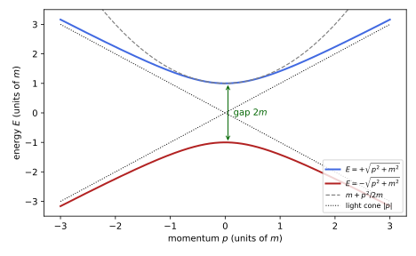
figures/dq-dispersion.sage.
The definition below states the Hamiltonian form of the equation. Its coefficients are four matrices whose algebra is fixed by the requirement that the square of the Hamiltonian be the relativistic energy.
Definition 1 (Dirac Hamiltonian) The Dirac equation in Hamiltonian form for a free particle of mass m is i\partial_t\psi = H\psi, \qquad H = \vec\alpha\cdot\vec p + \beta m = -i\alpha_k\partial_k + \beta m , \tag{1} where \psi takes values in \mathbb{C}^N and \alpha_1, \alpha_2, \alpha_3, \beta are Hermitian N \times N matrices with \alpha_j\alpha_k + \alpha_k\alpha_j = 2\delta_{jk}, \qquad \alpha_k\beta + \beta\alpha_k = 0, \qquad \beta^2 = 1 . \tag{2} With \gamma^0 = \beta and \gamma^k = \beta\alpha_k it is the covariant equation (i\gamma^\mu\partial_\mu - m)\psi = 0 of Definition 12 of Classical field theory.
Veriphy. Pending.
Lean. Pending.
Sage. Pending.
In the Weyl representation the matrices are block diagonal or block off-diagonal. The first example writes them down from the gamma matrices of Example 39 of Classical field theory.
Example 1 (The Weyl representation) With \gamma^0 = \begin{pmatrix} 0 & 1 \\ 1 & 0\end{pmatrix} and \gamma^k = \begin{pmatrix} 0 & \sigma_k \\ -\sigma_k & 0\end{pmatrix}, the matrices \beta = \gamma^0 and \alpha_k = \gamma^0\gamma^k = \begin{pmatrix} -\sigma_k & 0 \\ 0 & \sigma_k\end{pmatrix} satisfy Equation 2. The Hamiltonian H = \begin{pmatrix} -\vec\sigma\cdot\vec p & m \\ m & \vec\sigma\cdot\vec p\end{pmatrix} acts on the upper and lower two-component spinors as \mp\vec\sigma\cdot\vec p, and the mass couples them.
Veriphy. Pending.
Lean. Pending.
Sage. Pending.
For particles at rest a diagonal \beta is more convenient. The second example uses the Dirac representation of Exercise 41 of Classical field theory, in which the rest energy separates the upper from the lower components.
Example 2 (The Dirac representation) \beta = \begin{pmatrix} 1 & 0 \\ 0 & -1\end{pmatrix} and \alpha_k = \begin{pmatrix} 0 & \sigma_k \\ \sigma_k & 0\end{pmatrix} satisfy Equation 2, since \sigma_j\sigma_k + \sigma_k\sigma_j = 2\delta_{jk} and the off-diagonal blocks anticommute with \beta. At \vec p = 0 the Hamiltonian is H = \beta m: the upper components have energy +m and the lower ones -m. This is the representation of the non-relativistic limit (Section 1.3).
Veriphy. Pending.
Lean. Pending.
Sage. Pending.
In one space dimension only \alpha_1 and \beta are needed, and 2 \times 2 matrices suffice. The third example is the model used for the Klein paradox and the Zitterbewegung in Section 1.6.
Example 3 (One space dimension) In 1 + 1 dimensions H = \sigma_1p + \sigma_3m acts on two-component wave functions: \alpha = \sigma_1 and \beta = \sigma_3 anticommute and square to one. Its eigenvalues are \pm\sqrt{p^2 + m^2}, each once, with eigenvectors proportional to (E + m, p) for E > 0 and (-p, E + m) for -E. The gamma matrices are \gamma^0 = \sigma_3 and \gamma^1 = \sigma_3\sigma_1 = i\sigma_2, another choice than the one of Example 40 of Classical field theory.
Veriphy. Pending.
Lean. Pending.
Sage. Pending.
The square of the Hamiltonian is where the relations Equation 2 come from. The fourth example computes it and explains the two branches of Figure 1.
Example 4 (The square of the Hamiltonian) H^2 = \alpha_j\alpha_kp_jp_k + (\alpha_k\beta + \beta\alpha_k)p_km + \beta^2m^2 = \tfrac12\{\alpha_j, \alpha_k\}p_jp_k + m^2 = (\vec p^{\,2} + m^2)1. On a plane wave e^{i\vec p\cdot\vec x} the eigenvalues of H are therefore \pm E_p, E_p = \sqrt{\vec p^{\,2} + m^2}, and since \operatorname{tr}H = 0 (Proposition 1) each sign occurs N/2 times. The negative branch cannot be discarded: it is needed for completeness of the eigenvectors.
Veriphy. Pending.
Lean. Pending.
Sage. Pending.
The first exercise runs the argument of the last example backwards. It shows that the relations Equation 2 are not only sufficient but necessary.
Exercise 1 (Necessity of the relations) Let H = \alpha_kp_k + \beta m with constant matrices. Show that H^2 = (\vec p^{\,2} + m^2)1 for all \vec p and m if and only if the relations Equation 2 hold.
H^2 = \sum_k\alpha_k^2p_k^2 + \sum_{j < k}\{\alpha_j, \alpha_k\}p_jp_k + \sum_k\{\alpha_k, \beta\}p_km + \beta^2m^2. This is a polynomial in p_1, p_2, p_3, m with matrix coefficients, and it equals (\vec p^{\,2} + m^2)1 for all values if and only if the coefficients agree monomial by monomial: \alpha_k^2 = 1, \{\alpha_j, \alpha_k\} = 0 for j \neq k, \{\alpha_k, \beta\} = 0 and \beta^2 = 1, which is Equation 2.
Veriphy. Pending.
Lean. Pending.
Sage. Pending.
The Hamiltonian form and the covariant form of the equation are the same equation. The second exercise checks that the gamma matrices built from \alpha and \beta satisfy the Clifford relations of Definition 9 of Classical field theory.
Exercise 2 (From \alpha, \beta to \gamma^\mu) Show that \gamma^0 = \beta, \gamma^k = \beta\alpha_k satisfy \{\gamma^\mu, \gamma^\nu\} = 2\eta^{\mu\nu}, that \gamma^0 is Hermitian and the \gamma^k anti-Hermitian, and that multiplying (i\gamma^\mu\partial_\mu - m)\psi = 0 by \gamma^0 gives Equation 1.
(\gamma^0)^2 = \beta^2 = 1; \gamma^0\gamma^k + \gamma^k\gamma^0 = \beta\beta\alpha_k + \beta\alpha_k\beta = \alpha_k - \alpha_k = 0; \gamma^j\gamma^k + \gamma^k\gamma^j = \beta\alpha_j\beta\alpha_k + \beta\alpha_k\beta\alpha_j = -\{\alpha_j, \alpha_k\} = -2\delta_{jk}. Further (\beta\alpha_k)^\dagger = \alpha_k\beta = -\beta\alpha_k. Finally \gamma^0(i\gamma^0\partial_t + i\gamma^k\partial_k - m)\psi = (i\partial_t + i\alpha_k\partial_k - \beta m)\psi = 0, which is i\partial_t\psi = (-i\alpha_k\partial_k + \beta m)\psi.
Veriphy. Pending.
Lean. Pending.
Sage. Pending.
The relations are a finite set of matrix identities, and for the explicit Weyl matrices they can be checked by computer. The third exercise does this and also finds the eigenvalues of H for a sample momentum.
Exercise 3 (The Weyl matrices by computer) With Sage, build \alpha_k and \beta of Example 1, check Equation 2, and compute the eigenvalues of H for \vec p = (2, 3, 6) and m = 24.
All ten relations hold, and since |\vec p| = 7 and \sqrt{49 + 576} = 25 the eigenvalues are \pm25, each twice:
s = [matrix(SR, [[0, 1], [1, 0]]), matrix(SR, [[0, -I], [I, 0]]), matrix(SR, [[1, 0], [0, -1]])]
Z = zero_matrix(SR, 2); one = identity_matrix(SR, 2)
blk = lambda a, b, c, d: block_matrix([[a, b], [c, d]], subdivide=False)
g = [blk(Z, one, one, Z)] + [blk(Z, sk, -sk, Z) for sk in s] # Weyl representation
g5 = I * g[0] * g[1] * g[2] * g[3]; I4 = identity_matrix(SR, 4)
eta = diagonal_matrix(SR, [1, -1, -1, -1])
beta = g[0]; alpha = [g[0] * g[k] for k in (1, 2, 3)]
print("alpha_k =", [a.diagonal() for a in alpha], "(diagonal blocks -sigma_k, sigma_k)")
print("{alpha_j, alpha_k} = 2 delta_jk:", all(alpha[j] * alpha[k] + alpha[k] * alpha[j] == 2 * kronecker_delta(j, k) * I4 for j in range(3) for k in range(3)))
print("{alpha_k, beta} = 0 and beta^2 = 1:", all(a * beta + beta * a == 0 for a in alpha) and beta^2 == I4)
H = 2 * alpha[0] + 3 * alpha[1] + 6 * alpha[2] + 24 * beta
print("eigenvalues of H:", sorted(H.eigenvalues()))Output:
alpha_k = [[0, 0, 0, 0], [0, 0, 0, 0], [-1, 1, 1, -1]] (diagonal blocks -sigma_k, sigma_k)
{alpha_j, alpha_k} = 2 delta_jk: True
{alpha_k, beta} = 0 and beta^2 = 1: True
eigenvalues of H: [-25, -25, 25, 25]Veriphy. Pending.
Lean. Pending.
Sage. Pending.
Other authors write the equation with other signatures and signs. The fourth exercise translates the form used by Zhelnorovich (2019) into ours, a useful exercise in reading the literature.
Exercise 4 (Another signature) Zhelnorovich (2019, sec. 5.2, eq. (5.19)) writes the Dirac equation as G^j\partial_j\psi + m\psi = 0 with G^iG^j + G^jG^i = 2g^{ij}, g = \operatorname{diag}(1, 1, 1, -1) and x^4 = t. Show that G^k = i\gamma^k, G^4 = i\gamma^0 satisfy his relations, and that his equation becomes ours with m \to -m, equivalently with \psi \to \gamma_5\psi.
(i\gamma^k)^2 = -(\gamma^k)^2 = 1 and (i\gamma^0)^2 = -1, while distinct ones anticommute, so the G satisfy his relations. Then G^j\partial_j = i\gamma^k\partial_k + i\gamma^0\partial_t = i\gamma^\mu\partial_\mu, and his equation reads (i\gamma^\mu\partial_\mu + m)\psi = 0. Since \gamma_5 anticommutes with every \gamma^\mu, \psi' = \gamma_5\psi satisfies (i\gamma^\mu\partial_\mu - m)\psi' = -\gamma_5(i\gamma^\mu\partial_\mu + m)\psi = 0: the sign of the mass is a convention.
Veriphy. Pending.
Lean. Pending.
Sage. Pending.
The size of the matrices is not a free choice: the algebra Equation 2 forces it. The proposition below shows that four is the smallest possible size, so the Dirac wave function has four components.
Proposition 1 (The size of the Dirac matrices) Hermitian matrices \alpha_1, \alpha_2, \alpha_3, \beta satisfying Equation 2 are traceless with eigenvalues \pm1, so their size N is even, and N = 2 is impossible; the smallest size is N = 4, realised by Example 1, and every solution of size four is equivalent to it, while solutions of larger size are direct sums of size-four ones Zhelnorovich (2019, sec. 5.1, eqs. (5.12)-(5.13)).
Proof. Each matrix squares to 1, so its eigenvalues are \pm1. For \beta, \operatorname{tr}\beta = \operatorname{tr}(\alpha_1^2\beta) = \operatorname{tr}(\alpha_1\beta\alpha_1) = -\operatorname{tr}(\alpha_1\alpha_1\beta) = -\operatorname{tr}\beta by cyclicity and anticommutation, so \operatorname{tr}\beta = 0, and likewise for each \alpha_k. A traceless matrix with eigenvalues \pm1 has as many of each, so N is even. For N = 2 four mutually anticommuting matrices would be needed, but the three Pauli matrices together with 1 span all 2 \times 2 matrices and a fourth anticommuting with all three cannot exist (Exercise 6). The uniqueness and the decomposition are Pauli’s theorem, Theorem 1 of Spinors and the Dirac operator, applied to the gamma matrices of Exercise 2.
Veriphy. Pending.
Lean. Pending.
Sage. Pending.
The vanishing of the traces is a one-line argument that recurs throughout the chapter. The first example applies it to products of the matrices.
Example 5 (Traces of products) \operatorname{tr}(\alpha_j\beta) = 0, since \alpha_j\beta = \alpha_j\beta\alpha_k\alpha_k for any k \neq j and moving \alpha_k around the trace gives a minus sign; likewise \operatorname{tr}(\alpha_j\alpha_k) = 4\delta_{jk} for N = 4. In the Weyl representation \operatorname{tr}\alpha_k = \operatorname{tr}(-\sigma_k) + \operatorname{tr}\sigma_k = 0 and \operatorname{tr}\beta = 0 is visible directly, the diagonal of \gamma^0 being zero.
Veriphy. Pending.
Lean. Pending.
Sage. Pending.
In two space dimensions only three anticommuting matrices are needed, and the Pauli matrices supply them. The second example shows that the Dirac equation in the plane needs only two components.
Example 6 (Two components in the plane) In 2 + 1 dimensions H = \sigma_1p_1 + \sigma_2p_2 + \sigma_3m satisfies H^2 = p_1^2 + p_2^2 + m^2: the three Pauli matrices are \alpha_1, \alpha_2, \beta. A two-component spinor suffices because the number of anticommuting matrices needed is d + 1 = 3, which 2 \times 2 matrices can provide; in 3 + 1 dimensions four are needed and N = 4, in agreement with the size 2^{\lfloor d/2\rfloor} of Definition 2 of Spinors and the Dirac operator.
Veriphy. Pending.
Lean. Pending.
Sage. Pending.
Without mass, \beta is not needed at all. The third example finds two-component equations in three space dimensions, the Weyl equations of Section 1.5.
Example 7 (Massless particles with two components) For m = 0 the Hamiltonians H_\pm = \pm\vec\sigma\cdot\vec p satisfy H_\pm^2 = \vec p^{\,2} with 2 \times 2 matrices, since only the three \alpha_k = \pm\sigma_k must anticommute. These are the two blocks of the Weyl Hamiltonian of Example 1: without mass the four-component equation splits into two two-component ones (Example 49 of Classical field theory), and the eigenvalue sign of \vec\sigma\cdot\hat p is the helicity of Definition 6.
Veriphy. Pending.
Lean. Pending.
Sage. Pending.
The first exercise isolates the counting argument of the proof. It needs only the trace and the eigenvalues. The same counting fixes the multiplicities of the two energy signs.
Exercise 5 (Even size) Show that a Hermitian N \times N matrix M with M^2 = 1 and \operatorname{tr}M = 0 has N/2 eigenvalues +1 and N/2 eigenvalues -1. Why does this force N to be even for the Dirac matrices?
M is diagonalisable with eigenvalues in \{1, -1\}; if n_\pm count them, n_+ + n_- = N and \operatorname{tr}M = n_+ - n_- = 0, so n_+ = n_- = N/2 and N is even. The Dirac matrices satisfy both hypotheses by the proof of Proposition 1, so their common size is even; the energy eigenvalues \pm E_p inherit the equal multiplicities.
Veriphy. Pending.
Lean. Pending.
Sage. Pending.
The second exercise closes the gap left in the proof, the impossibility of size two. It is an exercise in expanding a matrix in the Pauli basis.
Exercise 6 (No fourth Pauli matrix) Write a 2 \times 2 matrix as M = a_01 + \vec a\cdot\vec\sigma. Show that M\sigma_k + \sigma_kM = 0 for k = 1, 2, 3 forces M = 0. Conclude that no 2 \times 2 solution of Equation 2 exists.
\{1, \sigma_k\} = 2\sigma_k and \{\sigma_j, \sigma_k\} = 2\delta_{jk}, so \{M, \sigma_k\} = 2a_0\sigma_k + 2a_k1, which vanishes only for a_0 = a_k = 0. Hence at most three mutually anticommuting 2 \times 2 matrices exist. Four are required (three \alpha_k and \beta), so N = 2 is impossible and, N being even, N \geq 4.
Veriphy. Pending.
Lean. Pending.
Sage. Pending.
Matrices larger than four can satisfy the relations, but they are reducible. The third exercise shows this for size eight with Sage, by computing the matrices that commute with all four.
Exercise 7 (A reducible solution of size eight) Let \alpha_k' = \alpha_k \otimes 1_2, \beta' = \beta \otimes \sigma_3 with the Weyl matrices. Check with Sage that they satisfy Equation 2, and compute the dimension of the space of 8 \times 8 matrices commuting with all four. What does it say about irreducibility?
The relations hold. A matrix commuting with an irreducible set is a multiple of 1 (Schur), so a commutant of dimension larger than one signals reducibility. Here it has dimension 4: the eigenspaces of 1 \otimes \sigma_3 carry (\alpha_k, \beta) and (\alpha_k, -\beta), and \gamma_5, which commutes with the \alpha_k and anticommutes with \beta, makes the two equivalent, so the commutant is a copy of M_2(\mathbb{C}):
s = [matrix(SR, [[0, 1], [1, 0]]), matrix(SR, [[0, -I], [I, 0]]), matrix(SR, [[1, 0], [0, -1]])]
Z = zero_matrix(SR, 2); one = identity_matrix(SR, 2)
blk = lambda a, b, c, d: block_matrix([[a, b], [c, d]], subdivide=False)
g = [blk(Z, one, one, Z)] + [blk(Z, sk, -sk, Z) for sk in s] # Weyl representation
g5 = I * g[0] * g[1] * g[2] * g[3]; I4 = identity_matrix(SR, 4)
eta = diagonal_matrix(SR, [1, -1, -1, -1])
beta = g[0]; alpha = [g[0] * g[k] for k in (1, 2, 3)]
A = [a.tensor_product(one) for a in alpha]; B = beta.tensor_product(s[2])
I8 = identity_matrix(SR, 8)
print("relations in size 8:", all(A[j] * A[k] + A[k] * A[j] == 2 * kronecker_delta(j, k) * I8 for j in range(3) for k in range(3)) and all(a * B + B * a == 0 for a in A) and B^2 == I8)
X = matrix(SR, 8, 8, var(" ".join("x%d_%d" % (i, j) for i in range(8) for j in range(8))))
eqs = [e for M in A + [B] for e in (X * M - M * X).list()]
sol = solve(eqs, X.list(), solution_dict=True)[0]
free = set(v for val in sol.values() for v in SR(val).variables())
print("dimension of the commutant:", len(free))
# the two blocks sigma_3 = +1, -1 carry (alpha, beta) and (alpha, -beta), and gamma_5 maps one to the other
print("gamma_5 commutes with alpha_k and anticommutes with beta:", all(g5 * a == a * g5 for a in alpha) and g5 * beta == -beta * g5)
C = [I4.tensor_product(one), I4.tensor_product(s[2]), g5.tensor_product(s[0]), g5.tensor_product(s[1])]
print("1(x)1, 1(x)sigma_3, gamma_5(x)sigma_1, gamma_5(x)sigma_2 lie in the commutant:", all(X_ * M == M * X_ for X_ in C for M in A + [B]))Output:
relations in size 8: True
dimension of the commutant: 4
gamma_5 commutes with alpha_k and anticommutes with beta: True
1(x)1, 1(x)sigma_3, gamma_5(x)sigma_1, gamma_5(x)sigma_2 lie in the commutant: TrueVeriphy. Pending.
Lean. Pending.
Sage. Pending.
Lorentz covariance
The Hamiltonian form singles out time, and the question is whether the equation looks the same to a moving observer. It does, provided the four components are mixed by the spinor representation of the Lorentz group of Definition 10 of Classical field theory. The figure shows a spinor at rest boosted along z.
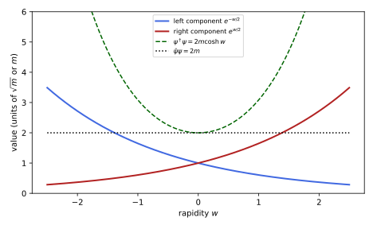
figures/dq-boost.sage.
The theorem below states the covariance. It follows the argument of Zhelnorovich (2019, sec. 5.1), translated to our signature: an equation is covariant if a matrix S intertwines the vector and the spinor actions.
Theorem 1 (Lorentz covariance of the Dirac equation) Let \Lambda be a Lorentz transformation, x' = \Lambda x, and S an invertible 4 \times 4 matrix with S^{-1}\gamma^\mu S = \Lambda^\mu{}_\nu\gamma^\nu . \tag{3} If \psi solves (i\gamma^\mu\partial_\mu - m)\psi = 0, then \psi'(x') = S\psi(x) solves the same equation in the coordinates x'. For \Lambda in the identity component, S = \exp(\tfrac12\omega_{\mu\nu}S^{\mu\nu}) with the generators of Definition 10 of Classical field theory satisfies Equation 3, and Equation 3 determines S up to a factor, which the condition \det S = 1 fixes up to sign Zhelnorovich (2019, sec. 5.1, eqs. (5.6), (5.11)-(5.13)).
Proof. With \partial'_\mu = (\Lambda^{-1})^\nu{}_\mu\partial_\nu, i\gamma^\mu\partial'_\mu\psi' = S\, iS^{-1}\gamma^\mu S(\Lambda^{-1})^\nu{}_\mu\partial_\nu\psi = S\,i\Lambda^\mu{}_\rho(\Lambda^{-1})^\nu{}_\mu\gamma^\rho\partial_\nu\psi = S\,i\gamma^\nu\partial_\nu\psi = mS\psi = m\psi'. For S = 1 + \tfrac12\omega_{\mu\nu}S^{\mu\nu} and \Lambda^\rho{}_\sigma = \delta^\rho_\sigma + \omega^\rho{}_\sigma, Equation 3 to first order is \tfrac12\omega_{\mu\nu}[\gamma^\rho, S^{\mu\nu}] = \omega^\rho{}_\sigma\gamma^\sigma, which follows from [\gamma^\rho, S^{\mu\nu}] = \eta^{\rho\mu}\gamma^\nu - \eta^{\rho\nu}\gamma^\mu (Exercise 9); exponentiation gives the finite statement. If S_1, S_2 both satisfy Equation 3, then S_1S_2^{-1} commutes with all \gamma^\mu and is a multiple of 1 by Theorem 1 of Spinors and the Dirac operator.
Veriphy. Pending.
Lean. Pending.
Sage. Pending.
Rotations are the simplest case, and in the Weyl representation they act in the same way on both chiralities. The first example checks Equation 3 for a rotation about the z-axis.
Example 8 (Rotations) For S = \exp(\theta S^{12}) = \operatorname{diag}(e^{-i\theta\sigma_3/2}, e^{-i\theta\sigma_3/2}) (Example 42 of Classical field theory) one finds S^{-1}\gamma^1S = \cos\theta\,\gamma^1 - \sin\theta\,\gamma^2 and S^{-1}\gamma^2S = \sin\theta\,\gamma^1 + \cos\theta\,\gamma^2: \Lambda is the rotation by \theta in the (x, y) plane. S is unitary, and at \theta = 2\pi it is -1 while \Lambda = 1: the two signs of S in the theorem.
Veriphy. Pending.
Lean. Pending.
Sage. Pending.
Boosts mix time and space and are not unitary on spinors. The second example takes a boost along z and shows its action on the spinor of a particle at rest, drawn in Figure 2.
Example 9 (Boosts) For S = \exp(wS^{03}) = \operatorname{diag}(e^{-w\sigma_3/2}, e^{w\sigma_3/2}), with S^{03} = \tfrac12\gamma^0\gamma^3 = \tfrac12\operatorname{diag}(-\sigma_3, \sigma_3), one has S^{-1}\gamma^0S = \cosh w\,\gamma^0 + \sinh w\,\gamma^3 (Exercise 44 of Classical field theory). Applied to the rest spinor \sqrt m(1, 0, 1, 0) it gives \sqrt m(e^{-w/2}, 0, e^{w/2}, 0), the spinor of a particle with momentum p = m\sinh w along z (Exercise 50 of Classical field theory), whose right-handed component dominates at large w.
Veriphy. Pending.
Lean. Pending.
Sage. Pending.
The relation Equation 3 also makes sense for improper transformations. The third example finds the matrix for the space reflection, which is not in the identity component and which the parity of Definition 14 uses.
Example 10 (Space reflection) For \Lambda = \operatorname{diag}(1, -1, -1, -1), S = \gamma^0 satisfies S^{-1}\gamma^0S = \gamma^0 and S^{-1}\gamma^kS = -\gamma^k, so \psi'(t, \vec x) = \gamma^0\psi(t, -\vec x) solves the Dirac equation whenever \psi does. In the Weyl representation \gamma^0 exchanges the upper and lower components: a reflection exchanges left- and right-handed spinors, which is why a theory of one chirality alone can violate parity.
Veriphy. Pending.
Lean. Pending.
Sage. Pending.
The first exercise asks for the full chain of the proof with all indices. It is worth doing once with care, since the placement of \Lambda and \Lambda^{-1} is easy to confuse.
Exercise 8 (The proof in detail) Show that \partial'_\mu = (\Lambda^{-1})^\nu{}_\mu\partial_\nu for x' = \Lambda x, and complete the first part of the proof of Theorem 1. Where is \Lambda^\mu{}_\rho(\Lambda^{-1})^\nu{}_\mu = \delta^\nu_\rho used?
From x = \Lambda^{-1}x', \partial x^\nu/\partial x'^\mu = (\Lambda^{-1})^\nu{}_\mu, so \partial'_\mu = (\Lambda^{-1})^\nu{}_\mu\partial_\nu by the chain rule. Then \gamma^\mu\partial'_\mu S\psi = S(S^{-1}\gamma^\mu S)(\Lambda^{-1})^\nu{}_\mu\partial_\nu\psi = S\Lambda^\mu{}_\rho(\Lambda^{-1})^\nu{}_\mu\gamma^\rho\partial_\nu\psi, and the product of \Lambda^{-1} and \Lambda summed over \mu is \delta^\nu_\rho, leaving S\gamma^\nu\partial_\nu\psi. The mass term commutes with S, so (i\gamma^\mu\partial'_\mu - m)\psi' = S(i\gamma^\nu\partial_\nu - m)\psi = 0.
Veriphy. Pending.
Lean. Pending.
Sage. Pending.
The infinitesimal form of Equation 3 is a commutator identity of gamma matrices. The second exercise derives it, reproducing the condition (5.11) of Zhelnorovich (2019) in our signature.
Exercise 9 (The infinitesimal condition) Show that [\gamma^\rho, S^{\mu\nu}] = \eta^{\rho\mu}\gamma^\nu - \eta^{\rho\nu}\gamma^\mu for S^{\mu\nu} = \tfrac14[\gamma^\mu, \gamma^\nu], and deduce that S = 1 + \tfrac12\omega_{\mu\nu}S^{\mu\nu} satisfies Equation 3 to first order with \Lambda^\rho{}_\sigma = \delta^\rho_\sigma + \omega^\rho{}_\sigma.
For \mu \neq \nu, S^{\mu\nu} = \tfrac12\gamma^\mu\gamma^\nu, and \gamma^\rho\gamma^\mu\gamma^\nu - \gamma^\mu\gamma^\nu\gamma^\rho = \{\gamma^\rho, \gamma^\mu\}\gamma^\nu - \gamma^\mu\{\gamma^\rho, \gamma^\nu\} = 2\eta^{\rho\mu}\gamma^\nu - 2\eta^{\rho\nu}\gamma^\mu; halving gives the identity, which also holds trivially for \mu = \nu. Then S^{-1}\gamma^\rho S \approx \gamma^\rho + \tfrac12\omega_{\mu\nu}[\gamma^\rho, S^{\mu\nu}] = \gamma^\rho + \tfrac12(\omega^\rho{}_\nu\gamma^\nu - \omega_\mu{}^\rho\gamma^\mu) = \gamma^\rho + \omega^\rho{}_\sigma\gamma^\sigma, using the antisymmetry of \omega.
Veriphy. Pending.
Lean. Pending.
Sage. Pending.
A boost in an arbitrary direction mixes all components. The third exercise checks Equation 3 with Sage for a boost along \hat n = (1, 2, 2)/3.
Exercise 10 (A boost in a general direction) For S = \exp(w\,n_kS^{0k}) with \hat n = (1, 2, 2)/3 and w = \log 2, compute S^{-1}\gamma^\mu S with Sage and compare with the vector boost \Lambda^0{}_0 = \cosh w, \Lambda^0{}_k = \Lambda^k{}_0 = n_k\sinh w, \Lambda^j{}_k = \delta_{jk} + (\cosh w - 1)n_jn_k.
With w = \log 2, \cosh w = 5/4 and \sinh w = 3/4, so all entries of \Lambda are rational and the comparison is exact:
s = [matrix(SR, [[0, 1], [1, 0]]), matrix(SR, [[0, -I], [I, 0]]), matrix(SR, [[1, 0], [0, -1]])]
Z = zero_matrix(SR, 2); one = identity_matrix(SR, 2)
blk = lambda a, b, c, d: block_matrix([[a, b], [c, d]], subdivide=False)
g = [blk(Z, one, one, Z)] + [blk(Z, sk, -sk, Z) for sk in s] # Weyl representation
g5 = I * g[0] * g[1] * g[2] * g[3]; I4 = identity_matrix(SR, 4)
eta = diagonal_matrix(SR, [1, -1, -1, -1])
n = vector(QQ, [1, 2, 2]) / 3; ch, sh = QQ(5) / 4, QQ(3) / 4
# n_k S^{0k} = (1/2) n_k alpha_k squares to 1/4, so exp(w n.S) = cosh(w/2) + 2 n.S sinh(w/2), with cosh(w/2) = 3/(2 sqrt 2), sinh(w/2) = 1/(2 sqrt 2)
nS = sum(n[k] * g[0] * g[k + 1] for k in range(3)) / 2
print("(n.S^{0k})^2 = 1/4:", nS^2 == I4 / 4)
S = 3 / (2 * sqrt(2)) * I4 + 2 * nS / (2 * sqrt(2))
Lam = matrix(SR, 4, 4)
Lam[0, 0] = ch
for k in range(3):
Lam[0, k + 1] = Lam[k + 1, 0] = n[k] * sh
for l in range(3):
Lam[k + 1, l + 1] = kronecker_delta(k, l) + (ch - 1) * n[k] * n[l]
print("Lambda is a Lorentz transformation:", (Lam.transpose() * eta * Lam - eta).simplify_full() == 0)
Si = S.inverse()
print("S^-1 gamma^mu S = Lambda^mu_nu gamma^nu for all mu:", all((Si * g[mu] * S - sum(Lam[mu, nu] * g[nu] for nu in range(4))).simplify_full() == 0 for mu in range(4)))Output:
(n.S^{0k})^2 = 1/4: True
Lambda is a Lorentz transformation: True
S^-1 gamma^mu S = Lambda^mu_nu gamma^nu for all mu: TrueVeriphy. Pending.
Lean. Pending.
Sage. Pending.
The matrix S is fixed by \Lambda only up to a factor, and the factor is the reason spinors are double-valued. The fourth exercise makes this precise.
Exercise 11 (The sign of S) Show that if S satisfies Equation 3 then so does cS for any c \neq 0, and that \det S = 1 leaves c \in \{\pm1, \pm i\}. Show that for the exponentials of the theorem only \pm S occur, by following \exp(\theta S^{12}) from \theta = 0 to 2\pi.
Equation 3 is homogeneous in S, so cS works; \det(cS) = c^4\det S, so \det S = 1 allows c^4 = 1. The exponentials \exp(\tfrac12\omega_{\mu\nu}S^{\mu\nu}) have \det = \exp(\operatorname{tr}\tfrac12\omega_{\mu\nu}S^{\mu\nu}) = 1 since the generators are traceless, and along the path \theta \mapsto \exp(\theta S^{12}) the rotation \Lambda returns to 1 at 2\pi while S returns to -1 (Example 8); the factors \pm i are not reached continuously from 1 over \Lambda = 1. The group of the S is the double cover \mathrm{Spin}(1, 3) of Definition 6 of Spinors and the Dirac operator.
Veriphy. Pending.
Lean. Pending.
Sage. Pending.
Products \bar\psi\Gamma\psi of two spinors transform as tensors when \Gamma is chosen well. The definition below lists the sixteen independent ones, the tensors of Zhelnorovich (2019, sec. 3.2.1).
Definition 2 (Bilinear covariant) The bilinear covariants of a Dirac spinor \psi are the real quantities \Omega = \bar\psi\psi, \quad j^\mu = \bar\psi\gamma^\mu\psi, \quad M^{\mu\nu} = \tfrac{i}{2}\bar\psi[\gamma^\mu, \gamma^\nu]\psi, \quad a^\mu = \bar\psi\gamma^\mu\gamma_5\psi, \quad N = i\bar\psi\gamma_5\psi , \tag{4} with \bar\psi = \psi^\dagger\gamma^0: a scalar, a vector, an antisymmetric tensor, an axial vector and a pseudoscalar, 1 + 4 + 6 + 4 + 1 = 16 in all, one for each basis element \Gamma_A of the Clifford algebra (Proposition 1 of Spinors and the Dirac operator) Zhelnorovich (2019, sec. 3.2.1, eqs. (3.57)-(3.59)).
Veriphy. Pending.
Lean. Pending.
Sage. Pending.
A spinor at rest makes the meaning of the bilinears transparent. The first example evaluates them for the rest spinor of Exercise 49 of Classical field theory.
Example 11 (A particle at rest) For u = \sqrt m(\xi, \xi) with \xi^\dagger\xi = 1: \Omega = 2m\xi^\dagger\xi = 2m, j^\mu = (2m, \vec 0), N = 0, and a^\mu = (0, 2m\,\xi^\dagger\vec\sigma\xi): the axial vector is twice the mass times the spin direction. Moving particles have j^\mu = 2p^\mu (Example 15), and the axial vector becomes the boosted spin vector.
Veriphy. Pending.
Lean. Pending.
Sage. Pending.
The sixteen bilinears are not independent: a spinor has eight real components and one overall phase. The second example states the algebraic identities that connect them.
Example 12 (Fierz identities) For every \psi, j_\mu j^\mu = \Omega^2 + N^2, j_\mu a^\mu = 0, and a_\mu a^\mu = -j_\mu j^\mu, together with j^0 = \psi^\dagger\psi \geq 0. So j is timelike or null and future pointing, and a is spacelike and orthogonal to it. These are Zhelnorovich (2019, sec. 3.2.1, eqs. (3.60)) converted to our signature (his g = \operatorname{diag}(1, 1, 1, -1) reverses the sign of every contraction).
Veriphy. Pending.
Lean. Pending.
Sage. Pending.
The bilinears transform as tensors because the Dirac conjugate is built for that. The third example states the rule and gives the reason.
Example 13 (Transformation of bilinears) Since \gamma^0S^\dagger\gamma^0 = S^{-1} (Exercise 47 of Classical field theory), \overline{S\psi} = \bar\psi S^{-1}, and so \overline{\psi'}\gamma^\mu\psi' = \bar\psi S^{-1}\gamma^\mu S\psi = \Lambda^\mu{}_\nu j^\nu: j^\mu is a vector. Likewise \Omega is a scalar, M^{\mu\nu} a tensor, and since \gamma_5 commutes with S, a^\mu and N are a vector and a scalar under proper transformations; under the reflection S = \gamma^0 they acquire an extra sign, hence the names axial and pseudo.
Veriphy. Pending.
Lean. Pending.
Sage. Pending.
The coefficients of a general first-order spinor equation are built from the same sixteen matrices. The fourth example records the general form, of which the electromagnetic coupling is one case.
Example 14 (The general linear spinor equation) Zhelnorovich (2019, sec. 5.2, eq. (5.17)) writes the most general covariant equation of the form \gamma^\mu\partial_\mu\psi + F\psi = 0 with F a combination of 1, \gamma^\mu, [\gamma^\mu, \gamma^\nu], \gamma^\mu\gamma_5 and \gamma_5 with coefficient fields of the corresponding tensor type. In our notation i\gamma^\mu\partial_\mu\psi = (m + q\gamma^\mu A_\mu + \gamma^\mu\gamma_5b_\mu + \dots)\psi: the vector coefficient qA_\mu is the electromagnetic potential of Definition 7, the axial one an axial background, and m the scalar.
Veriphy. Pending.
Lean. Pending.
Sage. Pending.
The first exercise checks the reality of the bilinears, which justifies the factors of i in Equation 4. It extends Exercise 45 of Classical field theory to the bilinears with \gamma_5.
Exercise 12 (Reality) Using \gamma^0\gamma^{\mu\dagger}\gamma^0 = \gamma^\mu and \gamma_5^\dagger = \gamma_5, show that \Omega, j^\mu, a^\mu, N and M^{\mu\nu} are real, and that \bar\psi\gamma_5\psi is imaginary.
For any \Gamma, (\bar\psi\Gamma\psi)^* = \psi^\dagger\Gamma^\dagger\gamma^0\psi = \bar\psi(\gamma^0\Gamma^\dagger\gamma^0)\psi. For \Gamma = 1, \gamma^\mu the bracket is \Gamma. For \Gamma = \gamma_5: \gamma^0\gamma_5\gamma^0 = -\gamma_5, so \bar\psi\gamma_5\psi is imaginary and N real. For \Gamma = \gamma^\mu\gamma_5: \gamma^0\gamma_5\gamma^{\mu\dagger}\gamma^0 = -\gamma_5\gamma^\mu = \gamma^\mu\gamma_5, so a^\mu is real. For \Gamma = [\gamma^\mu, \gamma^\nu]: \gamma^0[\gamma^\nu{}^\dagger, \gamma^\mu{}^\dagger]\gamma^0 = [\gamma^\nu, \gamma^\mu] = -[\gamma^\mu, \gamma^\nu], so \bar\psi[\gamma^\mu, \gamma^\nu]\psi is imaginary and M^{\mu\nu} real.
Veriphy. Pending.
Lean. Pending.
Sage. Pending.
The Fierz identities of Example 12 are polynomial identities in the components of \psi. The second exercise verifies them with Sage on a generic spinor.
Exercise 13 (The Fierz identities by computer) With Sage, compute the bilinears Equation 4 for \psi with symbolic real and imaginary parts, and verify j\cdot j = \Omega^2 + N^2, j\cdot a = 0 and a\cdot a = -j\cdot j.
All three are identities of polynomials of degree four in the eight real components:
s = [matrix(SR, [[0, 1], [1, 0]]), matrix(SR, [[0, -I], [I, 0]]), matrix(SR, [[1, 0], [0, -1]])]
Z = zero_matrix(SR, 2); one = identity_matrix(SR, 2)
blk = lambda a, b, c, d: block_matrix([[a, b], [c, d]], subdivide=False)
g = [blk(Z, one, one, Z)] + [blk(Z, sk, -sk, Z) for sk in s] # Weyl representation
g5 = I * g[0] * g[1] * g[2] * g[3]; I4 = identity_matrix(SR, 4)
eta = diagonal_matrix(SR, [1, -1, -1, -1])
a = var("a0 a1 a2 a3", domain="real"); b = var("b0 b1 b2 b3", domain="real")
psi = vector(SR, [a[i] + I * b[i] for i in range(4)])
bar = psi.conjugate() * g[0]
Om = (bar * psi).expand(); N = (I * bar * g5 * psi).expand()
j = [(bar * g[m] * psi).expand() for m in range(4)]; ax = [(bar * g[m] * g5 * psi).expand() for m in range(4)]
dot = lambda x, y: (x[0] * y[0] - x[1] * y[1] - x[2] * y[2] - x[3] * y[3]).expand()
print("Omega and N are real:", bool(Om.imag_part().simplify_full() == 0) and bool(N.imag_part().simplify_full() == 0))
print("j.j = Omega^2 + N^2:", bool((dot(j, j) - Om^2 - N^2).simplify_full() == 0))
print("j.a = 0:", bool(dot(j, ax).simplify_full() == 0))
print("a.a = -j.j:", bool((dot(ax, ax) + dot(j, j)).simplify_full() == 0))Output:
Omega and N are real: True
j.j = Omega^2 + N^2: True
j.a = 0: True
a.a = -j.j: TrueVeriphy. Pending.
Lean. Pending.
Sage. Pending.
The space reflection of Example 10 distinguishes the scalar from the pseudoscalar. The third exercise computes the effect on all five types.
Exercise 14 (Bilinears under reflection) For \psi'(t, \vec x) = \gamma^0\psi(t, -\vec x), show that \Omega' = \Omega, N' = -N, j'^0 = j^0, \vec j' = -\vec j, a'^0 = -a^0 and \vec a' = \vec a, all evaluated at (t, -\vec x).
\overline{\psi'} = \psi^\dagger\gamma^0\gamma^0 = \bar\psi\gamma^0, so \overline{\psi'}\Gamma\psi' = \bar\psi\gamma^0\Gamma\gamma^0\psi. \gamma^0 1\gamma^0 = 1; \gamma^0\gamma_5\gamma^0 = -\gamma_5; \gamma^0\gamma^0\gamma^0 = \gamma^0 and \gamma^0\gamma^k\gamma^0 = -\gamma^k; \gamma^0\gamma^\mu\gamma_5\gamma^0 = -\gamma^0\gamma^\mu\gamma^0\gamma_5, which is -\gamma^0\gamma_5 for \mu = 0 and +\gamma^k\gamma_5 for \mu = k. A vector has odd space components, an axial vector even ones: the spin \vec a of Example 11 does not change under a reflection, as an angular momentum should not.
Veriphy. Pending.
Lean. Pending.
Sage. Pending.
The conserved current
The Schrödinger equation conserves \int|\psi|^2, and the Klein-Gordon equation conserves a density that can be negative. The Dirac equation conserves the positive density \psi^\dagger\psi, the time component of the vector j^\mu. The figure follows a wave packet whose norm stays fixed while it moves and spreads.
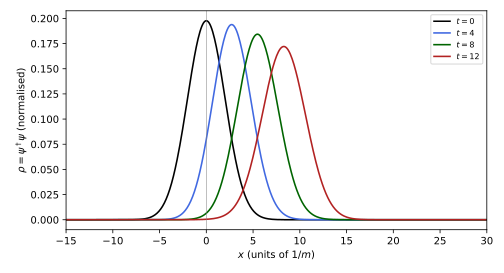
figures/dq-packet.sage.
The definition below names the vector bilinear as a current. Its interpretation as a probability current rests on the proposition that follows it.
Definition 3 (Dirac current) The Dirac current of a spinor field \psi is j^\mu = \bar\psi\gamma^\mu\psi, with density \rho = j^0 = \psi^\dagger\psi and current density \vec j = \psi^\dagger\vec\alpha\psi; for a particle of charge q the electric current is qj^\mu. The charge is Q = \int\rho\,d^3x.
Veriphy. Pending.
Lean. Pending.
Sage. Pending.
For a plane wave the current is proportional to the four-momentum, as it should be for a beam of particles. The first example computes it from the spinors of Exercise 50 of Classical field theory.
Example 15 (The current of a plane wave) For \psi = u(p)e^{-ip\cdot x} with the spinor of Definition 4, j^\mu = \bar u\gamma^\mu u = 2p^\mu: the density is 2E and the current 2\vec p, so the velocity \vec j/\rho = \vec p/E is the classical velocity of a relativistic particle. The factor 2 comes from the normalisation \bar uu = 2m, chosen so that the density transforms as the time component of p^\mu.
Veriphy. Pending.
Lean. Pending.
Sage. Pending.
The current density \psi^\dagger\vec\alpha\psi suggests that \vec\alpha is a velocity operator. The second example confirms this from the Heisenberg equation and notes how strange this operator is.
Example 16 (The velocity operator) \dot{\vec x} = i[H, \vec x] = \vec\alpha (Exercise 15). Each \alpha_k has eigenvalues \pm1, so a measurement of a velocity component in the Dirac representation always gives the speed of light, and the components do not commute. The classical velocity \vec p/E appears only as an average, the rest being the trembling motion of Proposition 9 Costella and McKellar (1995, sec. III).
Veriphy. Pending.
Lean. Pending.
Sage. Pending.
The Klein-Gordon equation has a conserved current too, but its density has no sign. The third example computes it on the two kinds of plane wave and shows why Dirac looked for a first-order equation.
Example 17 (The Klein-Gordon density) For (\Box + m^2)\phi = 0 the conserved current is j^\mu = i(\phi^*\partial^\mu\phi - \phi\partial^\mu\phi^*), with density \rho = i(\phi^*\dot\phi - \phi\dot\phi^*). For \phi = e^{-iEt + i\vec p\cdot\vec x}, \rho = 2E > 0; for \phi = e^{+iEt + i\vec p\cdot\vec x}, \rho = -2E < 0. A superposition can have a density that changes sign, so \rho is not a probability density; the Dirac density \psi^\dagger\psi is positive whatever the energy.
Veriphy. Pending.
Lean. Pending.
Sage. Pending.
The first exercise derives the velocity operator. It is a two-line commutator computation that uses only [x_j, p_k] = i\delta_{jk}.
Exercise 15 (Velocity from the Hamiltonian) Show that i[H, x_k] = \alpha_k for H = \vec\alpha\cdot\vec p + \beta m + V(\vec x), and that i[H, \alpha_k] = 2i(H\alpha_k - p_k) for V = 0.
Only \alpha_jp_j fails to commute with x_k: i[\alpha_jp_j, x_k] = i\alpha_j[p_j, x_k] = i\alpha_j(-i\delta_{jk}) = \alpha_k. For the second, H\alpha_k + \alpha_kH = \{\alpha_j, \alpha_k\}p_j + \{\beta, \alpha_k\}m = 2p_k, so [H, \alpha_k] = 2H\alpha_k - 2p_k; multiplying by i gives the claim, the starting point of Proposition 9.
Veriphy. Pending.
Lean. Pending.
Sage. Pending.
The relation j^\mu = 2p^\mu is an identity between the explicit spinors. The second exercise verifies it with Sage for a momentum along z and both spin states.
Exercise 16 (The current of the spinors) Using u^s = \sqrt m(e^{-w/2}\xi^s, e^{w/2}\xi^s) for \xi^\uparrow = (1, 0) and u^s = \sqrt m(e^{w/2}\xi^s, e^{-w/2}\xi^s) for \xi^\downarrow = (0, 1) (momentum p = m\sinh w along z), compute \bar u^s\gamma^\mu u^s with Sage and compare with 2p^\mu = 2m(\cosh w, 0, 0, \sinh w).
For spin down along z, p\cdot\sigma = E - p\sigma_3 has the entry E + p = me^{w} on \xi^\downarrow, so the components are interchanged. Both spin states give 2p^\mu:
s = [matrix(SR, [[0, 1], [1, 0]]), matrix(SR, [[0, -I], [I, 0]]), matrix(SR, [[1, 0], [0, -1]])]
Z = zero_matrix(SR, 2); one = identity_matrix(SR, 2)
blk = lambda a, b, c, d: block_matrix([[a, b], [c, d]], subdivide=False)
g = [blk(Z, one, one, Z)] + [blk(Z, sk, -sk, Z) for sk in s] # Weyl representation
g5 = I * g[0] * g[1] * g[2] * g[3]; I4 = identity_matrix(SR, 4)
eta = diagonal_matrix(SR, [1, -1, -1, -1])
w = var("w", domain="real"); m = var("m", domain="positive")
ups = {"up": sqrt(m) * vector(SR, [exp(-w / 2), 0, exp(w / 2), 0]), "down": sqrt(m) * vector(SR, [0, exp(w / 2), 0, exp(-w / 2)])}
p = [m * (exp(w) + exp(-w)) / 2, 0, 0, m * (exp(w) - exp(-w)) / 2]
for name, u in ups.items():
cur = [(u * g[0] * g[mu] * u).simplify_full() for mu in range(4)] # u is real for real w
print("spin", name, ": bar(u) gamma^mu u =", cur, "; equals 2 p^mu:", all(bool((c - 2 * pm).simplify_full() == 0) for c, pm in zip(cur, p)))Output:
spin up : bar(u) gamma^mu u = [(m*e^(2*w) + m)*e^(-w), 0, 0, (m*e^(2*w) - m)*e^(-w)] ; equals 2 p^mu: True
spin down : bar(u) gamma^mu u = [(m*e^(2*w) + m)*e^(-w), 0, 0, (m*e^(2*w) - m)*e^(-w)] ; equals 2 p^mu: TrueVeriphy. Pending.
Lean. Pending.
Sage. Pending.
In one space dimension the current has two components and the algebra is two by two. The third exercise writes it for the model of Example 3.
Exercise 17 (The current in one dimension) For H = \sigma_1p + \sigma_3m, show that \rho = \psi^\dagger\psi and j = \psi^\dagger\sigma_1\psi satisfy \partial_t\rho + \partial_xj = 0, and compute j/\rho for the positive-energy plane wave (E + m, p)e^{i(px - Et)}.
With p = -i\partial_x, \partial_t\psi = -iH\psi = -\sigma_1\partial_x\psi - im\sigma_3\psi, and since \sigma_1, \sigma_3 are Hermitian, \partial_t\rho = (\partial_t\psi)^\dagger\psi + \psi^\dagger\partial_t\psi = -(\partial_x\psi^\dagger)\sigma_1\psi + im\psi^\dagger\sigma_3\psi - \psi^\dagger\sigma_1\partial_x\psi - im\psi^\dagger\sigma_3\psi = -\partial_x(\psi^\dagger\sigma_1\psi). For the plane wave, \rho = (E + m)^2 + p^2 = 2E(E + m) and j = 2p(E + m), so j/\rho = p/E, the group velocity.
Veriphy. Pending.
Lean. Pending.
Sage. Pending.
The current is conserved and its density positive, and these two facts are what make \psi^\dagger\psi a candidate for a probability density. The proposition below states them together with the causal character of the current.
Proposition 2 (Conservation and positivity of the current) If \psi solves the Dirac equation, free or coupled to an electromagnetic potential as in Definition 7, then \partial_\mu j^\mu = 0, so Q = \int\psi^\dagger\psi\,d^3x is constant for solutions that decay at infinity. Moreover \rho = \psi^\dagger\psi \geq 0 and |\vec j| \leq \rho, so j^\mu is a future-directed timelike or null vector Zhelnorovich (2019, sec. 3.2.1).
Proof. The conjugate of (i\gamma^\mu D_\mu - m)\psi = 0, multiplied by \gamma^0 on the right, is \bar\psi(i\gamma^\mu \overleftarrow{\partial_\mu} + q\gamma^\mu A_\mu + m) = 0. Multiplying the equation by \bar\psi on the left, the conjugate by \psi on the right, and adding, the mass and potential terms cancel and i\partial_\mu(\bar\psi\gamma^\mu\psi) = 0 remains. For the bound, \hat n\cdot\vec\alpha has eigenvalues \pm1 for any unit vector \hat n, so |\psi^\dagger(\hat n\cdot\vec\alpha)\psi| \leq \psi^\dagger\psi; choosing \hat n along \vec j gives |\vec j| \leq \rho.
Veriphy. Pending.
Lean. Pending.
Sage. Pending.
The first consequence is the conservation of probability. The first example states it in the form used throughout the hydrogen part of the chapter.
Example 18 (Normalisation) A solution normalised by \int\psi^\dagger\psi\,d^3x = 1 at one time stays normalised, and its expectation values \langle A\rangle = \int\psi^\dagger A\psi\,d^3x are those of a quantum mechanics on the Hilbert space L^2(\mathbb{R}^3, \mathbb{C}^4), on which H is self-adjoint (Definition 19 of Functional analysis). The bound states of hydrogen in Section 1.4 are normalised in this sense.
Veriphy. Pending.
Lean. Pending.
Sage. Pending.
The electric current of a charged spinor is the source of the electromagnetic field. The second example uses the conservation of the current to check the consistency of this coupling.
Example 19 (The source of Maxwell’s equations) The Maxwell equations \partial_\mu F^{\mu\nu} = qj^\nu require \partial_\nu j^\nu = 0, since \partial_\nu\partial_\mu F^{\mu\nu} = 0 by antisymmetry. Proposition 2 guarantees this for the Dirac current in any electromagnetic field, so the coupled Dirac-Maxwell system is consistent; the current is also the Noether current of the phase symmetry \psi \to e^{i\alpha}\psi (Definition 18 of Classical field theory, Exercise 21).
Veriphy. Pending.
Lean. Pending.
Sage. Pending.
A current that is never spacelike cannot carry probability faster than light. The third example relates the bound of the proposition to the packet of Figure 3.
Example 20 (Causal propagation) The local velocity \vec j/\rho has magnitude at most 1, so probability flows no faster than light. In Figure 3 the density outside the light cone of the initial packet stays negligible, and the mean position moves with the average group velocity \langle p/E\rangle, slightly below p_0/E_0 because the slower components of the packet weigh in.
Veriphy. Pending.
Lean. Pending.
Sage. Pending.
The first exercise fills in the computation of the proof. The left-acting derivative in the conjugate equation is the only delicate point.
Exercise 18 (The continuity equation) Take the Hermitian conjugate of (i\gamma^\mu\partial_\mu - q\gamma^\mu A_\mu - m)\psi = 0, multiply on the right by \gamma^0, and use \gamma^0\gamma^{\mu\dagger}\gamma^0 = \gamma^\mu to derive -i\partial_\mu\bar\psi\gamma^\mu - q\bar\psi\gamma^\mu A_\mu - m\bar\psi = 0. Deduce \partial_\mu j^\mu = 0.
The conjugate is -i\partial_\mu\psi^\dagger\gamma^{\mu\dagger} - qA_\mu\psi^\dagger\gamma^{\mu\dagger} - m\psi^\dagger = 0 (A_\mu is real). Inserting \gamma^0\gamma^0 = 1 and multiplying by \gamma^0 on the right turns \psi^\dagger\gamma^{\mu\dagger}\gamma^0 into \bar\psi\gamma^0\gamma^{\mu\dagger}\gamma^0 = \bar\psi\gamma^\mu, giving the stated equation. Multiply it by \psi on the right and the original by \bar\psi on the left: i\bar\psi\gamma^\mu\partial_\mu\psi - q\bar\psi\gamma^\mu A_\mu\psi - m\bar\psi\psi = 0 and -i(\partial_\mu\bar\psi)\gamma^\mu\psi - q\bar\psi\gamma^\mu A_\mu\psi - m\bar\psi\psi = 0. Subtracting, i\partial_\mu(\bar\psi\gamma^\mu\psi) = 0.
Veriphy. Pending.
Lean. Pending.
Sage. Pending.
The axial current a^\mu is conserved only in the massless limit. The second exercise computes its divergence, a classical fact that the quantum theory modifies by an anomaly, developed in Definition 23 of Quantum field theory.
Exercise 19 (The axial current) Show that for a free Dirac field \partial_\mu a^\mu = 2im\bar\psi\gamma_5\psi = 2mN, so a^\mu is conserved for m = 0.
\partial_\mu(\bar\psi\gamma^\mu\gamma_5\psi) = (\partial_\mu\bar\psi)\gamma^\mu\gamma_5\psi + \bar\psi\gamma^\mu\gamma_5\partial_\mu\psi. By the equations, (\partial_\mu\bar\psi)\gamma^\mu = im\bar\psi and \gamma^\mu\partial_\mu\psi = -im\psi, and \gamma^\mu\gamma_5 = -\gamma_5\gamma^\mu, so the sum is im\bar\psi\gamma_5\psi - \bar\psi\gamma_5(-im\psi) = 2im\bar\psi\gamma_5\psi = 2m(i\bar\psi\gamma_5\psi) = 2mN. The mass term is the only obstruction: for m = 0 the left- and right-handed currents are conserved separately.
Veriphy. Pending.
Lean. Pending.
Sage. Pending.
The bound |\vec j| \leq \rho rests on the eigenvalues of \hat n\cdot\vec\alpha. The third exercise checks the bound numerically on random spinors with Sage, together with the equality case.
Exercise 20 (The current is causal) With Sage, evaluate \rho and |\vec j| for a few hundred random spinors and check |\vec j| \leq \rho. Show that equality holds for an eigenvector of \hat n\cdot\vec\alpha, and that in the Weyl representation the spinor (1, 0, 0, 0) is such an eigenvector. What does a massless left-handed particle moving along -z have to do with it?
In the Weyl representation \alpha_3 = \operatorname{diag}(-1, 1, 1, -1), so (1, 0, 0, 0) has \alpha_3 = -1 and \vec j = -\rho\hat z: a null current, the current of a massless left-handed particle with spin up moving along -z at the speed of light:
s = [matrix(SR, [[0, 1], [1, 0]]), matrix(SR, [[0, -I], [I, 0]]), matrix(SR, [[1, 0], [0, -1]])]
Z = zero_matrix(SR, 2); one = identity_matrix(SR, 2)
blk = lambda a, b, c, d: block_matrix([[a, b], [c, d]], subdivide=False)
g = [blk(Z, one, one, Z)] + [blk(Z, sk, -sk, Z) for sk in s] # Weyl representation
g5 = I * g[0] * g[1] * g[2] * g[3]; I4 = identity_matrix(SR, 4)
eta = diagonal_matrix(SR, [1, -1, -1, -1])
alpha = [g[0] * g[k] for k in (1, 2, 3)]
An = [a.change_ring(CDF) for a in alpha]
set_random_seed(0)
ok = True; worst = 0
for _ in range(300):
psi = vector(CDF, [CDF.random_element() for _ in range(4)])
rho = (psi.conjugate() * psi).real(); jv = vector(RDF, [(psi.conjugate() * a * psi).real() for a in An])
ok = ok and jv.norm() <= rho + 1e-12; worst = max(worst, jv.norm() / rho)
print("|j| <= rho for 300 random spinors:", ok, "; largest ratio |j|/rho =", round(worst, 4))
e = vector(SR, [1, 0, 0, 0])
print("alpha_3 (1,0,0,0) =", alpha[2] * e, "; current j =", [e * a * e for a in alpha], "with rho =", e * e)Output:
|j| <= rho for 300 random spinors: True ; largest ratio |j|/rho = 0.999
alpha_3 (1,0,0,0) = (-1, 0, 0, 0) ; current j = [0, 0, -1] with rho = 1Veriphy. Pending.
Lean. Pending.
Sage. Pending.
Exercises
The exercises below use all three sections of this part. The first derives the equation and its current from an action, with Noether’s theorem of Theorem 1 of Classical field theory.
Exercise 21 (The current as a Noether current) Show that \mathcal{L} = \bar\psi(i\gamma^\mu\partial_\mu - m)\psi is invariant under \psi \to e^{i\alpha}\psi, and that the Noether current of this symmetry is j^\mu = \bar\psi\gamma^\mu\psi up to normalisation. Varying \bar\psi, recover the Dirac equation.
\bar\psi \to e^{-i\alpha}\bar\psi, so \mathcal{L} is unchanged. The infinitesimal variation is \delta\psi = i\alpha\psi, and \partial\mathcal{L}/\partial(\partial_\mu\psi) = i\bar\psi\gamma^\mu, so the Noether current is i\bar\psi\gamma^\mu(i\psi) = -\bar\psi\gamma^\mu\psi, which is j^\mu up to the sign and normalisation. Treating \bar\psi as independent, \partial\mathcal{L}/\partial\bar\psi = (i\gamma^\mu\partial_\mu - m)\psi = 0 is the Dirac equation.
Veriphy. Pending.
Lean. Pending.
Sage. Pending.
The current transforms as a vector under the spinor representation, and this is a statement that can be tested numerically. The second exercise does so for a random spinor and a boost.
Exercise 22 (The current is a vector) With Sage, take a spinor \psi with integer components, the boost S = \exp(wS^{01}) with w = \log 3, and check that \overline{S\psi}\gamma^\mu S\psi = \Lambda^\mu{}_\nu\bar\psi\gamma^\nu\psi with \Lambda^0{}_0 = \Lambda^1{}_1 = \cosh w, \Lambda^0{}_1 = \Lambda^1{}_0 = \sinh w. Check also that \Omega and N are unchanged.
With w = \log 3, \cosh w = 5/3 and \sinh w = 4/3, and the identity holds exactly; the scalar and pseudoscalar are invariant because S commutes with \gamma_5 and \gamma^0S^\dagger\gamma^0 = S^{-1}:
s = [matrix(SR, [[0, 1], [1, 0]]), matrix(SR, [[0, -I], [I, 0]]), matrix(SR, [[1, 0], [0, -1]])]
Z = zero_matrix(SR, 2); one = identity_matrix(SR, 2)
blk = lambda a, b, c, d: block_matrix([[a, b], [c, d]], subdivide=False)
g = [blk(Z, one, one, Z)] + [blk(Z, sk, -sk, Z) for sk in s] # Weyl representation
g5 = I * g[0] * g[1] * g[2] * g[3]; I4 = identity_matrix(SR, 4)
eta = diagonal_matrix(SR, [1, -1, -1, -1])
psi = vector(SR, [1 + 2 * I, -1, 3 * I, 2 - I])
S = (sqrt(3) + 1 / sqrt(3)) / 2 * I4 + (sqrt(3) - 1 / sqrt(3)) / 2 * (g[0] * g[1]) # cosh(w/2) + gamma^0 gamma^1 sinh(w/2)
print("S = exp(w S^{01}) (check: S^-1 gamma^0 S = cosh w gamma^0 + sinh w gamma^1):", (S.inverse() * g[0] * S - (QQ(5) / 3 * g[0] + QQ(4) / 3 * g[1])).simplify_full() == 0)
bil = lambda f, G_: (f.conjugate() * g[0] * G_ * f).simplify_full()
j = [bil(psi, g[m]) for m in range(4)]; jp = [bil(S * psi, g[m]) for m in range(4)]
Lam = matrix(QQ, [[5/3, 4/3, 0, 0], [4/3, 5/3, 0, 0], [0, 0, 1, 0], [0, 0, 0, 1]])
print("j =", j, "; j' =", jp)
print("j' = Lambda j:", vector(SR, jp) == Lam * vector(SR, j))
print("Omega, N unchanged:", bool(bil(S * psi, I4) == bil(psi, I4)) and bool(bil(S * psi, I * g5) == bil(psi, I * g5)), "; Omega =", bil(psi, I4), ", N =", bil(psi, I * g5))Output:
S = exp(w S^{01}) (check: S^-1 gamma^0 S = cosh w gamma^0 + sinh w gamma^1): True
j = [20, -4, -16, 0] ; j' = [28, 20, -16, 0]
j' = Lambda j: True
Omega, N unchanged: True ; Omega = 8 , N = -8Veriphy. Pending.
Lean. Pending.
Sage. Pending.
In the plane the Dirac equation has two components and one rotation generator. The third exercise develops this smaller theory as a whole: equation, current and covariance.
Exercise 23 (The Dirac equation in the plane) For 2 + 1 dimensions take \gamma^0 = \sigma_3, \gamma^1 = i\sigma_1, \gamma^2 = i\sigma_2. Check the Clifford relations, write the Hamiltonian, compute S^{12} and the rotation \exp(\theta S^{12}), and show that the current \bar\psi\gamma^\mu\psi has positive density.
(i\sigma_k)^2 = -1 and all three anticommute. \beta = \sigma_3 and \alpha_k = \gamma^0\gamma^k = i\sigma_3\sigma_k, which gives \alpha_1 = -\sigma_2, \alpha_2 = \sigma_1, so H = -\sigma_2p_1 + \sigma_1p_2 + \sigma_3m, with H^2 = p^2 + m^2. S^{12} = \tfrac12\gamma^1\gamma^2 = -\tfrac12\sigma_1\sigma_2 = -\tfrac{i}{2}\sigma_3, so \exp(\theta S^{12}) = e^{-i\theta\sigma_3/2}, equal to -1 at \theta = 2\pi: spin one-half in the plane. The density is \bar\psi\gamma^0\psi = \psi^\dagger\psi \geq 0.
Veriphy. Pending.
Lean. Pending.
Sage. Pending.
Free solutions
A free particle has a definite momentum, and the Dirac equation then reduces to a linear system for a constant spinor. This part solves it for both signs of the energy, normalises the solutions, proves the completeness relations that every scattering computation uses, and builds the projectors onto positive and negative energy, onto helicity and onto chirality. The spinors are written in the Weyl representation of Example 39 of Classical field theory, where the square roots of p\cdot\sigma make the boost structure visible, and translated to the Dirac representation where the non-relativistic limit needs it.
Plane waves and the spinors u, v
A plane wave e^{\mp ip\cdot x} with p^0 = E_p > 0 solves the Dirac equation when its constant spinor lies in the kernel of p\!\!\!/ \mp m, where p\!\!\!/ = \gamma^\mu p_\mu (Example 48 of Classical field theory). The kernel is two-dimensional on the mass shell, one dimension for each spin state. The figure shows how the components of the spin-up solution depend on the momentum in the two representations.
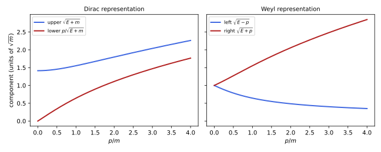
figures/dq-spinors.sage.
The definition below names the solutions. It uses the matrices p\cdot\sigma = p_\mu\sigma^\mu = E - \vec p\cdot\vec\sigma and p\cdot\bar\sigma = E + \vec p\cdot\vec\sigma, which are positive definite and have positive square roots.
Definition 4 (Dirac spinors) For a momentum \vec p, E = E_p = \sqrt{\vec p^{\,2} + m^2} and orthonormal two-component spinors \xi^s, \eta^s (s = 1, 2), the Dirac spinors are u^s(p) = \begin{pmatrix} \sqrt{p\cdot\sigma}\,\xi^s \\ \sqrt{p\cdot\bar\sigma}\,\xi^s\end{pmatrix}, \qquad v^s(p) = \begin{pmatrix} \sqrt{p\cdot\sigma}\,\eta^s \\ -\sqrt{p\cdot\bar\sigma}\,\eta^s\end{pmatrix} . \tag{5} They satisfy (p\!\!\!/ - m)u^s = 0 and (p\!\!\!/ + m)v^s = 0, so u^s(p)e^{-ip\cdot x} is a positive-energy solution and v^s(p)e^{+ip\cdot x} a negative-energy solution of the Dirac equation; every solution is a superposition of these.
Veriphy. Pending.
Lean. Pending.
Sage. Pending.
At rest the square roots are all \sqrt m, and the spinors are as simple as possible. The first example lists them and relates them to the solutions found in Exercise 49 of Classical field theory.
Example 21 (Spinors at rest) At \vec p = 0: u^s = \sqrt m(\xi^s, \xi^s) and v^s = \sqrt m(\eta^s, -\eta^s). They are the eigenvectors of \gamma^0 with eigenvalues +1 and -1, as required by (m\gamma^0 \mp m)\psi = 0. With \xi^1 = (1, 0), \xi^2 = (0, 1) the two u describe spin up and spin down along z; the \eta^s are labels whose physical meaning appears with charge conjugation (Example 75).
Veriphy. Pending.
Lean. Pending.
Sage. Pending.
For a momentum along the z-axis the matrices are diagonal, and the rapidity w, with E = m\cosh w and p = m\sinh w, makes the square roots exponentials. The second example writes the spinors this way.
Example 22 (Momentum along z) p\cdot\sigma = \operatorname{diag}(E - p, E + p) = m\operatorname{diag}(e^{-w}, e^{w}), so u^\uparrow = \sqrt m(e^{-w/2}, 0, e^{w/2}, 0) and u^\downarrow = \sqrt m(0, e^{w/2}, 0, e^{-w/2}). For large w, spin up along the motion is mostly right-handed and spin down mostly left-handed, the behaviour drawn in the right panel of Figure 4 and made precise by Proposition 4.
Veriphy. Pending.
Lean. Pending.
Sage. Pending.
The non-relativistic limit needs the Dirac representation, in which a slow particle has small lower components. The third example gives the spinors there.
Example 23 (The Dirac representation) With the change of basis U of Exercise 41 of Classical field theory, u^s = \big(\sqrt{E + m}\,\xi^s, \frac{\vec\sigma\cdot\vec p}{\sqrt{E + m}}\xi^s\big). The lower (“small”) component is smaller than the upper (“large”) one by |\vec p|/(E + m) \approx v/2, as in the left panel of Figure 4; this ratio reappears as \chi \approx (\vec\sigma\cdot\vec\pi/2m)\varphi in the Pauli equation (Theorem 2).
Veriphy. Pending.
Lean. Pending.
Sage. Pending.
The spinors at finite momentum are the boosted rest spinors, as covariance requires. The fourth example connects Definition 4 with Theorem 1.
Example 24 (Boosting the rest spinors) For the boost S of Example 9, S\,u^s(0) = u^s(p) with p = m\sinh w along z, and in general u^s(p) = S(\Lambda_p)u^s(0) for the pure boost \Lambda_p taking (m, \vec 0) to p. The identity \sqrt{p\cdot\sigma} = \sqrt m\,e^{-w\hat p\cdot\vec\sigma/2} shows that Equation 5 is this boost written out, the left block being the SL(2, \mathbb{C}) matrix of Example 28 of Spinors and the Dirac operator.
Veriphy. Pending.
Lean. Pending.
Sage. Pending.
The first exercise verifies the defining equations by hand. The only fact needed is that p\cdot\sigma and p\cdot\bar\sigma commute and multiply to m^2.
Exercise 24 (The spinors solve the equation) Show that (p\cdot\sigma)(p\cdot\bar\sigma) = p^2 = m^2, and use p\!\!\!/ = \begin{pmatrix} 0 & p\cdot\sigma \\ p\cdot\bar\sigma & 0\end{pmatrix} to verify (p\!\!\!/ - m)u^s = 0 and (p\!\!\!/ + m)v^s = 0.
(E - \vec p\cdot\vec\sigma)(E + \vec p\cdot\vec\sigma) = E^2 - (\vec p\cdot\vec\sigma)^2 = E^2 - \vec p^{\,2} = m^2. Both matrices are functions of \vec p\cdot\vec\sigma, so they commute, as do their square roots, and \sqrt{p\cdot\sigma}\sqrt{p\cdot\bar\sigma} = m. The upper row of (p\!\!\!/ - m)u is p\cdot\sigma\sqrt{p\cdot\bar\sigma}\xi - m\sqrt{p\cdot\sigma}\xi = \sqrt{p\cdot\sigma}(\sqrt{p\cdot\sigma} \sqrt{p\cdot\bar\sigma} - m)\xi = 0, and the lower row likewise. For v the signs of the lower block and of m change together.
Veriphy. Pending.
Lean. Pending.
Sage. Pending.
The second exercise translates the spinors to the Dirac representation by computer. It confirms the large and small components of Example 23.
Exercise 25 (To the Dirac representation) With Sage, apply U = \tfrac{1}{\sqrt2}\begin{pmatrix} 1 & 1 \\ -1 & 1\end{pmatrix} (in 2 \times 2 blocks) to u^\uparrow for the momentum \vec p = (0, 0, p) in rapidity form, and compare with (\sqrt{E + m}\,\xi, \vec\sigma\cdot\vec p\,\xi/\sqrt{E + m}). Check also that U\gamma^\mu U^{\mathsf T} is the Dirac representation.
The upper component is \sqrt{m/2}(e^{-w/2} + e^{w/2}) = \sqrt{2m}\cosh\tfrac w2 = \sqrt{E + m} and the lower one is \sqrt{2m}\sinh\tfrac w2 = p/\sqrt{E + m}:
s = [matrix(SR, [[0, 1], [1, 0]]), matrix(SR, [[0, -I], [I, 0]]), matrix(SR, [[1, 0], [0, -1]])]
Z = zero_matrix(SR, 2); one = identity_matrix(SR, 2)
blk = lambda a, b, c, d: block_matrix([[a, b], [c, d]], subdivide=False)
g = [blk(Z, one, one, Z)] + [blk(Z, sk, -sk, Z) for sk in s] # Weyl representation
g5 = I * g[0] * g[1] * g[2] * g[3]; I4 = identity_matrix(SR, 4)
U = blk(one, one, -one, one) / sqrt(2)
gD = [U * x * U.transpose() for x in g]
print("U gamma^0 U^T = diag(1, 1, -1, -1):", gD[0] == diagonal_matrix(SR, [1, 1, -1, -1]), "; U gamma^k U^T = gamma^k:", all(gD[k] == g[k] for k in (1, 2, 3)))
w = var("w", domain="real"); m = var("m", domain="positive")
E = m * (exp(w) + exp(-w)) / 2; p = m * (exp(w) - exp(-w)) / 2
uW = sqrt(m) * vector(SR, [exp(-w / 2), 0, exp(w / 2), 0])
uD = U * uW
print("U u =", [c.simplify_full() for c in uD])
z = lambda e: bool(SR(e).expand().simplify_full() == 0)
print("upper^2 = E + m:", z(uD[0]^2 - (E + m)), "; lower^2 = p^2/(E + m):", z(uD[2]^2 * (E + m) - p^2), "; signs positive for w > 0:", bool(uD[2].subs(w=1, m=1) > 0))Output:
U gamma^0 U^T = diag(1, 1, -1, -1): True ; U gamma^k U^T = gamma^k: True
U u = [1/2*(sqrt(2)*e^w + sqrt(2))*sqrt(m)*e^(-1/2*w), 0, 1/2*(sqrt(2)*e^w - sqrt(2))*sqrt(m)*e^(-1/2*w), 0]
upper^2 = E + m: True ; lower^2 = p^2/(E + m): True ; signs positive for w > 0: TrueVeriphy. Pending.
Lean. Pending.
Sage. Pending.
The boost relation of Example 24 can be tested for a momentum that is not along an axis. The third exercise does this with Sage, for both spin states.
Exercise 26 (Boosted rest spinors) For \hat n = (3, 0, 4)/5 and w = \log 2, compute with Sage S = \exp(w\,n_kS^{0k}), apply it to u^s(0) for m = 1, and compare with Equation 5 for \vec p = \sinh w\,\hat n, using \sqrt{p\cdot\sigma} = e^{-w\hat n\cdot\vec\sigma/2}.
The exponentials of \hat n\cdot\vec\sigma are \cosh\tfrac w2 \mp \hat n\cdot\vec\sigma\sinh\tfrac w2, and with w = \log 2 these have entries in \mathbb{Q}(\sqrt2), so the comparison is exact:
s = [matrix(SR, [[0, 1], [1, 0]]), matrix(SR, [[0, -I], [I, 0]]), matrix(SR, [[1, 0], [0, -1]])]
Z = zero_matrix(SR, 2); one = identity_matrix(SR, 2)
blk = lambda a, b, c, d: block_matrix([[a, b], [c, d]], subdivide=False)
g = [blk(Z, one, one, Z)] + [blk(Z, sk, -sk, Z) for sk in s] # Weyl representation
g5 = I * g[0] * g[1] * g[2] * g[3]; I4 = identity_matrix(SR, 4)
n = vector(QQ, [3, 0, 4]) / 5
ns = sum(n[k] * s[k] for k in range(3))
c, sh = 3 / (2 * sqrt(2)), 1 / (2 * sqrt(2)) # cosh(w/2), sinh(w/2) for w = log 2
Sl = c * one - sh * ns; Sr = c * one + sh * ns # exp(-w n.sigma/2), exp(+w n.sigma/2)
nS = sum(n[k] * g[0] * g[k + 1] for k in range(3)) / 2
S = c * I4 + 2 * sh * nS
print("S = diag(exp(-w n.sigma/2), exp(w n.sigma/2)):", S == blk(Sl, Z, Z, Sr))
ch, shw = QQ(5) / 4, QQ(3) / 4; p = shw * n
psig = ch * one - sum(p[k] * s[k] for k in range(3)); psigb = ch * one + sum(p[k] * s[k] for k in range(3))
print("Sl^2 = p.sigma and Sr^2 = p.sigma-bar:", (Sl^2 - psig).simplify_full() == 0, (Sr^2 - psigb).simplify_full() == 0)
pslash = ch * g[0] - sum(p[k] * g[k + 1] for k in range(3))
for xi in (vector(SR, [1, 0]), vector(SR, [0, 1])):
u0 = vector(SR, list(xi) + list(xi)); u = S * u0
print("xi =", xi, ": S u(0) =", [x.simplify_full() for x in u], "; (pslash - 1) S u(0) = 0:", ((pslash - I4) * u).simplify_full() == 0)Output:
S = diag(exp(-w n.sigma/2), exp(w n.sigma/2)): True
Sl^2 = p.sigma and Sr^2 = p.sigma-bar: True True
xi = (1, 0) : S u(0) = [11/20*sqrt(2), -3/20*sqrt(2), 19/20*sqrt(2), 3/20*sqrt(2)] ; (pslash - 1) S u(0) = 0: True
xi = (0, 1) : S u(0) = [-3/20*sqrt(2), 19/20*sqrt(2), 3/20*sqrt(2), 11/20*sqrt(2)] ; (pslash - 1) S u(0) = 0: TrueVeriphy. Pending.
Lean. Pending.
Sage. Pending.
The negative-energy solutions look like positive-energy solutions run backwards. The fourth exercise makes the relation explicit, which is the first step of the hole interpretation of Section 1.6.
Exercise 27 (What the negative-energy solutions carry) Show that v^s(p)e^{+ip\cdot x} is an eigenfunction of H with energy -E_p and of \vec p = -i\nabla with momentum -\vec p. Show that its current is \bar v\gamma^\mu v = 2p^\mu, so the density is still positive.
e^{ip\cdot x} = e^{iEt - i\vec p\cdot\vec x}, so i\partial_t gives -E and -i\nabla gives -\vec p. The current of v^s follows as in Example 15: \bar v\gamma^\mu v = 2p^\mu (Exercise 28 computes the \mu = 0 component v^\dagger v = 2E). So the solution carries negative energy and reversed momentum but positive probability, and its velocity \vec j/\rho = \vec p/E is opposite to its momentum -\vec p: the group velocity of the negative branch of Figure 1.
Veriphy. Pending.
Lean. Pending.
Sage. Pending.
The spinors are normalised so that their bilinears are covariant, and they are complete. The proposition below collects the relations used in every computation with free fermions.
Proposition 3 (Normalisation and completeness of the spinors) For the spinors Equation 5 with orthonormal \xi^s, \eta^s: \bar u^ru^s = 2m\delta^{rs}, \quad \bar v^rv^s = -2m\delta^{rs}, \quad \bar u^rv^s = 0, \quad u^{r\dagger}u^s = v^{r\dagger}v^s = 2E\delta^{rs}, \quad u^{r\dagger}(\vec p)v^s(-\vec p) = 0, \tag{6} and \sum_su^s(p)\bar u^s(p) = p\!\!\!/ + m, \qquad \sum_sv^s(p)\bar v^s(p) = p\!\!\!/ - m . \tag{7}
Proof. \bar u^ru^s = \xi^{r\dagger}(\sqrt{p\cdot\bar\sigma}\sqrt{p\cdot\sigma} + \sqrt{p\cdot\sigma}\sqrt{p\cdot\bar\sigma})\xi^s = 2m\xi^{r\dagger}\xi^s, and the others are similar, with p\cdot\sigma + p\cdot\bar\sigma = 2E for the densities. For the sum, \sum_s\xi^s\xi^{s\dagger} = 1 gives \sum_su^s\bar u^s = \begin{pmatrix} \sqrt{p\cdot\sigma} \\ \sqrt{p\cdot\bar\sigma}\end{pmatrix} \begin{pmatrix} \sqrt{p\cdot\bar\sigma} & \sqrt{p\cdot\sigma}\end{pmatrix} = \begin{pmatrix} m & p\cdot\sigma \\ p\cdot\bar\sigma & m\end{pmatrix} = p\!\!\!/ + m, the bar contributing the factor \gamma^0 that exchanges the two blocks.
Veriphy. Pending.
Lean. Pending.
Sage. Pending.
At rest the completeness relation is a statement about the eigenvectors of \gamma^0. The first example checks it there, where it is transparent.
Example 25 (Completeness at rest) At \vec p = 0, \sum_su^s\bar u^s = m\sum_s(\xi^s, \xi^s)(\xi^{s\dagger}, \xi^{s\dagger})\gamma^0 = m\begin{pmatrix} 1 & 1 \\ 1 & 1\end{pmatrix}, which is m(\gamma^0 + 1) = p\!\!\!/ + m with p\!\!\!/ = m\gamma^0. Similarly \sum v\bar v = m(\gamma^0 - 1). The two matrices \tfrac12(1 \pm \gamma^0) are the projectors onto the two eigenspaces of \gamma^0: completeness is the statement that these eigenspaces fill \mathbb{C}^4.
Veriphy. Pending.
Lean. Pending.
Sage. Pending.
Traces of the completeness relations give the sums of the normalisations. The second example uses this as a check, which is how the relations are most often used.
Example 26 (Traces) Taking the trace of Equation 7: \sum_s\bar u^su^s = \operatorname{tr}(p\!\!\!/ + m) = 4m, in agreement with \bar u^su^s = 2m for each of the two spins, and \sum_s\bar v^sv^s = \operatorname{tr}(p\!\!\!/ - m) = -4m. Since \operatorname{tr}\gamma^\mu = 0 (Exercise 40 of Classical field theory), only the mass contributes. Multiplying by \gamma^0 first gives \sum_su^{s\dagger}u^s = \operatorname{tr} (\gamma^0p\!\!\!/) + 0 = 4E.
Veriphy. Pending.
Lean. Pending.
Sage. Pending.
The completeness relations turn sums over unobserved spins into traces. The third example computes the spin sum for scattering of an electron by a static Coulomb field, which gives the relativistic correction to Rutherford scattering.
Example 27 (The spin sum of Coulomb scattering) A static potential couples through \bar u(p')\gamma^0u(p), and summing over both spins, \sum_{s, s'}|\bar u^{s'}(p')\gamma^0u^s(p)|^2 = \operatorname{tr}[(p\!\!\!/' + m)\gamma^0(p\!\!\!/ + m)\gamma^0] = 4(EE' + \vec p\cdot\vec p\,' + m^2). For elastic scattering by an angle \theta, E' = E and \vec p\cdot\vec p\,' = p^2\cos\theta, so the sum is 8E^2(1 - v^2\sin^2\tfrac\theta2): backward scattering of a fast electron is suppressed because its helicity is nearly conserved (Proposition 4).
Veriphy. Pending.
Lean. Pending.
Sage. Pending.
The first exercise checks the completeness relations by computer for a momentum in a general direction. Choosing the momentum so that the energy is rational keeps the computation exact.
Exercise 28 (Completeness by computer) For m = 24 and \vec p = (2, 3, 6), so E = 25, build u^s and v^s with Sage from u^s = (p\!\!\!/ + m)u^s(0)/\sqrt{2m(E + m)} and v^s = (-p\!\!\!/ + m)v^s(0)/\sqrt{2m(E + m)}, and verify Equation 6 and Equation 7.
The formula u^s = (p\!\!\!/ + m)u^s(0)/\sqrt{2m(E + m)} avoids matrix square roots and agrees with Equation 5 (as the check (p\!\!\!/ - m)u = 0 and the normalisations confirm); here \sqrt{2m(E + m)} = \sqrt{2400} = 20\sqrt6:
s = [matrix(SR, [[0, 1], [1, 0]]), matrix(SR, [[0, -I], [I, 0]]), matrix(SR, [[1, 0], [0, -1]])]
Z = zero_matrix(SR, 2); one = identity_matrix(SR, 2)
blk = lambda a, b, c, d: block_matrix([[a, b], [c, d]], subdivide=False)
g = [blk(Z, one, one, Z)] + [blk(Z, sk, -sk, Z) for sk in s] # Weyl representation
g5 = I * g[0] * g[1] * g[2] * g[3]; I4 = identity_matrix(SR, 4)
m, E = 24, 25; p = vector(QQ, [2, 3, 6])
pslash = E * g[0] - sum(p[k] * g[k + 1] for k in range(3))
N = sqrt(2 * m * (E + m))
xis = [vector(SR, [1, 0]), vector(SR, [0, 1])]
u = [(pslash + m * I4) * (sqrt(m) * vector(SR, list(x) + list(x))) / N for x in xis]
v = [(-pslash + m * I4) * (sqrt(m) * vector(SR, list(x) + list(-x))) / N for x in xis]
bar = lambda a, b: (a.conjugate() * g[0] * b).simplify_full()
dag = lambda a, b: (a.conjugate() * b).simplify_full()
print("(pslash - m) u = 0, (pslash + m) v = 0:", all(((pslash - m * I4) * x).simplify_full() == 0 for x in u), all(((pslash + m * I4) * x).simplify_full() == 0 for x in v))
print("bar(u^r) u^s =", [[bar(a, b) for b in u] for a in u], " bar(v^r) v^s =", [[bar(a, b) for b in v] for a in v])
print("bar(u^r) v^s =", [[bar(a, b) for b in v] for a in u])
print("u^dag u =", [[dag(a, b) for b in u] for a in u], " v^dag v =", [[dag(a, b) for b in v] for a in v])
outer = lambda a: a.column() * (a.conjugate() * g[0]).row()
print("sum u bar(u) = pslash + m:", (sum(outer(x) for x in u) - (pslash + m * I4)).simplify_full() == 0)
print("sum v bar(v) = pslash - m:", (sum(outer(x) for x in v) - (pslash - m * I4)).simplify_full() == 0)
# u(p) and v(-p): v(-p) built with the momentum reversed
pslash_m = E * g[0] + sum(p[k] * g[k + 1] for k in range(3))
vm = [(-pslash_m + m * I4) * (sqrt(m) * vector(SR, list(x) + list(-x))) / N for x in xis]
print("u^r(p)^dag v^s(-p) = 0:", all(dag(a, b) == 0 for a in u for b in vm))Output:
(pslash - m) u = 0, (pslash + m) v = 0: True True
bar(u^r) u^s = [[48, 0], [0, 48]] bar(v^r) v^s = [[-48, 0], [0, -48]]
bar(u^r) v^s = [[0, 0], [0, 0]]
u^dag u = [[50, 0], [0, 50]] v^dag v = [[50, 0], [0, 50]]
sum u bar(u) = pslash + m: True
sum v bar(v) = pslash - m: True
u^r(p)^dag v^s(-p) = 0: TrueVeriphy. Pending.
Lean. Pending.
Sage. Pending.
The orthogonality relations between u and v are what keeps positive and negative energies apart in a superposition. The second exercise proves the two that are not obvious.
Exercise 29 (Orthogonality of u and v) Show that \bar u^r(p)v^s(p) = 0 and u^{r\dagger}(\vec p)v^s(-\vec p) = 0. Why is u^{r\dagger}(\vec p)v^s(\vec p) not zero in general, and why does this not matter?
\bar u^rv^s = \xi^{r\dagger}(\sqrt{p\cdot\bar\sigma}\sqrt{p\cdot\sigma} - \sqrt{p\cdot\sigma}\sqrt{p\cdot\bar\sigma})\eta^s = 0. Replacing \vec p by -\vec p exchanges p\cdot\sigma and p\cdot\bar\sigma, so u^{r\dagger}(\vec p)v^s(-\vec p) = \xi^{r\dagger}(\sqrt{p\cdot\sigma} \sqrt{p\cdot\bar\sigma} - \sqrt{p\cdot\bar\sigma}\sqrt{p\cdot\sigma})\eta^s = 0. The pair that shares the spatial dependence e^{i\vec p\cdot\vec x} is u(\vec p)e^{-iEt} and v(-\vec p)e^{iEt}, so this is the orthogonality of the two energy eigenvectors of H(\vec p); u(\vec p) and v(\vec p) have different spatial dependence and are orthogonal as functions.
Veriphy. Pending.
Lean. Pending.
Sage. Pending.
The completeness relation can be derived without square roots, from the rest frame and covariance. The third exercise follows this route.
Exercise 30 (Completeness from covariance) Show that \sum_su^s(p)\bar u^s(p) is a 4 \times 4 matrix M with (p\!\!\!/ - m)M = 0, M(p\!\!\!/ - m) = 0 and \operatorname{tr}M = 4m, and that p\!\!\!/ + m is the only matrix of the form a p\!\!\!/ + b with these properties.
(p\!\!\!/ - m)u^s = 0 gives (p\!\!\!/ - m)M = 0, and \bar u^s(p\!\!\!/ - m) = 0 (the conjugate equation) gives M(p\!\!\!/ - m) = 0. For M = ap\!\!\!/ + b: (p\!\!\!/ - m)(ap\!\!\!/ + b) = am^2 - bm + (b - am)p\!\!\!/, which vanishes iff b = am, and \operatorname{tr}M = 4b = 4m gives a = 1, b = m. That M has this form follows from covariance: M transforms as SMS^{-1} and is built from p alone, and at rest it is m(\gamma^0 + 1) (Example 25).
Veriphy. Pending.
Lean. Pending.
Sage. Pending.
The spin sum of Example 27 is a trace of four gamma matrices. The fourth exercise evaluates it with Sage and recovers the factor 1 - v^2\sin^2\tfrac\theta2.
Exercise 31 (The Coulomb spin sum by computer) With Sage, compute \operatorname{tr}[(p\!\!\!/' + m)\gamma^0(p\!\!\!/ + m)\gamma^0] for p = (E, p\sin\theta, 0, p\cos\theta), p' = (E, 0, 0, p) and simplify it to 8E^2(1 - v^2\sin^2\tfrac\theta2) with v = p/E.
The trace is 4(E^2 + p^2\cos\theta + m^2) = 4(2E^2 - p^2(1 - \cos\theta)) = 8E^2 - 8p^2\sin^2\tfrac\theta2:
s = [matrix(SR, [[0, 1], [1, 0]]), matrix(SR, [[0, -I], [I, 0]]), matrix(SR, [[1, 0], [0, -1]])]
Z = zero_matrix(SR, 2); one = identity_matrix(SR, 2)
blk = lambda a, b, c, d: block_matrix([[a, b], [c, d]], subdivide=False)
g = [blk(Z, one, one, Z)] + [blk(Z, sk, -sk, Z) for sk in s] # Weyl representation
g5 = I * g[0] * g[1] * g[2] * g[3]; I4 = identity_matrix(SR, 4)
E, P, m, th = var("E P m theta", domain="positive")
p = [E, P * sin(th), 0, P * cos(th)]; pp = [E, 0, 0, P]
sl = lambda q: q[0] * g[0] - q[1] * g[1] - q[2] * g[2] - q[3] * g[3]
t = ((sl(pp) + m * I4) * g[0] * (sl(p) + m * I4) * g[0]).trace().simplify_full()
print("trace =", t)
print("= 4(E^2 + P^2 cos(theta) + m^2):", bool((t - 4 * (E^2 + P^2 * cos(th) + m^2)).simplify_full() == 0))
tt = t.subs(m=sqrt(E^2 - P^2))
print("= 8 E^2 (1 - v^2 sin^2(theta/2)) with v = P/E:", bool((tt - 8 * E^2 * (1 - (P / E)^2 * sin(th / 2)^2)).trig_reduce().simplify_full() == 0))Output:
trace = 4*P^2*cos(theta) + 4*E^2 + 4*m^2
= 4(E^2 + P^2 cos(theta) + m^2): True
= 8 E^2 (1 - v^2 sin^2(theta/2)) with v = P/E: TrueVeriphy. Pending.
Lean. Pending.
Sage. Pending.
Projection operators and helicity
The four-dimensional spinor space splits in two ways that matter: by the sign of the energy, and by the sign of the spin along the momentum or of \gamma_5. The figure compares the last two, helicity and chirality, which coincide only for massless particles.
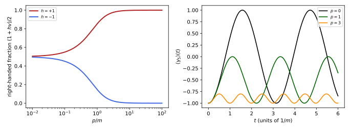
figures/dq-helicity.sage.
The completeness relations of Proposition 3 contain projectors in disguise. The definition below names the projectors onto the two energy signs.
Definition 5 (Energy projector) For a four-momentum p on the mass shell, the energy projectors are \Lambda_\pm(p) = \frac{\pm p\!\!\!/ + m}{2m} . \tag{8} \Lambda_+(p) projects onto the span of the u^s(p) and \Lambda_-(p) onto the span of the v^s(p); equivalently, on momentum-space wave functions, \tfrac12(1 \pm H(\vec p)/E_p) project onto the positive- and negative-energy eigenspaces of H(\vec p) = \vec\alpha\cdot\vec p + \beta m.
Veriphy. Pending.
Lean. Pending.
Sage. Pending.
At rest the projectors are those of Example 25. The first example writes them down and shows that they select upper or lower components in the Dirac representation.
Example 28 (Projectors at rest) At \vec p = 0, \Lambda_\pm = \tfrac12(1 \pm \gamma^0). In the Dirac representation \gamma^0 = \operatorname{diag}(1, -1), so \Lambda_+ keeps the upper and \Lambda_- the lower components; in the Weyl representation \Lambda_+ = \tfrac12\begin{pmatrix} 1 & 1 \\ 1 & 1\end{pmatrix} keeps the symmetric combinations (\xi, \xi). In either case \Lambda_+ + \Lambda_- = 1 and \Lambda_+\Lambda_- = 0.
Veriphy. Pending.
Lean. Pending.
Sage. Pending.
The covariant projectors and the Hamiltonian projectors are related by a factor \gamma^0, since u and \bar u differ by one. The second example works out the relation.
Example 29 (Covariant and Hamiltonian projectors) The projector onto positive energies of H(\vec p) in the \psi^\dagger\psi inner product is P_+ = \sum_su^su^{s\dagger}/2E = \Lambda_+(p)\gamma^0m/E. With p\!\!\!/ = E\gamma^0 - \vec p\cdot\vec\gamma and H = \gamma^0(\vec\gamma\cdot\vec p + m) this equals \tfrac12(1 + H/E). The two kinds of projector agree on the spinors but are orthogonal in different inner products, \bar\psi\chi and \psi^\dagger\chi.
Veriphy. Pending.
Lean. Pending.
Sage. Pending.
The positive-energy part of a localised state is not localised, since E_p is not a polynomial in \vec p. The third example states the consequence, which is behind the Newton-Wigner position of Costella and McKellar (1995, sec. II).
Example 30 (Positive energy is not local) \tfrac12(1 + H/E) acts in position space by convolution with a kernel built from (-\Delta + m^2)^{-1/2}, which decays like e^{-m|\vec x|}: projecting a state localised at a point onto positive energies spreads it over a Compton wavelength 1/m. A wave packet made only of positive energies, as in Figure 3, cannot be sharper than this without negative-energy components, and those cause the trembling of Figure 13.
Veriphy. Pending.
Lean. Pending.
Sage. Pending.
The first exercise establishes the projector algebra from the mass-shell condition alone. It also explains why the denominator is 2m.
Exercise 32 (Projector algebra) Show that \Lambda_\pm^2 = \Lambda_\pm, \Lambda_+\Lambda_- = 0 and \Lambda_+ + \Lambda_- = 1 using p\!\!\!/^2 = p^2 = m^2. Show that \Lambda_+u^s = u^s and \Lambda_+v^s = 0, and compute \operatorname{tr}\Lambda_\pm.
p\!\!\!/^2 = \tfrac12\{\gamma^\mu, \gamma^\nu\}p_\mu p_\nu = p^2 = m^2. Then (\pm p\!\!\!/ + m)^2 = m^2 \pm 2mp\!\!\!/ + m^2 = 2m(\pm p\!\!\!/ + m), so \Lambda_\pm^2 = \Lambda_\pm; (p\!\!\!/ + m)(-p\!\!\!/ + m) = m^2 - p\!\!\!/^2 = 0; the sum is 2m/2m = 1. Since p\!\!\!/u = mu, \Lambda_+u = (m + m)u/2m = u, and p\!\!\!/v = -mv gives \Lambda_+v = 0. \operatorname{tr}\Lambda_\pm = 4m/2m = 2: each projects onto a plane, two spin states.
Veriphy. Pending.
Lean. Pending.
Sage. Pending.
The second exercise checks the projectors by computer for the momentum of Exercise 28. It confirms the rank and the action on the spinors.
Exercise 33 (Projectors by computer) With Sage, for m = 24 and \vec p = (2, 3, 6), compute \Lambda_\pm, their ranks, \Lambda_+u^s, \Lambda_+v^s, and verify that \tfrac12(1 + H/E) is a Hermitian projector of rank two that fixes u^s.
Both \Lambda_\pm have rank two, \Lambda_+ fixes the u^s and kills the v^s, and the Hamiltonian projector is Hermitian while \Lambda_+ is not (\Lambda_+^\dagger = \gamma^0\Lambda_+\gamma^0):
s = [matrix(SR, [[0, 1], [1, 0]]), matrix(SR, [[0, -I], [I, 0]]), matrix(SR, [[1, 0], [0, -1]])]
Z = zero_matrix(SR, 2); one = identity_matrix(SR, 2)
blk = lambda a, b, c, d: block_matrix([[a, b], [c, d]], subdivide=False)
g = [blk(Z, one, one, Z)] + [blk(Z, sk, -sk, Z) for sk in s] # Weyl representation
g5 = I * g[0] * g[1] * g[2] * g[3]; I4 = identity_matrix(SR, 4)
m, E = 24, 25; p = vector(QQ, [2, 3, 6])
pslash = E * g[0] - sum(p[k] * g[k + 1] for k in range(3))
Lp = (pslash + m * I4) / (2 * m); Lm = (-pslash + m * I4) / (2 * m)
print("Lambda_+^2 = Lambda_+, Lambda_+ Lambda_- = 0, sum = 1:", Lp^2 == Lp, Lp * Lm == 0, Lp + Lm == I4)
print("ranks:", Lp.rank(), Lm.rank(), "; Lambda_+ Hermitian?", Lp.is_hermitian(), "; Lambda_+^dag = gamma^0 Lambda_+ gamma^0:", Lp.conjugate_transpose() == g[0] * Lp * g[0])
N = sqrt(2 * m * (E + m)); x = vector(SR, [1, 0])
u = (pslash + m * I4) * (sqrt(m) * vector(SR, list(x) + list(x))) / N; v = (-pslash + m * I4) * (sqrt(m) * vector(SR, list(x) + list(-x))) / N
print("Lambda_+ u = u, Lambda_+ v = 0:", (Lp * u - u).simplify_full() == 0, (Lp * v).simplify_full() == 0)
H = sum(p[k] * g[0] * g[k + 1] for k in range(3)) + m * g[0]
P = (I4 + H / E) / 2
print("(1 + H/E)/2: Hermitian", P.is_hermitian(), ", idempotent", P^2 == P, ", rank", P.rank(), ", fixes u", (P * u - u).simplify_full() == 0)Output:
Lambda_+^2 = Lambda_+, Lambda_+ Lambda_- = 0, sum = 1: True True True
ranks: 2 2 ; Lambda_+ Hermitian? False ; Lambda_+^dag = gamma^0 Lambda_+ gamma^0: True
Lambda_+ u = u, Lambda_+ v = 0: True True
(1 + H/E)/2: Hermitian True , idempotent True , rank 2 , fixes u TrueVeriphy. Pending.
Lean. Pending.
Sage. Pending.
The Hamiltonian projectors are defined without reference to \gamma^0 or covariance. The third exercise proves their properties directly from H^2 = E^2.
Exercise 34 (Hamiltonian projectors) Show that P_\pm = \tfrac12(1 \pm H(\vec p)/E_p) are Hermitian, satisfy P_\pm^2 = P_\pm, P_+P_- = 0, HP_\pm = \pm E_pP_\pm, and that e^{-iHt} = e^{-iE_pt}P_+ + e^{iE_pt}P_-.
H is Hermitian, so P_\pm are. With H^2 = E^2, P_\pm^2 = \tfrac14(1 \pm 2H/E + 1) = P_\pm, P_+P_- = \tfrac14(1 - H^2/E^2) = 0, and HP_\pm = \tfrac12(H \pm E) = \pm EP_\pm. Since H = E(P_+ - P_-) and P_+ + P_- = 1, any function of H is f(E)P_+ + f(-E)P_-; for f = e^{-iEt} this is the stated formula, the formula behind the propagation of Figure 3.
Veriphy. Pending.
Lean. Pending.
Sage. Pending.
Spin is not a conserved quantity of the free Dirac Hamiltonian, but its component along the momentum is. The definition below names this component, following Pal (2011, sec. 4.1).
Definition 6 (Helicity) The spin operator of the Dirac theory is \vec S = \tfrac12\vec\Sigma with \Sigma_k = \tfrac{i}{2}\epsilon_{kij}\gamma^i\gamma^j = \operatorname{diag}(\sigma_k, \sigma_k) in both the Weyl and the Dirac representation. The helicity of a state of momentum \vec p \neq 0 is the eigenvalue h = \pm1 of h(\vec p) = \vec\Sigma\cdot\hat p, \qquad \hat p = \vec p/|\vec p| , \tag{9} twice the spin along the direction of motion; h = +1 is called right-helical and h = -1 left-helical Pal (2011, sec. 4.1, eqs. (4.1)-(4.3)).
Veriphy. Pending.
Lean. Pending.
Sage. Pending.
The spinors of Example 22 are helicity eigenstates. The first example identifies their helicities and shows how to build helicity eigenstates in general.
Example 31 (Helicity of the spinors) For \vec p along +z, h = \Sigma_3, so u^\uparrow has h = +1 and u^\downarrow has h = -1. For a general direction, choosing \xi as an eigenvector of \vec\sigma\cdot\hat p with eigenvalue h makes u(p) an eigenvector of h(\vec p) with the same eigenvalue, because \sqrt{p\cdot\sigma} = \sqrt{E - h|\vec p|} on such \xi is a number: u = (\sqrt{E - h|\vec p|}\,\xi, \sqrt{E + h|\vec p|}\,\xi).
Veriphy. Pending.
Lean. Pending.
Sage. Pending.
Helicity is conserved for a free particle but depends on the observer. The second example gives both facts, with the argument of Pal (2011, sec. 4.1).
Example 32 (Conserved but not invariant) [H, \vec\Sigma\cdot\vec p] = 0, so helicity is a constant of the free motion (Exercise 35). But an observer moving along \hat p faster than a massive particle sees its momentum reversed while its spin, a component of the antisymmetric tensor M^{ij} transverse to the boost, is unchanged: the helicity flips. Only for m = 0, where no observer overtakes the particle, is helicity Lorentz invariant.
Veriphy. Pending.
Lean. Pending.
Sage. Pending.
Without mass helicity and chirality coincide on positive-energy states. The third example shows this from the Weyl form of the Hamiltonian, anticipating Proposition 4.
Example 33 (Massless particles) For m = 0, H = \operatorname{diag}(-\vec\sigma\cdot\vec p, \vec\sigma\cdot\vec p) (Example 1). A positive-energy right-handed state (0, \chi) has \vec\sigma\cdot\vec p\chi = |\vec p|\chi, so h = +1; a positive-energy left-handed state (\chi, 0) has -\vec\sigma\cdot\vec p\chi = |\vec p|\chi, so h = -1. For massless fermions chirality is helicity, and for negative energies the relation is reversed.
Veriphy. Pending.
Lean. Pending.
Sage. Pending.
The first exercise computes the relevant commutators. It shows which angular momentum is conserved and why helicity survives although the spin does not.
Exercise 35 (What commutes with H) For the free H, show that [H, \Sigma_3] \neq 0 when \vec p is not along z, that [H, \vec\Sigma\cdot\vec p] = 0, and that \vec J = \vec L + \tfrac12\vec\Sigma commutes with H although \vec L = \vec x \times \vec p does not.
\Sigma_k commutes with \beta and [\alpha_j, \Sigma_k] = 2i\epsilon_{jkl}\alpha_l, so [H, \Sigma_k] = 2i\epsilon_{jkl}p_j\alpha_l = 2i(\vec \alpha \times \vec p)_k, non-zero unless \vec p \parallel \hat k. Contracting with p_k gives (\vec\alpha \times \vec p)\cdot\vec p = 0, so helicity commutes. [H, L_k] = [\alpha_jp_j, \epsilon_{klm}x_lp_m] = -i\epsilon_{klm}\alpha_lp_m = -i(\vec\alpha \times \vec p)_k, and [H, L_k + \tfrac12\Sigma_k] = -i(\vec\alpha \times \vec p)_k + i(\vec\alpha \times \vec p)_k = 0: only the total angular momentum is conserved, which is why the Dirac hydrogen atom is labelled by j.
Veriphy. Pending.
Lean. Pending.
Sage. Pending.
A helicity eigenstate for an oblique momentum is a good test of Example 31. The second exercise constructs one with Sage.
Exercise 36 (A helicity eigenstate) For m = 1 and \vec p = (2, 2, 1), so E = \sqrt{10} and |\vec p| = 3, find with Sage the eigenvector \xi of \vec\sigma\cdot\hat p with eigenvalue +1, build u = (\sqrt{E - 3}\,\xi, \sqrt{E + 3}\,\xi), and verify (p\!\!\!/ - m)u = 0 and h(\vec p)u = u.
The eigenvector is \xi \propto (\hat p_z + 1, \hat p_x + i\hat p_y) = (4/3, 2/3 + 2i/3); the spinor satisfies both equations:
s = [matrix(SR, [[0, 1], [1, 0]]), matrix(SR, [[0, -I], [I, 0]]), matrix(SR, [[1, 0], [0, -1]])]
Z = zero_matrix(SR, 2); one = identity_matrix(SR, 2)
blk = lambda a, b, c, d: block_matrix([[a, b], [c, d]], subdivide=False)
g = [blk(Z, one, one, Z)] + [blk(Z, sk, -sk, Z) for sk in s] # Weyl representation
g5 = I * g[0] * g[1] * g[2] * g[3]; I4 = identity_matrix(SR, 4)
p = vector(QQ, [2, 2, 1]); E = sqrt(10); m = 1
nsig = sum(p[k] * s[k] for k in range(3)) / 3
xi = vector(SR, [4 / 3, 2 / 3 + 2 * I / 3])
print("sigma.p-hat xi = xi:", (nsig * xi - xi).simplify_full() == 0)
u = vector(SR, list(sqrt(E - 3) * xi) + list(sqrt(E + 3) * xi))
pslash = E * g[0] - sum(p[k] * g[k + 1] for k in range(3))
print("(pslash - m) u = 0:", ((pslash - m * I4) * u).simplify_full() == 0)
Sig = [blk(sk, Z, Z, sk) for sk in s]
h = sum(p[k] * Sig[k] for k in range(3)) / 3
print("h(p) u = u:", (h * u - u).simplify_full() == 0)Output:
sigma.p-hat xi = xi: True
(pslash - m) u = 0: True
h(p) u = u: TrueVeriphy. Pending.
Lean. Pending.
Sage. Pending.
Pal’s frame argument can be made quantitative with the rapidity. The third exercise computes the helicity seen by a moving observer.
Exercise 37 (Overtaking a particle) A particle of mass m moves along +z with rapidity w and spin up along z. An observer moves along +z with rapidity w_0. Show that the observer sees rapidity w - w_0 and spin still up along z, so the helicity is +1 for w_0 < w and -1 for w_0 > w. Why is no such observer available when m = 0?
Rapidities along one axis add, so the particle has rapidity w - w_0 in the observer’s frame and momentum m\sinh(w - w_0), negative when w_0 > w. The spin state \xi^\uparrow is unchanged because the boost S = \exp(-w_0S^{03}) is diagonal with \xi^\uparrow as eigenvector in each block. So h = \operatorname{sign}(w - w_0). For m = 0 the particle moves at the speed of light and no observer has w_0 > w: its helicity is the same in all frames.
Veriphy. Pending.
Lean. Pending.
Sage. Pending.
Chirality is the eigenvalue of \gamma_5; it is Lorentz invariant, since \gamma_5 commutes with the spinor generators, but it is not conserved. The proposition below relates it to helicity and gives its time dependence.
Proposition 4 (Chirality and helicity) Let P_{L,R} = \tfrac12(1 \mp \gamma_5) be the chiral projectors (\gamma_5 = \operatorname{diag}(-1, -1, 1, 1) in the Weyl representation). For a positive-energy spinor u of helicity h, \frac{u^\dagger P_Ru}{u^\dagger u} = \frac{1 + hv}{2}, \qquad v = \frac{|\vec p|}{E} , \tag{10} so chirality equals helicity only in the limit v \to 1. Moreover [H, \gamma_5] = 2m\beta\gamma_5, so chirality is conserved only for m = 0; a state that is left-handed at t = 0 with momentum p has \langle\gamma_5\rangle(t) = -1 + \tfrac{m^2}{E^2}(1 - \cos 2Et) Pal (2011, sec. 4.2).
Proof. By Example 31, u = (\sqrt{E - h|\vec p|}\,\xi, \sqrt{E + h|\vec p|}\,\xi), so the right-handed (lower) part has weight E + h|\vec p| out of 2E. In the Weyl representation \alpha_k is block diagonal and commutes with \gamma_5, while \beta is off-diagonal and anticommutes, so [H, \gamma_5] = m[\beta, \gamma_5] = 2m\beta\gamma_5. The time dependence follows from e^{-iHt} = \cos Et - i(H/E)\sin Et (Exercise 34) applied to (1, 0, 0, 0).
Veriphy. Pending.
Lean. Pending.
Sage. Pending.
For electrons in accelerators the wrong-chirality admixture is tiny. The first example evaluates Equation 10 at a typical energy. It shows how quickly helicity and chirality become interchangeable at high energy.
Example 34 (Fast electrons) For E \gg m, 1 - v = 1 - \sqrt{1 - m^2/E^2} \approx m^2/2E^2, so a helicity +1 electron is left-handed with probability (1 - v)/2 \approx m^2/4E^2. At E = 1 GeV with m = 0.511 MeV this is 6.5 \times 10^{-8}. Couplings that act only on left-handed fields, like the weak interaction, therefore act almost only on left-helical electrons at high energy.
Veriphy. Pending.
Lean. Pending.
Sage. Pending.
A left-handed state at rest is an equal mixture of positive and negative energies, and the mass makes it oscillate. The second example reads the oscillation off Figure 5.
Example 35 (Chirality oscillates) At \vec p = 0, \langle\gamma_5\rangle(t) = -\cos 2mt: the state (1, 0, 0, 0) = \tfrac12[(1, 0, 1, 0) + (1, 0, -1, 0)] is half a positive-energy and half a negative-energy rest spinor, and the relative phase e^{2imt} turns left into right and back with period \pi/m. For |\vec p| \gg m the amplitude m^2/E^2 is small, the right panel of Figure 5.
Veriphy. Pending.
Lean. Pending.
Sage. Pending.
Helicity and chirality are separately invariant under different operations. The third example collects the properties that distinguish them, which Pal (2011, sec. 4) summarises as “opposite characteristics”.
Example 36 (Two kinds of handedness) Helicity: conserved for a free particle ([H, h] = 0), invariant under rotations, not under boosts (Example 32). Chirality: invariant under all proper Lorentz transformations ([\gamma_5, S^{\mu\nu}] = 0), not conserved ([H, \gamma_5] \neq 0). Both coincide for massless positive-energy states (Example 33), and for massive particles neither is a frame-independent conserved label: “left or right?” has no answer for a massive fermion.
Veriphy. Pending.
Lean. Pending.
Sage. Pending.
The first exercise derives the chiral fraction for a momentum along z. It shows where the factor E \pm |\vec p| comes from.
Exercise 38 (The chiral fraction) For u^\uparrow and u^\downarrow of Example 22 compute u^\dagger P_Ru/u^\dagger u and express it in terms of v = \tanh w.
For u^\uparrow = \sqrt m(e^{-w/2}, 0, e^{w/2}, 0), u^\dagger u = m(e^{-w} + e^w) and u^\dagger P_Ru = me^w, so the fraction is e^w/(e^w + e^{-w}) = \tfrac12(1 + \tanh w) = \tfrac12(1 + v), with h = +1. For u^\downarrow the components are exchanged and the fraction is \tfrac12(1 - v), with h = -1.
Veriphy. Pending.
Lean. Pending.
Sage. Pending.
The time dependence of chirality is a computation with the matrix exponential of H. The second exercise performs it with Sage, for an arbitrary momentum along z.
Exercise 39 (Chirality in time) With Sage, compute \psi(t) = e^{-iHt}(1, 0, 0, 0) for H = p\alpha_3 + m\beta in the Weyl representation and simplify \langle\gamma_5\rangle(t). Check also [H, \gamma_5] = 2m\beta\gamma_5.
Using H^2 = E^2, e^{-iHt} = \cos Et - i\sin Et\,H/E, and the result is -1 + (m^2/E^2)(1 - \cos 2Et):
s = [matrix(SR, [[0, 1], [1, 0]]), matrix(SR, [[0, -I], [I, 0]]), matrix(SR, [[1, 0], [0, -1]])]
Z = zero_matrix(SR, 2); one = identity_matrix(SR, 2)
blk = lambda a, b, c, d: block_matrix([[a, b], [c, d]], subdivide=False)
g = [blk(Z, one, one, Z)] + [blk(Z, sk, -sk, Z) for sk in s] # Weyl representation
g5 = I * g[0] * g[1] * g[2] * g[3]; I4 = identity_matrix(SR, 4)
m, p, t = var("m p t", domain="positive"); E = sqrt(p^2 + m^2)
H = p * g[0] * g[3] + m * g[0]
print("H^2 = E^2:", (H^2 - E^2 * I4).simplify_full() == 0)
Ut = cos(E * t) * I4 - I * sin(E * t) * H / E
psi = Ut * vector(SR, [1, 0, 0, 0])
ch = (psi.conjugate() * g5 * psi).simplify_full()
print("<gamma_5>(t) =", ch)
print("= -1 + (m^2/E^2)(1 - cos 2Et):", bool((ch - (-1 + m^2 / E^2 * (1 - cos(2 * E * t)))).simplify_full().trig_reduce() == 0))
print("[H, gamma_5] = 2 m beta gamma_5:", (H * g5 - g5 * H - 2 * m * g[0] * g5).simplify_full() == 0)Output:
H^2 = E^2: True
<gamma_5>(t) = (2*m^2*sin(sqrt(m^2 + p^2)*t)^2 - m^2 - p^2)/(m^2 + p^2)
= -1 + (m^2/E^2)(1 - cos 2Et): True
[H, gamma_5] = 2 m beta gamma_5: TrueVeriphy. Pending.
Lean. Pending.
Sage. Pending.
The commutator [H, \gamma_5] was computed in the Weyl representation, where it is easy. The third exercise derives it in a representation-free way.
Exercise 40 (The commutator without matrices) Using only \gamma_5\gamma^\mu = -\gamma^\mu\gamma_5, show that \gamma_5 commutes with \alpha_k = \gamma^0\gamma^k and anticommutes with \beta = \gamma^0. Deduce [H, \gamma_5] = 2m\beta\gamma_5 in every representation, and [H, \gamma_5] = 0 for m = 0.
\gamma_5\gamma^0\gamma^k = -\gamma^0\gamma_5\gamma^k = \gamma^0\gamma^k\gamma_5: two anticommutations give a commutation. \gamma_5\gamma^0 = -\gamma^0\gamma_5 directly. Hence [\vec\alpha\cdot\vec p, \gamma_5] = 0 and [\beta m, \gamma_5] = m(\beta\gamma_5 - \gamma_5\beta) = 2m\beta\gamma_5. For m = 0 chirality is conserved, and the Dirac equation splits into the Weyl equations of Definition 16.
Veriphy. Pending.
Lean. Pending.
Sage. Pending.
Exercises
These exercises combine the spinors, the projectors and the helicity. The first builds a superposition of positive and negative energies with Sage and finds the term that oscillates at twice the energy.
Exercise 41 (Interference of the two energies) For m = 24, \vec p = (2, 3, 6), let \psi(t, \vec x) = [u^1(\vec p)e^{-iEt} + v^1(-\vec p)e^{iEt}]e^{i\vec p\cdot\vec x}. With Sage, compute \psi^\dagger\psi and \psi^\dagger\alpha_3\psi as functions of t, and identify the terms oscillating as \cos 2Et.
The density is constant, \psi^\dagger\psi = 4E = 100, because u^\dagger(\vec p)v(-\vec p) = 0 (Exercise 29). The current has no constant part: the two waves carry +12 and -12, the negative-energy wave moving against its momentum (Exercise 27). What remains is the interference term j_3 = -\tfrac{4756}{49}\cos2Et, oscillating at 2E = 50: the trembling motion of Proposition 9, already present in a single superposition of plane waves:
s = [matrix(SR, [[0, 1], [1, 0]]), matrix(SR, [[0, -I], [I, 0]]), matrix(SR, [[1, 0], [0, -1]])]
Z = zero_matrix(SR, 2); one = identity_matrix(SR, 2)
blk = lambda a, b, c, d: block_matrix([[a, b], [c, d]], subdivide=False)
g = [blk(Z, one, one, Z)] + [blk(Z, sk, -sk, Z) for sk in s] # Weyl representation
g5 = I * g[0] * g[1] * g[2] * g[3]; I4 = identity_matrix(SR, 4)
t = var("t", domain="real")
m, E = 24, 25; p = vector(QQ, [2, 3, 6])
sl = lambda q: E * g[0] - sum(q[k] * g[k + 1] for k in range(3))
N = sqrt(2 * m * (E + m)); x = vector(SR, [1, 0])
u = (sl(p) + m * I4) * (sqrt(m) * vector(SR, list(x) + list(x))) / N
v = (-sl(-p) + m * I4) * (sqrt(m) * vector(SR, list(x) + list(-x))) / N # v^1(-p)
psi = u * exp(-I * E * t) + v * exp(I * E * t)
a3 = g[0] * g[3]
rho = (psi.conjugate() * psi).simplify_full()
c = (u.conjugate() * a3 * v).simplify_full() # interference amplitude: j_3 = u^dag a3 u + v^dag a3 v + 2 Re(c e^{2iEt})
print("u^dag v(-p) =", (u.conjugate() * v).simplify_full())
print("rho(t) =", rho, "(= 4E, constant)")
print("constant parts: u^dag alpha_3 u =", (u.conjugate() * a3 * u).simplify_full(), ", v(-p)^dag alpha_3 v(-p) =", (v.conjugate() * a3 * v).simplify_full())
print("interference amplitude c = u^dag alpha_3 v(-p) =", c, ", |c| =", abs(c).simplify_full())
j3 = (psi.conjugate() * a3 * psi).expand()
print("j_3(t) - 2 Re(c e^{2iEt}) = 0:", bool((j3 - (c * exp(2 * I * E * t) + c.conjugate() * exp(-2 * I * E * t))).simplify_full() == 0))Output:
u^dag v(-p) = 0
rho(t) = 100 (= 4E, constant)
constant parts: u^dag alpha_3 u = 12 , v(-p)^dag alpha_3 v(-p) = -12
interference amplitude c = u^dag alpha_3 v(-p) = -2378/49 , |c| = 2378/49
j_3(t) - 2 Re(c e^{2iEt}) = 0: TrueVeriphy. Pending.
Lean. Pending.
Sage. Pending.
The vector current between two different spinors splits into a convection and a spin part. The second exercise derives this Gordon decomposition, which shows where the magnetic moment of Theorem 2 hides in the current.
Exercise 42 (Gordon decomposition) Show that \bar u(p')\gamma^\mu u(p) = \bar u(p')\big[\frac{(p + p')^\mu}{2m} + \frac{i\sigma^{\mu\nu}(p' - p)_\nu}{2m}\big]u(p), with \sigma^{\mu\nu} = \tfrac{i}{2}[\gamma^\mu, \gamma^\nu]. (Hint: write \gamma^\mu = \frac{1}{2m}(\gamma^\mu p\!\!\!/ + p\!\!\!/'\gamma^\mu) between the spinors.)
Between \bar u(p') and u(p), p\!\!\!/u = mu and \bar u'p\!\!\!/' = m\bar u', so the hint holds. Now \gamma^\mu\gamma^\nu = \eta^{\mu\nu} - i\sigma^{\mu\nu} and \gamma^\nu\gamma^\mu = \eta^{\mu\nu} + i\sigma^{\mu\nu}, hence \gamma^\mu p\!\!\!/ + p\!\!\!/'\gamma^\mu = (p + p')^\mu - i\sigma^{\mu\nu}p_\nu + i\sigma^{\mu\nu}p'_\nu, which is the claim. The first term is the current of a charged scalar; the second, proportional to the momentum transfer, couples the spin to the field strength and gives g = 2.
Veriphy. Pending.
Lean. Pending.
Sage. Pending.
In one dimension the spinors have two components and everything can be written in closed form. The third exercise collects the free theory of Example 3, the theory used for the Klein step.
Exercise 43 (Free spinors in one dimension) For H = \sigma_1p + \sigma_3m, write the normalised eigenvectors u(p), v(p) for \pm E, the projectors \tfrac12(1 \pm H/E), and check u^\dagger(p)v(p) = 0. Compare with the normalisations of Calogeracos and Dombey (1999, eqs. (9)-(12)).
u(p) = (E + m, p)/\sqrt{2E(E + m)} and v(p) = (-p, E + m)/\sqrt{2E(E + m)} are orthonormal: u^\dagger v = (-(E + m)p + p(E + m))/2E(E + m) = 0. The projectors are \tfrac12(1 \pm (\sigma_1p + \sigma_3m)/E), and u u^\dagger = \tfrac12(1 + H/E), as a direct computation of the entries (E + m)^2, (E + m)p, p^2 over 2E(E + m) shows. Calogeracos and Dombey (1999) use \gamma^0 = \sigma_3, \gamma^1 = i\sigma_1 and the spinors (ik, E - m), which are ours up to the change of basis e^{i\pi\sigma_3/4} and the normalisation over a box of length 2L.
Veriphy. Pending.
Lean. Pending.
Sage. Pending.
The non-relativistic limit
An electron in an atom moves at about Z\alpha times the speed of light, so its Dirac equation should reduce to a Schrödinger equation with small corrections. This part couples the equation to an electromagnetic field, finds the Pauli equation as the leading term with the gyromagnetic ratio g = 2 predicted rather than assumed, and then organises the corrections systematically with the Foldy-Wouthuysen transformation, which produces the relativistic kinetic energy, the spin-orbit coupling and the Darwin term, following Costella and McKellar (1995) and Eides et al. (2001, sec. VII). The Dirac representation of Example 2 is used throughout, since in it the rest energy separates the large from the small components.
The Pauli equation
A charged particle couples to the electromagnetic potential by the minimal coupling \vec p \to \vec p - q\vec A of Definition 12 of Classical electromagnetism, written covariantly as the derivative \partial_\mu + iqA_\mu that the gauge-theory chapter develops. In a uniform magnetic field the Dirac equation can be solved exactly, and its Landau levels show the factor g = 2 directly, as the figure shows.
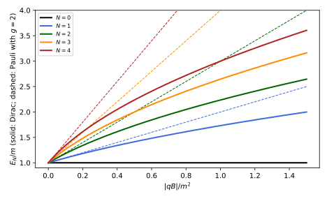
figures/dq-landau.sage.
The definition below couples the Dirac equation to a potential A^\mu = (\Phi, \vec A). It is the relativistic form of the minimal coupling of a classical charge (Definition 12 of Classical electromagnetism); the gauge-theory chapter applies the same rule to charged scalar fields.
Definition 7 (Minimal coupling) The Dirac equation in an electromagnetic potential A_\mu for a particle of charge q is (i\gamma^\mu D_\mu - m)\psi = 0, \qquad D_\mu = \partial_\mu + iqA_\mu , \tag{11} or, in Hamiltonian form, i\partial_t\psi = \big(\vec\alpha\cdot\vec\pi + \beta m + q\Phi\big)\psi, \qquad \vec\pi = \vec p - q\vec A = -i\nabla - q\vec A , \tag{12} where A^\mu = (\Phi, \vec A), \vec B = \nabla \times \vec A and \vec E = -\nabla\Phi - \partial_t\vec A. For the electron q = -e with e > 0 and e^2 = 4\pi\alpha.
Veriphy. Pending.
Lean. Pending.
Sage. Pending.
The Coulomb field of a nucleus is the potential of the hydrogen atom. The first example writes the Hamiltonian that Section 1.4 solves exactly.
Example 37 (The Coulomb potential) A nucleus of charge Ze at the origin has \Phi = Ze/(4\pi r), so an electron has potential energy q\Phi = -Ze^2/(4\pi r) = -Z\alpha/r and Hamiltonian H = \vec\alpha\cdot\vec p + \beta m - Z\alpha/r. The coupling enters only through the combination q\Phi, so a positron in the same field sees +Z\alpha/r, the charge-conjugate problem of Example 76.
Veriphy. Pending.
Lean. Pending.
Sage. Pending.
A uniform magnetic field has a potential linear in the coordinates. The second example writes the symmetric gauge used for Figure 6.
Example 38 (A uniform magnetic field) \vec A = \tfrac12\vec B \times \vec x has \nabla \times \vec A = \vec B; for \vec B = B\hat z, \vec A = (-By/2, Bx/2, 0) and \vec\pi = (p_x + qBy/2, p_y - qBx/2, p_z). The components \pi_x, \pi_y do not commute, [\pi_x, \pi_y] = iqB (Exercise 45), so \pi_x^2 + \pi_y^2 is an oscillator Hamiltonian with levels |qB|(2n + 1): the Landau levels.
Veriphy. Pending.
Lean. Pending.
Sage. Pending.
The potential is defined only up to a gauge transformation, and the equation must not care. The third example states how the spinor transforms, in the convention of Definition 11 of Classical electromagnetism.
Example 39 (Gauge covariance) Under A_\mu \to A_\mu - \partial_\mu\lambda and \psi \to e^{iq\lambda}\psi, D_\mu\psi \to e^{iq\lambda}D_\mu\psi, so Equation 11 keeps its form and the current \bar\psi\gamma^\mu\psi is unchanged. The kinetic momentum \vec\pi, not the canonical \vec p, is the gauge-invariant velocity variable: i[H, \vec x] = \vec\alpha still, and \vec\pi appears in every observable.
Veriphy. Pending.
Lean. Pending.
Sage. Pending.
The first exercise derives the Hamiltonian form from the covariant one. The signs of the lower-index potential are the only trap.
Exercise 44 (The coupled Hamiltonian) Multiply Equation 11 by \gamma^0 and use A_\mu = (\Phi, -\vec A) to derive Equation 12.
\gamma^0(i\gamma^0D_0 + i\gamma^kD_k - m)\psi = 0 gives iD_0\psi = -i\alpha_kD_k\psi + \beta m\psi. With D_0 = \partial_t + iq\Phi and D_k = \partial_k + iqA_k = \partial_k - iqA^k: i\partial_t\psi - q\Phi\psi = -i\alpha_k\partial_k\psi - q\alpha_kA^k\psi + \beta m\psi, that is i\partial_t\psi = [\alpha_k(-i\partial_k - qA^k) + \beta m + q\Phi]\psi.
Veriphy. Pending.
Lean. Pending.
Sage. Pending.
The non-commutativity of the kinetic momenta is the magnetic field. The second exercise proves the commutator that both the Landau levels and the factor g = 2 rest on.
Exercise 45 (Kinetic momenta do not commute) Show that [\pi_i, \pi_j] = iq\epsilon_{ijk}B_k, and hence \vec\pi \times \vec\pi = iq\vec B.
[\pi_i, \pi_j] = -q[p_i, A_j] - q[A_i, p_j] = -q(-i\partial_iA_j) + q(-i\partial_jA_i) = iq(\partial_iA_j - \partial_jA_i) = iq\epsilon_{ijk}B_k. Then (\vec\pi \times \vec\pi)_k = \epsilon_{kij}\pi_i\pi_j = \tfrac12\epsilon_{kij}[\pi_i, \pi_j] = \tfrac12 iq\epsilon_{kij}\epsilon_{ijl}B_l = iqB_k.
Veriphy. Pending.
Lean. Pending.
Sage. Pending.
The third exercise checks gauge covariance at the level of the Hamiltonian. It shows that a time-dependent gauge transformation shifts the scalar potential as it should.
Exercise 46 (Gauge covariance of the Hamiltonian) Let \psi' = e^{iq\lambda}\psi, \Phi' = \Phi - \partial_t\lambda, \vec A' = \vec A + \nabla\lambda. Show that if \psi solves Equation 12 with (\Phi, \vec A), then \psi' solves it with (\Phi', \vec A').
(\vec p - q\vec A')e^{iq\lambda}\psi = e^{iq\lambda}(\vec p + q\nabla\lambda - q\vec A - q\nabla\lambda)\psi = e^{iq\lambda}\vec\pi\psi, and i\partial_t(e^{iq\lambda}\psi) = e^{iq\lambda}(i\partial_t - q\partial_t\lambda)\psi. So i\partial_t\psi' = e^{iq\lambda}[\vec\alpha\cdot\vec\pi + \beta m + q\Phi - q\partial_t\lambda]\psi = [\vec\alpha\cdot\vec\pi' + \beta m + q\Phi']\psi'. (A_\mu \to A_\mu - \partial_\mu\lambda with A_\mu = (\Phi, -\vec A) is this transformation.)
Veriphy. Pending.
Lean. Pending.
Sage. Pending.
The equation that Pauli wrote for a non-relativistic particle with spin has a magnetic moment proportional to the spin with an undetermined factor g. The definition below states it.
Definition 8 (Pauli equation) The Pauli equation for a particle of charge q, mass m and spin one-half is i\partial_t\varphi = \Big(\frac{\vec\pi^{\,2}}{2m} - \vec\mu\cdot\vec B + q\Phi\Big)\varphi, \qquad \vec\mu = g\frac{q}{2m}\vec S, \quad \vec S = \tfrac12\vec\sigma , \tag{13} for a two-component wave function \varphi; the dimensionless constant g is the gyromagnetic ratio. For the electron, \vec\mu = -g\mu_B\vec S with the Bohr magneton \mu_B = e/2m Svanberg (2022, sec. 2.3.2, eq. (2.12)).
Veriphy. Pending.
Lean. Pending.
Sage. Pending.
A magnetic moment in a field has an orientation energy, which splits the spin states. The first example evaluates the splitting for a free electron in a field.
Example 40 (Spin in a magnetic field) For \vec B = B\hat z the spin term is -\mu_zB = g\mu_BBS_z for the electron, so spin up and spin down differ by g\mu_BB. With \mu_B = 5.788 \times 10^{-5} eV/T and g = 2, a field of 1 T splits them by 1.16 \times 10^{-4} eV, a frequency of 28.0 GHz. Svanberg (2022, sec. 2.5.1, eq. (2.23)) records g_s = 2 “apart from a 0.1% correction due to quantum electrodynamics”.
Veriphy. Pending.
Lean. Pending.
Sage. Pending.
In an inhomogeneous field the orientation energy depends on position and exerts a force. The second example derives it from the Pauli Hamiltonian by the Ehrenfest theorem.
Example 41 (The Stern-Gerlach force) For a neutral particle with a magnetic moment (q\Phi = 0, \vec\pi = \vec p) the Heisenberg equation gives \dot{\vec p} = i[H, \vec p] = \nabla(\vec\mu\cdot\vec B). A field gradient \partial_zB_z pushes the two spin states along \pm z with force \pm\tfrac g2\frac{|q|}{2m}\partial_zB_z: a beam splits in two, which is how the half-integer spin was first seen.
Veriphy. Pending.
Lean. Pending.
Sage. Pending.
The spin precesses about the field at a rate set by g, and the orbit circles at the cyclotron rate. The third example compares the two, which is the principle of the most precise measurement of g.
Example 42 (Spin precession and cyclotron motion) From Equation 13, \dot{\vec S} = i[H, \vec S] = \vec\mu \times \vec B, a precession with angular frequency \omega_s = g|q|B/2m; the orbit has \omega_c = |q|B/m. For g = 2 the two coincide and the spin keeps its angle to the velocity. The difference \omega_a = \omega_s - \omega_c = (g/2 - 1)\omega_c is what Fan et al. (2023) measure in a single-electron cyclotron: g/2 = 1.001\,159\,652\,180\,59(13), with the Dirac value 1 as the first term of the prediction.
Veriphy. Pending.
Lean. Pending.
Sage. Pending.
The first exercise solves the precession equation. It shows that only the component of the spin perpendicular to the field moves.
Exercise 47 (Larmor precession) Show that H = -\vec\mu\cdot\vec B with \vec\mu = \gamma\vec S and constant \vec B = B\hat z gives \dot{\vec S} = \gamma\vec S \times \vec B, and solve it for \langle\vec S\rangle(0) = \tfrac12\hat x.
i[H, S_k] = -i\gamma B[S_z, S_k] = -i\gamma B\,i\epsilon_{zkl}S_l = \gamma B\epsilon_{zkl}S_l, which is \gamma(\vec S \times \vec B)_k = \gamma\epsilon_{klz}S_lB. So \dot S_x = \gamma BS_y, \dot S_y = -\gamma BS_x, \dot S_z = 0, and \langle\vec S\rangle(t) = \tfrac12(\cos\gamma Bt, -\sin\gamma Bt, 0): precession at \omega = |\gamma|B, with \gamma = gq/2m.
Veriphy. Pending.
Lean. Pending.
Sage. Pending.
In an atom the spin couples to the orbital angular momentum, and the magnetic moment of a level depends on how they combine. The second exercise computes the Landé factors of the lowest hydrogen levels with Sage, using g_s = 2 and g_l = 1 Svanberg (2022, sec. 2.5.1).
Exercise 48 (Landé factors) The magnetic moment of a level |l, s, j\rangle projected on \vec J has g_J = g_l\frac{j(j + 1) - s(s + 1) + l(l + 1)}{2j(j + 1)} + g_s\frac{j(j + 1) + s(s + 1) - l(l + 1)}{2j(j + 1)}. With Sage, evaluate it for S_{1/2}, P_{1/2}, P_{3/2}, D_{3/2}, D_{5/2} with g_s = 2, and again with the measured g_s of Fan et al. (2023).
With g_s = 2: g_J = 2, \tfrac23, \tfrac43, \tfrac45, \tfrac65. The measured g_s shifts them in the third decimal:
def gJ(l, j, gs, gl=1, sp=1/2):
return gl * (j * (j + 1) - sp * (sp + 1) + l * (l + 1)) / (2 * j * (j + 1)) + gs * (j * (j + 1) + sp * (sp + 1) - l * (l + 1)) / (2 * j * (j + 1))
levels = [("S_1/2", 0, 1/2), ("P_1/2", 1, 1/2), ("P_3/2", 1, 3/2), ("D_3/2", 2, 3/2), ("D_5/2", 2, 5/2)]
gs_meas = 2 * 1.00115965218059
for name, l, j in levels:
print(name, ": g_J =", QQ(gJ(QQ(l), QQ(j), 2, sp=QQ(1)/2)), "with g_s = 2;", round(gJ(l, j, gs_meas), 6), "with the measured g_s")Output:
S_1/2 : g_J = 2 with g_s = 2; 2.002319 with the measured g_s
P_1/2 : g_J = 2/3 with g_s = 2; 0.665894 with the measured g_s
P_3/2 : g_J = 4/3 with g_s = 2; 1.334106 with the measured g_s
D_3/2 : g_J = 4/5 with g_s = 2; 0.799536 with the measured g_s
D_5/2 : g_J = 6/5 with g_s = 2; 1.200464 with the measured g_sVeriphy. Pending.
Lean. Pending.
Sage. Pending.
The anomaly frequency of Example 42 is small and measurable. The third exercise evaluates the frequencies for a realistic field. The numbers show why the anomaly, though tiny, is measured so precisely.
Exercise 49 (Cyclotron and anomaly frequencies) For an electron in B = 5 T, compute \nu_c = eB/2\pi m and \nu_a = (g/2 - 1)\nu_c with the value of Fan et al. (2023). Compare g/2 - 1 with \alpha/2\pi, the first quantum correction.
e/2\pi m = 27.99 GHz/T, so \nu_c = 140.0 GHz and \nu_a = 0.001\,159\,65 \times 140.0 GHz = 162.3 MHz. With \alpha = 1/137.036, \alpha/2\pi = 0.001\,161\,4, which accounts for the anomaly to 0.15\%; the remainder comes from higher orders in \alpha Fan et al. (2023, eq. (7)). The Dirac equation alone gives \nu_a = 0.
The same numbers by computer:
e = 1.602176634e-19; me = 9.1093837015e-31; alpha = 1 / 137.035999166
g2 = 1.00115965218059
nuc = e * 5 / (2 * pi * me)
print("e/(2 pi m) = %.4f GHz/T; nu_c = %.3f GHz; nu_a = %.2f MHz" % ((e / (2 * pi * me) / 1e9).n(), (nuc / 1e9).n(), ((g2 - 1) * nuc / 1e6).n()))
print("g/2 - 1 = %.8f, alpha/(2 pi) = %.8f, relative difference %.4f" % (g2 - 1, (alpha / (2 * pi)).n(), ((alpha / (2 * pi) - (g2 - 1)) / (g2 - 1)).n()))Output:
e/(2 pi m) = 27.9925 GHz/T; nu_c = 139.962 GHz; nu_a = 162.31 MHz
g/2 - 1 = 0.00115965, alpha/(2 pi) = 0.00116141, relative difference 0.0015Veriphy. Pending.
Lean. Pending.
Sage. Pending.
The Dirac equation fixes g. The theorem below shows that its non-relativistic limit is the Pauli equation with exactly g = 2, because of an identity of the Pauli matrices.
Theorem 2 (The non-relativistic limit) Write a solution of Equation 12 in the Dirac representation as \psi = e^{-imt}(\varphi, \chi). If the fields and the kinetic energy are small compared with m, so that |i\partial_t\chi - q\Phi\chi| \ll 2m|\chi|, then \chi \approx \frac{\vec\sigma\cdot\vec\pi}{2m}\varphi , \tag{14} and \varphi satisfies the Pauli equation Equation 13 with g = 2.
Proof. In the Dirac representation the two rows of Equation 12 are i\partial_t\varphi = \vec\sigma\cdot\vec\pi\chi + q\Phi\varphi and i\partial_t\chi = \vec\sigma\cdot\vec\pi\varphi + (q\Phi - 2m)\chi, after removing the rest energy with e^{-imt}. Under the hypothesis the second row gives Equation 14, and the first becomes i\partial_t\varphi = [(\vec\sigma\cdot\vec\pi)^2/2m + q\Phi]\varphi. By \sigma_i\sigma_j = \delta_{ij} + i\epsilon_{ijk}\sigma_k, (\vec\sigma\cdot\vec\pi)^2 = \vec\pi^{\,2} + i\vec\sigma\cdot(\vec\pi \times \vec\pi) = \vec\pi^{\,2} - q\vec\sigma\cdot\vec B (Exercise 45), and -\frac{q}{2m}\vec\sigma\cdot\vec B = -2\frac{q}{2m}\vec S\cdot\vec B is the term -\vec\mu\cdot\vec B with g = 2.
Veriphy. Pending.
Lean. Pending.
Sage. Pending.
The identity behind the theorem is worth seeing on its own. The first example states it, because it explains why the factor two needs no input from experiment.
Example 43 (Where g = 2 comes from) (\vec\sigma\cdot\vec\pi)^2 = \vec\pi^{\,2} - q\vec\sigma\cdot\vec B holds for any potential. A Schrödinger particle with spin would have the kinetic energy \vec\pi^{\,2}/2m, and one could add a magnetic moment with any g; but (\vec\sigma\cdot\vec\pi)^2/2m, which is equal to \vec\pi^{\,2}/2m when \vec B = 0, comes with g = 2 built in. The Dirac equation forces this second form, because its square must be the Klein-Gordon operator.
Veriphy. Pending.
Lean. Pending.
Sage. Pending.
The small component is smaller by a factor of the velocity. The second example estimates it in hydrogen, where it controls the size of the relativistic corrections.
Example 44 (How small the small component is) For a free spinor, |\chi|/|\varphi| = |\vec p|/(E + m) \approx v/2 (Example 23). In hydrogen the typical velocity is Z\alpha, so \chi \sim Z\alpha\varphi/2 and its weight in the density is of order (Z\alpha)^2/4 \approx 1.3 \times 10^{-5} for Z = 1: relativistic corrections are of relative order (Z\alpha)^2, which is why the fine structure is small. For the exact ground state, F/G = (1 - \gamma)/Z\alpha \approx Z\alpha/2 (Example 62).
Veriphy. Pending.
Lean. Pending.
Sage. Pending.
In a uniform magnetic field the Dirac equation can be solved without approximation. The third example finds the exact Landau levels of Figure 6 and compares them with the Pauli levels.
Example 45 (Relativistic Landau levels) For \Phi = 0 and static \vec B, H^2 = (\vec\alpha\cdot\vec\pi)^2 + m^2 = \operatorname{diag}((\vec\sigma\cdot\vec\pi)^2, (\vec\sigma\cdot \vec\pi)^2) + m^2. For \vec B = B\hat z, (\vec\sigma\cdot\vec\pi)^2 = \pi_x^2 + \pi_y^2 + p_z^2 - qB\sigma_3 has eigenvalues |qB|(2n + 1) \mp |qB| + p_z^2, so E^2 = m^2 + p_z^2 + 2N|qB|, N = 0, 1, \dots. For |qB| \ll m^2, E \approx m + p_z^2/2m + N|qB|/m: the Pauli levels with g = 2, in which the spin energy \pm|qB|/2m exactly fills the gap between orbital levels.
Veriphy. Pending.
Lean. Pending.
Sage. Pending.
The first exercise repeats the derivation of the theorem with care about the time dependence. It identifies the hypothesis that is really needed.
Exercise 50 (The derivation in detail) Derive the two rows used in the proof of Theorem 2 from Equation 12 with \beta = \operatorname{diag}(1, -1) and \alpha_k = \begin{pmatrix} 0 & \sigma_k \\ \sigma_k & 0\end{pmatrix}, and show that the hypothesis holds when the energy measured from m and q\Phi are small compared with 2m.
With \psi = e^{-imt}(\varphi, \chi), i\partial_t\psi = e^{-imt}(m + i\partial_t)(\varphi, \chi), and the Hamiltonian gives (\vec\sigma\cdot\vec\pi\chi + m\varphi + q\Phi\varphi, \vec\sigma\cdot\vec\pi\varphi - m\chi + q\Phi\chi); subtracting m gives the two rows. If \chi oscillates like e^{-i\epsilon t} with |\epsilon| \ll m (the non-relativistic energy) and |q\Phi| \ll m, then (i\partial_t - q\Phi)\chi is of order (\epsilon - q\Phi)\chi, negligible against 2m\chi.
Veriphy. Pending.
Lean. Pending.
Sage. Pending.
The identity of Example 43 can be checked on arbitrary functions with a computer algebra system. The second exercise does this in the symmetric gauge.
Exercise 51 ((\vec\sigma\cdot\vec\pi)^2 by computer) With Sage, apply \vec\sigma\cdot\vec\pi twice to a two-component function (f_1, f_2)(x, y, z) with \vec A = (-By/2, Bx/2, 0) and verify (\vec\sigma\cdot\vec\pi)^2 = \vec\pi^{\,2} - qB\sigma_3.
The cross terms \sigma_x\sigma_y\pi_x\pi_y + \sigma_y\sigma_x\pi_y\pi_x = i\sigma_3[\pi_x, \pi_y] = i\sigma_3(iqB) produce the spin term:
x, y, z, q, B = var("x y z q B")
f1 = function("f1")(x, y, z); f2 = function("f2")(x, y, z)
A = [-B * y / 2, B * x / 2, 0]; X = [x, y, z]
pi = lambda k, h: -I * diff(h, X[k]) - q * A[k] * h
s = [matrix(SR, [[0, 1], [1, 0]]), matrix(SR, [[0, -I], [I, 0]]), matrix(SR, [[1, 0], [0, -1]])]
sigpi = lambda F: vector(SR, [sum(s[k][r, c] * pi(k, F[c]) for k in range(3) for c in range(2)) for r in range(2)])
F = vector(SR, [f1, f2])
lhs = sigpi(sigpi(F))
pi2 = vector(SR, [sum(pi(k, pi(k, F[r])) for k in range(3)) for r in range(2)])
diffr = [(a - b).expand() for a, b in zip(lhs, pi2)]
print("(sigma.pi)^2 F - pi^2 F =", diffr)
print("= -q B sigma_3 F:", all(bool((d - e).expand() == 0) for d, e in zip(diffr, -q * B * (s[2] * F))))Output:
(sigma.pi)^2 F - pi^2 F = [-B*q*f1(x, y, z), B*q*f2(x, y, z)]
= -q B sigma_3 F: TrueVeriphy. Pending.
Lean. Pending.
Sage. Pending.
The Dirac operator can be squared covariantly, and the magnetic moment appears as a term in the squared operator. The third exercise performs this, which is how g = 2 is usually seen in field theory.
Exercise 52 (Squaring the coupled Dirac operator) Show that (\gamma^\mu D_\mu)^2 = D^\mu D_\mu + iqS^{\mu\nu}F_{\mu\nu}, with S^{\mu\nu} = \tfrac14[\gamma^\mu, \gamma^\nu] and F_{\mu\nu} = \partial_\mu A_\nu - \partial_\nu A_\mu, and that for a static magnetic field the extra term is -q\vec\Sigma\cdot\vec B. Deduce that solutions satisfy (D^\mu D_\mu + m^2 - q\vec\Sigma\cdot\vec B)\psi = 0 when \vec E = 0.
\gamma^\mu\gamma^\nu = \eta^{\mu\nu} + 2S^{\mu\nu}, so \gamma^\mu\gamma^\nu D_\mu D_\nu = D^2 + S^{\mu\nu}[D_\mu, D_\nu] = D^2 + iqS^{\mu\nu}F_{\mu\nu}. With S^{12} = -\tfrac{i}{2}\Sigma_3 and F_{12} = \partial_1A_2 - \partial_2A_1 = -B_3 (lower indices A_k = -A^k), the (12) and (21) terms give iq\cdot2\cdot(-\tfrac{i}{2}\Sigma_3)(-B_3) = -q\Sigma_3B_3, and cyclically. The Dirac equation gives (i\gamma^\mu D_\mu)^2\psi = m^2\psi, i.e. (D^\mu D_\mu + m^2 - q\vec\Sigma\cdot\vec B)\psi = 0. Since D_k = i\pi_k, D^\mu D_\mu = \partial_t^2 + \vec\pi^{\,2}, and for \psi \propto e^{-iEt} this is E^2 = m^2 + \vec\pi^{\,2} - q\vec\Sigma\cdot\vec B, the g = 2 spectrum of Example 45.
Veriphy. Pending.
Lean. Pending.
Sage. Pending.
The Foldy-Wouthuysen transformation
The Pauli equation is the first term of an expansion in 1/m. To go further one must separate positive from negative energies to higher order, by a unitary change of representation that removes the operators mixing upper and lower components. For a free particle this can be done exactly, as the figure shows.
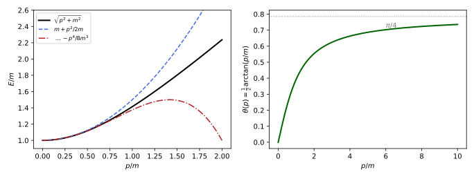
figures/dq-foldy.sage.
The transformation acts on the two kinds of operators differently. The definition below names them, with respect to \beta.
Definition 9 (Even operator) An operator on four-component wave functions is even if it commutes with \beta and odd if it anticommutes with \beta; every operator is the sum of its even part \tfrac12(A + \beta A\beta) and its odd part \tfrac12(A - \beta A\beta). In the Dirac representation even operators are block diagonal and odd ones block off-diagonal. The coupled Hamiltonian Equation 12 is H = \beta m + \mathcal{E} + \mathcal{O} with the even \mathcal{E} = q\Phi and the odd \mathcal{O} = \vec\alpha\cdot\vec\pi Costella and McKellar (1995, sec. III).
Veriphy. Pending.
Lean. Pending.
Sage. Pending.
Products of odd operators are even, as for signs. The first example uses this to show that the square of the odd part of the Hamiltonian is the Pauli kinetic energy.
Example 46 (The square of the odd part) \mathcal{O}^2 = (\vec\alpha\cdot\vec\pi)^2 = \operatorname{diag}((\vec\sigma\cdot\vec\pi)^2, (\vec\sigma\cdot\vec\pi)^2) is even, and \beta\mathcal{O} = -\mathcal{O}\beta. The free Hamiltonian \beta m + \vec\alpha\cdot\vec p has an even mass term and an odd kinetic term: the kinetic term is what couples the large and small components, and removing it to a given order is the goal of the transformation.
Veriphy. Pending.
Lean. Pending.
Sage. Pending.
The velocity operator of Example 16 is odd. The second example draws the consequence for its matrix elements between energy eigenstates.
Example 47 (The velocity is odd) \vec\alpha anticommutes with \beta, so in the Dirac representation it connects upper with lower components. For a free particle it connects positive with negative energies as well, apart from its mean value \vec p/H: this is the origin of the oscillating term in \vec x(t) (Proposition 9). In the Foldy-Wouthuysen representation the velocity becomes the even operator \beta\vec p/E_p Costella and McKellar (1995, eq. (2)).
Veriphy. Pending.
Lean. Pending.
Sage. Pending.
Chirality is odd in the Dirac representation. The third example notes this, which explains why the non-relativistic limit hides chirality and the ultrarelativistic limit hides the rest energy.
Example 48 (Chirality is odd) In the Dirac representation \gamma_5 = \begin{pmatrix} 0 & 1 \\ 1 & 0\end{pmatrix} (Exercise 41 of Classical field theory) anticommutes with \beta: chirality mixes large and small components, and a slow particle, whose state is almost all large component, has \langle\gamma_5\rangle \approx 0. The Weyl representation diagonalises \gamma_5 instead and makes \beta odd, the natural choice when m is small (Proposition 4).
Veriphy. Pending.
Lean. Pending.
Sage. Pending.
The first exercise establishes the multiplication table of even and odd operators. It is used at every step of the expansion.
Exercise 53 (Products of even and odd operators) Show that the product of two even or two odd operators is even and that the product of an even and an odd one is odd. Show that \beta\mathcal{O} is odd and that [\mathcal{O}, \beta] = 2\mathcal{O}\beta for odd \mathcal{O}.
If \beta A = \epsilon_AA\beta and \beta B = \epsilon_BB\beta with signs \epsilon, then \beta AB = \epsilon_AA\beta B = \epsilon_A\epsilon_BAB\beta, so the parity of a product is the product of parities. \beta is even, so \beta\mathcal{O} is odd. [\mathcal{O}, \beta] = \mathcal{O}\beta - \beta\mathcal{O} = 2\mathcal{O}\beta.
Veriphy. Pending.
Lean. Pending.
Sage. Pending.
The decomposition into even and odd parts is a linear projection on matrices. The second exercise computes it with Sage for a few Dirac matrices.
Exercise 54 (Even and odd parts by computer) In the Dirac representation, compute with Sage the even and odd parts of \gamma^1, \gamma_5, \gamma^0\gamma_5, \Sigma_3 and of the Hamiltonian H = \alpha_3p + \beta m + V, and check that they are block diagonal and block off-diagonal.
\gamma^1 and \gamma_5 are odd, \Sigma_3 is even, \gamma^0\gamma_5 is odd, and the Hamiltonian splits into \beta m + V and \alpha_3p:
s = [matrix(SR, [[0, 1], [1, 0]]), matrix(SR, [[0, -I], [I, 0]]), matrix(SR, [[1, 0], [0, -1]])]
Z = zero_matrix(SR, 2); one = identity_matrix(SR, 2)
blk = lambda a, b, c, d: block_matrix([[a, b], [c, d]], subdivide=False)
beta = blk(one, Z, Z, -one); gk = [blk(Z, sk, -sk, Z) for sk in s]
g5 = I * beta * gk[0] * gk[1] * gk[2]
p, m, V = var("p m V")
mats = {"gamma^1": gk[0], "gamma_5": g5, "gamma^0 gamma_5": beta * g5, "Sigma_3": blk(s[2], Z, Z, s[2]), "H": p * beta * gk[2] + m * beta + V * identity_matrix(SR, 4)}
diag_part = lambda M: M.submatrix(0, 0, 2, 2).is_zero() and M.submatrix(2, 2, 2, 2).is_zero()
offd_part = lambda M: M.submatrix(0, 2, 2, 2).is_zero() and M.submatrix(2, 0, 2, 2).is_zero()
for name, A in mats.items():
ev = (A + beta * A * beta) / 2; od = (A - beta * A * beta) / 2
print(name, ": even part block diagonal", offd_part(ev), ", odd part block off-diagonal", diag_part(od), "; even part zero:", ev.is_zero(), ", odd part zero:", od.is_zero())
print("odd part of H =", ((mats["H"] - beta * mats["H"] * beta) / 2).list())Output:
gamma^1 : even part block diagonal True , odd part block off-diagonal True ; even part zero: True , odd part zero: False
gamma_5 : even part block diagonal True , odd part block off-diagonal True ; even part zero: True , odd part zero: False
gamma^0 gamma_5 : even part block diagonal True , odd part block off-diagonal True ; even part zero: True , odd part zero: False
Sigma_3 : even part block diagonal True , odd part block off-diagonal True ; even part zero: False , odd part zero: True
H : even part block diagonal True , odd part block off-diagonal True ; even part zero: False , odd part zero: False
odd part of H = [0, 0, p, 0, 0, 0, 0, -p, p, 0, 0, 0, 0, -p, 0, 0]Veriphy. Pending.
Lean. Pending.
Sage. Pending.
Whether an operator is even depends on the representation. The third exercise shows that the even part is not preserved by a change of basis that does not commute with \beta.
Exercise 55 (Even in one basis, odd in another) The change of basis U of Exercise 41 of Classical field theory maps the Weyl to the Dirac representation and maps \beta_W = \gamma^0_W to \beta_D = \operatorname{diag}(1, -1). Show that “even” defined with \beta_W in the Weyl representation and with \beta_D in the Dirac representation are the same notion, and that \gamma_5 is odd in both.
Evenness is defined by commutation with \beta = \gamma^0, a relation preserved by conjugation: [A, \gamma^0] = 0 iff [UAU^{-1}, U\gamma^0U^{-1}] = 0. So the notion is representation independent, though the block shape is not: in the Weyl representation even operators are those commuting with \begin{pmatrix} 0 & 1 \\ 1 & 0\end{pmatrix}, not block diagonal ones. \gamma_5 anticommutes with \gamma^0 in any representation, so it is odd in both.
Veriphy. Pending.
Lean. Pending.
Sage. Pending.
The transformation itself is a unitary change of representation, chosen to remove the odd operators. The definition below states it, following the description of Costella and McKellar (1995, sec. III).
Definition 10 (Foldy-Wouthuysen transformation) A Foldy-Wouthuysen transformation is a unitary U = e^{iS}, with S Hermitian, such that the transformed Hamiltonian H' = e^{iS}(H - i\partial_t)e^{-iS} \tag{15} is even, exactly or to a given order in 1/m. For the free Hamiltonian H = \vec\alpha\cdot\vec p + \beta m the exact transformation is U = \exp(\beta\vec\alpha\cdot\hat p\,\theta) with \tan2\theta = |\vec p|/m, and it gives H' = \beta\sqrt{\vec p^{\,2} + m^2} Costella and McKellar (1995, eq. (1)).
Veriphy. Pending.
Lean. Pending.
Sage. Pending.
The free transformation can be verified in a few lines because \beta\vec\alpha\cdot\hat p squares to -1. The first example carries it out.
Example 49 (The free transformation) (\beta\vec\alpha\cdot\hat p)^2 = -\beta^2(\vec\alpha\cdot\hat p)^2 = -1, so U = \cos\theta + \beta\vec\alpha\cdot\hat p\sin\theta. Since \beta\vec\alpha\cdot\hat p anticommutes with H, UHU^\dagger = U^2H = (\cos2\theta + \beta\vec\alpha\cdot\hat p\sin2\theta)(\vec\alpha\cdot\vec p + \beta m), whose odd part \vec\alpha\cdot\hat p(|\vec p|\cos2\theta - m\sin2\theta) vanishes for \tan2\theta = |\vec p|/m, leaving \beta(m\cos2\theta + |\vec p|\sin2\theta) = \beta E_p, the right panel of Figure 7.
Veriphy. Pending.
Lean. Pending.
Sage. Pending.
With fields present there is no exact transformation, but one can remove the odd part order by order. The second example performs the first step, which already gives the Pauli Hamiltonian.
Example 50 (The first step) With S = -i\beta\mathcal{O}/2m, H' = H + i[S, H] + \tfrac{i^2}{2}[S, [S, H]] + \dots and i[S, \beta m] = \tfrac{1}{2m}[\beta\mathcal{O}, \beta m] = -\mathcal{O} cancels the odd part, while \tfrac{i^2}{2}[S, [S, \beta m]] = \beta\mathcal{O}^2/2m adds the even kinetic term: H' = \beta m + \beta\mathcal{O}^2/2m + \mathcal{E} + O(1/m)-odd terms. The upper block m + (\vec\sigma\cdot\vec\pi)^2/2m + q\Phi is the Pauli Hamiltonian of Theorem 2.
Veriphy. Pending.
Lean. Pending.
Sage. Pending.
In the transformed representation the operators behave classically. The third example states the velocity, the property that Costella and McKellar (1995, sec. III) single out.
Example 51 (Classical velocity) For H' = \beta E_p the velocity is i[H', \vec x] = \beta\vec p/E_p, with a continuum of eigenvalues in (-1, 1) and no oscillation: in the Foldy-Wouthuysen representation \vec x is the Newton-Wigner position, and spin and orbital angular momentum are separately conserved. The price is that minimal coupling is no longer simple: the electron acquires a magnetic moment and a Darwin term Costella and McKellar (1995, secs. IV–V).
Veriphy. Pending.
Lean. Pending.
Sage. Pending.
The first exercise checks the exact free transformation by computer for a momentum along z. It confirms the angle \tan2\theta = p/m.
Exercise 56 (The free transformation by computer) With Sage, in the Dirac representation and for \vec p = (0, 0, p), compute UHU^\dagger with U = \cos\theta + \beta\alpha_3\sin\theta and find the \theta that removes the odd part; check UHU^\dagger = \beta\sqrt{p^2 + m^2} for p = 3, m = 4.
The odd part is \alpha_3(p\cos2\theta - m\sin2\theta); for p = 3, m = 4, \tan2\theta = 3/4 gives \cos2\theta = 4/5, \sin2\theta = 3/5 and H' = 5\beta:
one = identity_matrix(SR, 2); Z = zero_matrix(SR, 2); s3 = matrix(SR, [[1, 0], [0, -1]])
beta = block_matrix([[one, Z], [Z, -one]], subdivide=False); a3 = block_matrix([[Z, s3], [s3, Z]], subdivide=False)
p, m, th = var("p m theta", domain="real")
U = cos(th) * identity_matrix(SR, 4) + sin(th) * beta * a3
H = p * a3 + m * beta
Hp = (U * H * U.conjugate_transpose()).simplify_full().simplify_trig()
odd = ((Hp - beta * Hp * beta) / 2).simplify_full()
print("U H U^dag =", Hp.list())
print("odd part = alpha_3 (p cos 2theta - m sin 2theta):", (odd - (p * cos(2 * th) - m * sin(2 * th)) * a3).simplify_full().simplify_trig() == 0)
# p = 3, m = 4: cos 2theta = 4/5, sin 2theta = 3/5, so cos theta = 3/sqrt 10, sin theta = 1/sqrt 10
U0 = 3 / sqrt(10) * identity_matrix(SR, 4) + 1 / sqrt(10) * beta * a3
print("for p = 3, m = 4: U H U^dag =", (U0 * H.subs(p=3, m=4) * U0.conjugate_transpose()).simplify_full().diagonal(), "= 5 beta")Output:
U H U^dag = [2*m*cos(theta)^2 + 2*p*cos(theta)*sin(theta) - m, 0, 2*p*cos(theta)^2 - 2*m*cos(theta)*sin(theta) - p, 0, 0, 2*m*cos(theta)^2 + 2*p*cos(theta)*sin(theta) - m, 0, -2*p*cos(theta)^2 + 2*m*cos(theta)*sin(theta) + p, 2*p*cos(theta)^2 - 2*m*cos(theta)*sin(theta) - p, 0, -2*m*cos(theta)^2 - 2*p*cos(theta)*sin(theta) + m, 0, 0, -2*p*cos(theta)^2 + 2*m*cos(theta)*sin(theta) + p, 0, -2*m*cos(theta)^2 - 2*p*cos(theta)*sin(theta) + m]
odd part = alpha_3 (p cos 2theta - m sin 2theta): True
for p = 3, m = 4: U H U^dag = [5, 5, -5, -5] = 5 betaVeriphy. Pending.
Lean. Pending.
Sage. Pending.
The angle of the free transformation is fixed by a single equation. The second exercise derives it and the limiting behaviour shown in Figure 7.
Exercise 57 (The angle) From Example 49, show that \tan2\theta = |\vec p|/m, that \theta \approx |\vec p|/2m for slow particles, and that \theta \to \pi/4 as |\vec p| \to \infty. What is S to first order, and how does it compare with Example 50?
The odd part vanishes when |\vec p|\cos2\theta = m\sin2\theta. For small |\vec p|/m, 2\theta \approx |\vec p|/m; for large, 2\theta \to \pi/2. To first order U \approx 1 + \beta\vec\alpha\cdot\vec p/2m = e^{iS} with S = -i\beta\vec\alpha\cdot\vec p/2m, which is the S = -i\beta\mathcal{O}/2m of the first step for \vec A = 0.
Veriphy. Pending.
Lean. Pending.
Sage. Pending.
The transformed position operator differs from \vec x, which is the content of the Newton-Wigner construction. The third exercise computes the difference to first order.
Exercise 58 (The mean position) With U \approx 1 + \beta\vec\alpha\cdot\vec p/2m, show that U^\dagger\vec xU \approx \vec x + \frac{i\beta\vec\alpha}{2m} to first order. Why does this displacement, of the order of the Compton wavelength, matter for the Darwin term of Theorem 3?
U^\dagger\vec xU \approx \vec x + [\vec x, \beta\vec\alpha\cdot\vec p]/2m = \vec x + \beta\alpha_k[\vec x, p_k]/2m = \vec x + i\beta\vec\alpha/2m. The operator that is “the position” in one representation is smeared over a distance 1/2m in the other; a potential felt at the smeared position has, to second order, an extra term \tfrac16\langle\delta x^2\rangle\nabla^2V, which is the Darwin term \nabla^2V/8m^2, the “charge radius” of Costella and McKellar (1995, sec. V).
Veriphy. Pending.
Lean. Pending.
Sage. Pending.
Carrying the transformation to second order in 1/m gives the Hamiltonian that contains the whole fine structure of hydrogen. The theorem below states it.
Theorem 3 (The Foldy-Wouthuysen Hamiltonian) For H = \beta m + \mathcal{E} + \mathcal{O} with \mathcal{E} = q\Phi and \mathcal{O} = \vec\alpha\cdot\vec\pi, three successive transformations of the form Equation 15 give, up to terms of order 1/m^3, H_{\mathrm{FW}} = \beta\Big(m + \frac{\mathcal{O}^2}{2m} - \frac{\mathcal{O}^4}{8m^3}\Big) + \mathcal{E} - \frac{1}{8m^2}[\mathcal{O}, [\mathcal{O}, \mathcal{E}]] - \frac{i}{8m^2}[\mathcal{O}, \dot{\mathcal{O}}] . \tag{16} For a static potential energy V(\vec x) = q\Phi and \vec A = 0 the upper block is H_{\mathrm{FW}}^{+} = m + \frac{\vec p^{\,2}}{2m} - \frac{\vec p^{\,4}}{8m^3} + V + \frac{1}{4m^2}\vec\sigma\cdot(\nabla V \times \vec p) + \frac{1}{8m^2}\nabla^2V , \tag{17} and for a central V(r) the spin-orbit term is \frac{1}{2m^2r}\frac{dV}{dr}\vec S\cdot\vec L. In the Coulomb case these are the infinite-mass limit of the Breit potential of Eides et al. (2001, eq. (35)).
Proof sketch. Each step uses S = -i\beta\mathcal{O}_n/2m for the current odd part \mathcal{O}_n; expanding e^{iS}He^{-iS} by the Baker-Campbell-Hausdorff series and e^{iS}(-i\partial_t)e^{-iS} = -i\partial_t - \dot S + \dots, the odd terms of order m^0 and m^{-1} are removed and the even terms collected, which gives Equation 16 (Costella and McKellar (1995, sec. III) describe the procedure and its validity). For the static case [\mathcal{O}, V] = -i\vec\alpha\cdot\nabla V and [\mathcal{O}, [\mathcal{O}, V]] = -\nabla^2V - 2\vec\Sigma\cdot(\nabla V \times \vec p) (Exercise 62), and \mathcal{O}^2 = \vec p^{\,2}.
Veriphy. Pending.
Lean. Pending.
Sage. Pending.
For hydrogen the three corrections have names and sizes. The first example lists them, with the potential V = -Z\alpha/r.
Example 52 (The three corrections in hydrogen) With V = -Z\alpha/r: the relativistic kinetic correction -\vec p^{\,4}/8m^3; the spin-orbit coupling \frac{Z\alpha}{2m^2r^3}\vec S\cdot\vec L, since \frac1r\frac{dV}{dr} = Z\alpha/r^3; and the Darwin term \frac{1}{8m^2}\nabla^2V = \frac{\pi Z\alpha}{2m^2}\delta^3(\vec x), since \nabla^2(1/r) = -4\pi\delta^3. Each is of order m(Z\alpha)^4, smaller than the Bohr energies by (Z\alpha)^2.
Veriphy. Pending.
Lean. Pending.
Sage. Pending.
The Darwin term acts only at the nucleus and therefore only on s states. The second example interprets it, with the smearing of Exercise 58.
Example 53 (The Darwin term as smearing) If the electron feels the potential averaged over a sphere of radius \delta around its position, the energy changes by \tfrac16\delta^2\nabla^2V to second order. With \delta^2 = 3/4m^2, a radius of the order of the Compton wavelength, this is the Darwin term. For hydrogen it raises the s levels by \frac{\pi Z\alpha}{2m^2}|\psi_{n00}(0)|^2 = \frac{m(Z\alpha)^4}{2n^3} (Exercise 60), and leaves the others unchanged.
Veriphy. Pending.
Lean. Pending.
Sage. Pending.
The three corrections depend on l separately, but their sum depends only on j. The third example states the result, which is the leading term of the exact spectrum of Theorem 4.
Example 54 (The fine structure to first order) In first-order perturbation theory (Proposition 8 of Quantum mechanics) the three corrections add to \Delta E_{nj} = -\frac{m(Z\alpha)^4}{2n^4}\Big(\frac{n}{j + \frac12} - \frac34\Big) \tag{18} for every l compatible with j (Exercise 61). The l-dependence of the kinetic and spin-orbit terms cancels against the Darwin term for l = 0, which is why 2S_{1/2} and 2P_{1/2} stay degenerate.
Veriphy. Pending.
Lean. Pending.
Sage. Pending.
The first exercise reduces the spin-orbit term for a central potential. It is the step from Equation 17 to the familiar \vec S\cdot\vec L form.
Exercise 59 (The spin-orbit term) For V = V(r) show that \nabla V \times \vec p = \frac1r\frac{dV}{dr}\vec L and hence \frac{1}{4m^2}\vec\sigma\cdot(\nabla V \times \vec p) = \frac{1}{2m^2r}\frac{dV}{dr}\vec S\cdot\vec L. Check the Coulomb case against Eides et al. (2001, eq. (35)) at M \to \infty.
\nabla V = V'(r)\vec x/r, so \nabla V \times \vec p = (V'/r)\vec x \times \vec p = (V'/r)\vec L, the factor V'/r commuting with \vec L. With \vec S = \vec\sigma/2 the coefficient becomes 1/(2m^2). For V = -Z\alpha/r, V'/r = Z\alpha/r^3 and the term is \frac{Z\alpha}{4m^2r^3}\vec L\cdot\vec\sigma, which is the last term of eq. (35) of Eides et al. (2001) at M \to \infty (with [\vec r \times \vec p]\cdot\vec\sigma = \vec L\cdot\vec\sigma).
Veriphy. Pending.
Lean. Pending.
Sage. Pending.
The Darwin term needs the value of the wave function at the origin. The second exercise computes it for the s states, using the Laguerre form of the radial functions of Michele Cini and Rotondi (2023, sec. 11.2).
Exercise 60 (The Darwin shift) Using |\psi_{n00}(0)|^2 = (mZ\alpha)^3/\pi n^3, show that the Darwin term shifts the s levels by m(Z\alpha)^4/2n^3. Evaluate it for the 1S and 2S levels of hydrogen in MHz.
\frac{\pi Z\alpha}{2m^2}\cdot\frac{(mZ\alpha)^3}{\pi n^3} = \frac{m(Z\alpha)^4}{2n^3}. With m\alpha^4 = 1.449 \times 10^{-3} eV, i.e. 350.4 GHz, the shift is 175.2 GHz for 1S and 21.9 GHz for 2S. The value at the origin follows from R_{n0}(0) = 2(mZ\alpha/n)^{3/2} and Y_{00} = 1/\sqrt{4\pi}, since L^1_n(0) \neq 0 in the radial function of Michele Cini and Rotondi (2023, eq. (11.17)).
Veriphy. Pending.
Lean. Pending.
Sage. Pending.
The cancellation of Example 54 is a computation with three expectation values. The third exercise performs it with Sage for all levels with n \leq 4.
Exercise 61 (Summing the three corrections) Using \langle1/r\rangle = mZ\alpha/n^2, \langle1/r^2\rangle = (mZ\alpha)^2/n^3(l + \frac12), \langle1/r^3\rangle = (mZ\alpha)^3/n^3l(l + \frac12)(l + 1) for l \geq 1, \langle\vec p^{\,4}\rangle = 4m^2\langle(E_n - V)^2\rangle and \vec S\cdot\vec L = \tfrac12[j(j + 1) - l(l + 1) - \tfrac34], compute with Sage the sum of the three shifts for every (n, l, j) with n \leq 4 and compare with Equation 18. ( \langle1/r\rangle is Michele Cini and Rotondi (2023, sec. 11.3, Problem 3).)
The kinetic term is -\frac{m(Z\alpha)^4}{2n^4}(\frac{n}{l + 1/2} - \frac34), the spin-orbit term adds the j-dependence for l \geq 1, the Darwin term supplies it for l = 0, and every case agrees with Equation 18:
def shifts(n, l, j):
En = -QQ(1) / (2 * n^2) # Bohr energy in units m (Z alpha)^2; below all in units m (Z alpha)^4
r1, r2 = QQ(1) / n^2, QQ(1) / (n^3 * (l + QQ(1) / 2))
kin = -QQ(1) / 2 * (En^2 + 2 * En * r1 + r2) # -<p^4>/8m^3 = -<(E - V)^2>/2m with V = -1/r
if l == 0:
so, dar = 0, QQ(1) / (2 * n^3)
else:
r3 = QQ(1) / (n^3 * l * (l + QQ(1) / 2) * (l + 1))
SL = (j * (j + 1) - l * (l + 1) - QQ(3) / 4) / 2
so, dar = QQ(1) / 2 * r3 * SL, 0 # (Z alpha / 2 m^2) <r^-3> S.L
return kin, so, dar
ok = True
for n in range(1, 5):
for l in range(n):
for j in ([QQ(1) / 2] if l == 0 else [l - QQ(1) / 2, l + QQ(1) / 2]):
kin, so, dar = shifts(n, l, j)
tot = kin + so + dar; dirac = -QQ(1) / (2 * n^4) * (n / (j + QQ(1) / 2) - QQ(3) / 4)
ok = ok and tot == dirac
print("n=%d l=%d j=%s: kinetic %s, spin-orbit %s, Darwin %s, total %s, formula %s" % (n, l, j, kin, so, dar, tot, dirac))
print("all totals agree with the formula:", ok)Output:
n=1 l=0 j=1/2: kinetic -5/8, spin-orbit 0, Darwin 1/2, total -1/8, formula -1/8
n=2 l=0 j=1/2: kinetic -13/128, spin-orbit 0, Darwin 1/16, total -5/128, formula -5/128
n=2 l=1 j=1/2: kinetic -7/384, spin-orbit -1/48, Darwin 0, total -5/128, formula -5/128
n=2 l=1 j=3/2: kinetic -7/384, spin-orbit 1/96, Darwin 0, total -1/128, formula -1/128
n=3 l=0 j=1/2: kinetic -7/216, spin-orbit 0, Darwin 1/54, total -1/72, formula -1/72
n=3 l=1 j=1/2: kinetic -5/648, spin-orbit -1/162, Darwin 0, total -1/72, formula -1/72
n=3 l=1 j=3/2: kinetic -5/648, spin-orbit 1/324, Darwin 0, total -1/216, formula -1/216
n=3 l=2 j=3/2: kinetic -1/360, spin-orbit -1/540, Darwin 0, total -1/216, formula -1/216
n=3 l=2 j=5/2: kinetic -1/360, spin-orbit 1/810, Darwin 0, total -1/648, formula -1/648
n=4 l=0 j=1/2: kinetic -29/2048, spin-orbit 0, Darwin 1/128, total -13/2048, formula -13/2048
n=4 l=1 j=1/2: kinetic -23/6144, spin-orbit -1/384, Darwin 0, total -13/2048, formula -13/2048
n=4 l=1 j=3/2: kinetic -23/6144, spin-orbit 1/768, Darwin 0, total -5/2048, formula -5/2048
n=4 l=2 j=3/2: kinetic -17/10240, spin-orbit -1/1280, Darwin 0, total -5/2048, formula -5/2048
n=4 l=2 j=5/2: kinetic -17/10240, spin-orbit 1/1920, Darwin 0, total -7/6144, formula -7/6144
n=4 l=3 j=5/2: kinetic -11/14336, spin-orbit -1/2688, Darwin 0, total -7/6144, formula -7/6144
n=4 l=3 j=7/2: kinetic -11/14336, spin-orbit 1/3584, Darwin 0, total -1/2048, formula -1/2048
all totals agree with the formula: TrueVeriphy. Pending.
Lean. Pending.
Sage. Pending.
The double commutator in the proof is where the spin-orbit and Darwin terms come from. The fourth exercise evaluates it.
Exercise 62 (The double commutator) For \mathcal{O} = \vec\alpha\cdot\vec p and a function V(\vec x), show that [\mathcal{O}, V] = -i\vec\alpha\cdot\nabla V and [\mathcal{O}, [\mathcal{O}, V]] = -\nabla^2V - 2\vec\Sigma\cdot(\nabla V \times \vec p), using \alpha_i\alpha_j = \delta_{ij} + i\epsilon_{ijk}\Sigma_k. Deduce the last two terms of Equation 17.
[p_i, V] = -i\partial_iV, so [\mathcal{O}, V] = -i\alpha_i\partial_iV. Then [\alpha_jp_j, -i\alpha_i\partial_iV] = -i\alpha_j\alpha_i[p_j, \partial_iV] - i[\alpha_j, \alpha_i](\partial_iV)p_j = -\alpha_j\alpha_i\partial_j\partial_iV - i\cdot2i\epsilon_{jik}\Sigma_k(\partial_iV)p_j. The first term is -\nabla^2V by symmetry; the second is 2\epsilon_{jik}\Sigma_k\partial_iVp_j = -2\vec\Sigma\cdot(\nabla V \times \vec p). Multiplying by -1/8m^2 gives \frac{1}{8m^2}\nabla^2V + \frac{1}{4m^2}\vec\Sigma\cdot(\nabla V \times \vec p), the Darwin and spin-orbit terms.
Veriphy. Pending.
Lean. Pending.
Sage. Pending.
Exercises
These exercises combine the Pauli limit with the Foldy-Wouthuysen expansion. The first compares the spin-orbit term with the naive estimate from the magnetic field seen in the electron’s rest frame.
Exercise 63 (The Thomas factor) An electron moving with velocity \vec v through an electric field \vec E sees, to first order, the magnetic field \vec B' = -\vec v \times \vec E. Show that -\vec\mu\cdot\vec B' with g = 2 is -\frac{q}{m^2}\vec S\cdot(\vec E \times \vec p), twice the spin-orbit term of Theorem 3. (The factor \tfrac12 is Thomas precession, which the Dirac equation contains automatically.)
-\vec\mu\cdot\vec B' = \frac{q}{m}\vec S\cdot(\vec v \times \vec E) = \frac{q}{m^2}\vec S\cdot(\vec p \times \vec E) = -\frac{q}{m^2}\vec S\cdot(\vec E \times \vec p). With \nabla V = -q\vec E, the term of Equation 17 is \frac{1}{4m^2}\vec\sigma\cdot(-q\vec E \times \vec p) = -\frac{q}{2m^2}\vec S\cdot(\vec E \times \vec p), half the naive value. The rest frame of the electron is accelerated, and the rotation of its axes (Thomas precession) subtracts half the magnetic precession.
Veriphy. Pending.
Lean. Pending.
Sage. Pending.
The exact Landau levels expand into the Pauli levels and a relativistic correction. The second exercise checks with Sage that the correction is the -\mathcal{O}^4/8m^3 term of Equation 16.
Exercise 64 (Landau levels to second order) Expand E_N = \sqrt{m^2 + 2N|qB|} to second order in |qB| with Sage, and show that the second-order term equals -\langle\mathcal{O}^4 \rangle/8m^3 with \mathcal{O}^2 = (\vec\sigma\cdot\vec\pi)^2 = 2N|qB| on the level N (p_z = 0).
E_N = m + N|qB|/m - N^2|qB|^2/2m^3 + \dots, and -(2N|qB|)^2/8m^3 = -N^2|qB|^2/2m^3: on a Landau level the Foldy-Wouthuysen series is the Taylor series of the square root:
m, N, b = var("m N b", domain="positive")
ser = taylor(sqrt(m^2 + 2 * N * b), b, 0, 3)
print("E_N =", ser)
print("second-order term = -(2 N b)^2/(8 m^3):", bool(ser.coefficient(b, 2) * b^2 == -(2 * N * b)^2 / (8 * m^3)))
print("third-order term = +(2 N b)^3/(16 m^5), the next term of the series of sqrt(p^2 + m^2):", bool(ser.coefficient(b, 3) * b^3 == (2 * N * b)^3 / (16 * m^5)))Output:
E_N = 1/2*N^3*b^3/m^5 - 1/2*N^2*b^2/m^3 + N*b/m + m
second-order term = -(2 N b)^2/(8 m^3): True
third-order term = +(2 N b)^3/(16 m^5), the next term of the series of sqrt(p^2 + m^2): TrueVeriphy. Pending.
Lean. Pending.
Sage. Pending.
The spin-orbit constant of a level is what spectroscopists measure in alkali atoms. The third exercise computes it for hydrogen from the Foldy-Wouthuysen Hamiltonian and compares with the splitting formula of Svanberg (2022).
Exercise 65 (The spin-orbit constant) Svanberg (2022, sec. 2.3.2, eqs. (2.13)-(2.16)) writes the spin-orbit energy as \zeta\,\vec l\cdot\vec s with splitting \Delta E = \zeta(l + \frac12). Compute \zeta_{nl} for hydrogen from the spin-orbit term and show that \Delta E for 2P is m\alpha^4/32, equal to the full fine-structure splitting of Equation 18. Why does the spin-orbit term alone give the whole splitting between 2P_{1/2} and 2P_{3/2}?
\zeta_{nl} = \frac{Z\alpha}{2m^2}\langle r^{-3}\rangle = \frac{m(Z\alpha)^4}{2n^3l(l + \frac12)(l + 1)}, so \Delta E = \zeta(l + \tfrac12) = \frac{m(Z\alpha)^4}{2n^3l(l + 1)}, which for n = 2, l = 1, Z = 1 is m\alpha^4/32 = 10.95 GHz. From Equation 18, \Delta E_{2,3/2} - \Delta E_{2,1/2} = \frac{m\alpha^4}{32}(2 - 1) = m\alpha^4/32 as well. The kinetic and Darwin terms depend on n and l only, so they shift both 2P levels equally.
Veriphy. Pending.
Lean. Pending.
Sage. Pending.
The Dirac hydrogen atom
The Coulomb problem is one of the few in which the Dirac equation can be solved exactly, and its solution is the benchmark against which the most precise measurements of atomic physics are compared. This part separates the equation in spherical coordinates with the operator K and the spinor spherical harmonics, reduces it to two coupled radial equations, solves them, and compares the resulting spectrum with the measured fine structure and with the Lamb shift that lies beyond it. The non-relativistic solution of Michele Cini and Rotondi (2023, chap. 11) is the model for the method, and the spectrum and its corrections are those reviewed by Eides et al. (2001, sec. II and VII).
Separation in spherical coordinates
In a central potential the orbital angular momentum \vec L is not conserved (Exercise 35), but \vec J = \vec L + \vec S and a sign that plays the role of l are. The figure shows the result that the separation leads to, the radial density of the ground state, which the relativistic equation pulls towards the nucleus.
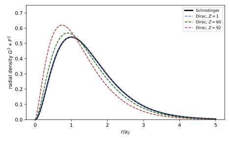
figures/dq-radial.sage.
The operator that replaces \vec L^2 in the Dirac theory combines the spin-orbit operator with \beta. The definition below introduces it and its eigenvalues.
Definition 11 (Dirac’s operator K) Dirac’s operator is K = \beta(\vec\Sigma\cdot\vec L + 1). It commutes with \vec J and with every Hamiltonian \vec\alpha\cdot\vec p + \beta m + V(r) with a central potential, and K^2 = \vec J^2 + \tfrac14, so its eigenvalues are \kappa = \pm\big(j + \tfrac12\big), \qquad j = \tfrac12, \tfrac32, \dots \tag{19} In the Dirac representation an eigenstate has upper components of orbital angular momentum l = \kappa - 1 if \kappa > 0 (j = l + \frac12) and l = -\kappa if \kappa < 0 (j = l - \frac12), and lower components of orbital angular momentum l' = 2j - l.
Veriphy. Pending.
Lean. Pending.
Sage. Pending.
The values of \kappa label the familiar atomic states. The first example lists them for the lowest levels. The table is the dictionary between \kappa and spectroscopic notation.
Example 55 (The labels of the states) \kappa = 1: S_{1/2} (upper l = 0, lower l' = 1). \kappa = -1: P_{1/2} (l = 1, l' = 0). \kappa = 2: P_{3/2} (l = 1, l' = 2). \kappa = -2: D_{3/2}. \kappa = 3: D_{5/2}. The pairs \pm\kappa have the same j and opposite parity, since the parity of the upper components is (-1)^l (Example 80). The spectroscopic label is that of the large component.
Veriphy. Pending.
Lean. Pending.
Sage. Pending.
The square of K is fixed by the total angular momentum, which is why its eigenvalues are half-odd integers in absolute value. The second example derives this from the algebra of the Pauli matrices.
Example 56 (The square of K) (\vec\sigma\cdot\vec L)^2 = \vec L^2 + i\vec\sigma\cdot(\vec L \times \vec L) = \vec L^2 - \vec\sigma\cdot\vec L, using \vec L \times \vec L = i\vec L. Hence (\vec\sigma\cdot\vec L + 1)^2 = \vec L^2 + \vec\sigma\cdot\vec L + 1 = (\vec L + \tfrac12\vec\sigma)^2 + \tfrac14 = \vec J^2 + \tfrac14, and since \beta commutes with \vec\Sigma\cdot\vec L, K^2 = \vec J^2 + \tfrac14, with eigenvalues j(j + 1) + \tfrac14 = (j + \tfrac12)^2.
Veriphy. Pending.
Lean. Pending.
Sage. Pending.
In the non-relativistic limit K reduces to an operator of the Pauli theory. The third example identifies it, showing that \kappa is the relativistic version of the spin-orbit quantum number.
Example 57 (K and the spin-orbit coupling) On the upper components K = \vec\sigma\cdot\vec L + 1 = 2\vec S\cdot\vec L + 1, so the spin-orbit term of Example 52 is \frac{Z\alpha}{4m^2r^3}(K - 1) on them. For j = l + \frac12, 2\vec S\cdot\vec L = l and \kappa = l + 1; for j = l - \frac12, 2\vec S\cdot\vec L = -(l + 1) and \kappa = -l. In the Dirac theory K, not \vec L^2, labels the states, and l is recovered from \kappa and the choice of component.
Veriphy. Pending.
Lean. Pending.
Sage. Pending.
The first exercise proves that K is conserved. The key fact is that \vec\Sigma\cdot\vec L + 1 anticommutes with \vec\alpha\cdot\vec p while \beta anticommutes with it too.
Exercise 66 (K commutes with H) Show that \vec\alpha\cdot\vec p anticommutes with \vec\Sigma\cdot\vec L + 1 (use \vec\alpha = \gamma_5\vec\Sigma in the Dirac representation and \{\vec\sigma\cdot\vec p, \vec\sigma\cdot\vec L + 1\} = 0), and deduce [K, H] = 0 for H = \vec\alpha\cdot\vec p + \beta m + V(r).
(\vec\sigma\cdot\vec p)(\vec\sigma\cdot\vec L) = \vec p\cdot\vec L + i\vec\sigma\cdot(\vec p \times \vec L) and (\vec\sigma\cdot\vec L)(\vec\sigma\cdot\vec p) = \vec L\cdot\vec p + i\vec\sigma\cdot(\vec L \times \vec p); \vec p\cdot\vec L = \vec L\cdot\vec p = 0 and \vec p \times \vec L + \vec L \times \vec p = 2i\vec p, so the anticommutator is -2\vec\sigma\cdot\vec p, and adding \{\vec\sigma\cdot\vec p, 1\} = 2\vec\sigma\cdot\vec p gives zero. Since \gamma_5 commutes with \vec\Sigma, the same holds for \vec\alpha\cdot\vec p = \gamma_5\vec\Sigma\cdot\vec p. Then K\vec\alpha\cdot\vec p = \beta(\vec\Sigma\cdot \vec L + 1)\vec\alpha\cdot\vec p = -\beta\vec\alpha\cdot\vec p(\vec\Sigma\cdot\vec L + 1) = \vec\alpha\cdot\vec p\,K; \beta m and V(r) commute with K because \vec L commutes with functions of r.
Veriphy. Pending.
Lean. Pending.
Sage. Pending.
The eigenvalues of \vec\sigma\cdot\vec L on the coupled states follow from \vec J^2. The second exercise computes them, which gives the relation between \kappa, j and l.
Exercise 67 (Eigenvalues of \vec\sigma\cdot\vec L) Show that on a state with \vec L^2 = l(l + 1) and \vec J^2 = j(j + 1), \vec\sigma\cdot\vec L = j(j + 1) - l(l + 1) - \tfrac34, which is l for j = l + \frac12 and -(l + 1) for j = l - \frac12. Deduce the relation between \kappa and l of Definition 11.
\vec J^2 = \vec L^2 + \vec L\cdot\vec\sigma + \tfrac34, so \vec\sigma\cdot\vec L = \vec J^2 - \vec L^2 - \tfrac34. For j = l + \frac12: (l + \frac12)(l + \frac32) - l(l + 1) - \frac34 = l; for j = l - \frac12: (l - \frac12)(l + \frac12) - l(l + 1) - \frac34 = -l - 1. With \beta = +1 on the upper components, \kappa = l + 1 or \kappa = -l, as stated.
Veriphy. Pending.
Lean. Pending.
Sage. Pending.
The lower component has the other orbital angular momentum, because \vec\sigma\cdot\hat r changes l by one. The third exercise shows this from parity.
Exercise 68 (The orbital angular momentum of the lower components) On the lower components K = -(\vec\sigma\cdot\vec L + 1). Show that if the upper components have \vec\sigma\cdot\vec L + 1 = \kappa, the lower ones have \vec\sigma\cdot\vec L + 1 = -\kappa, and that this forces l' = 2j - l. Why must l and l' differ by one for a parity eigenstate?
K\psi = \kappa\psi means (\vec\sigma\cdot\vec L + 1)\varphi = \kappa\varphi and -(\vec\sigma\cdot\vec L + 1)\chi = \kappa\chi. By Exercise 67, \vec\sigma\cdot\vec L + 1 = -\kappa with \kappa = l + 1 means j = l' - \frac12 with l' = l + 1 = 2j - l, and with \kappa = -l it means j = l' + \frac12 with l' = l - 1 = 2j - l. Parity acts as \gamma^0 = \beta times \vec x \to -\vec x (Definition 14), giving (-1)^l on the upper and -(-1)^{l'} on the lower components; these agree only if l and l' have opposite parity.
Veriphy. Pending.
Lean. Pending.
Sage. Pending.
The angular parts of the eigenstates are the eigenfunctions of \vec J^2, J_z and \vec L^2 on two-component wave functions. The definition below writes them with the Clebsch-Gordan coefficients of Equation 21 of Quantum mechanics.
Definition 12 (Spinor spherical harmonic) For l = 0, 1, \dots, j = l \pm \frac12 > 0 and m = -j, \dots, j, the spinor spherical harmonic is the two-component function on the sphere \Omega_{jlm} = \sum_{m_s = \pm1/2}\langle l, m - m_s; \tfrac12, m_s|j, m\rangle Y_l^{m - m_s}\chi_{m_s} , \tag{20} with the spherical harmonics Y_l^m of Definition 13 of Fourier analysis and \chi_{\pm1/2} = (1, 0), (0, 1). Explicitly, for j = l + \frac12, \Omega = \frac{1}{\sqrt{2l + 1}}\big(\sqrt{l + m + \frac12}\,Y_l^{m - 1/2}, \sqrt{l - m + \frac12}\,Y_l^{m + 1/2}\big), and for j = l - \frac12, \Omega = \frac{1}{\sqrt{2l + 1}}\big(-\sqrt{l - m + \frac12}\,Y_l^{m - 1/2}, \sqrt{l + m + \frac12}\,Y_l^{m + 1/2}\big).
Veriphy. Pending.
Lean. Pending.
Sage. Pending.
For l = 0 only j = \frac12 occurs, and the harmonic is a constant spinor. The first example writes it.
Example 58 (The s_{1/2} harmonics) \Omega_{\frac12, 0, \frac12} = Y_0^0\chi_{1/2} = \frac{1}{\sqrt{4\pi}}(1, 0) and \Omega_{\frac12, 0, -\frac12} = \frac{1}{\sqrt{4\pi}}(0, 1): spin up and spin down, with no angular dependence. They are eigenfunctions of \vec\sigma\cdot\vec L with eigenvalue 0 = l, as Exercise 67 requires for j = l + \frac12.
Veriphy. Pending.
Lean. Pending.
Sage. Pending.
The p_{1/2} harmonics have angular dependence in each component, but not in their total density. The second example computes them and finds that they are obtained from the s_{1/2} ones by \vec\sigma\cdot\hat r.
Example 59 (The p_{1/2} harmonics) With Y_1^0 = \sqrt{3/4\pi}\cos\theta and Y_1^1 = -\sqrt{3/8\pi}\sin\theta e^{i\phi}, \Omega_{\frac12, 1, \frac12} = \frac{1}{\sqrt3}(-Y_1^0, \sqrt2Y_1^1) = -\frac{1}{\sqrt{4\pi}}(\cos\theta, \sin\theta e^{i\phi}). Since \vec\sigma\cdot\hat r(1, 0) = (\cos\theta, \sin\theta e^{i\phi}), \Omega_{\frac12, 1, \frac12} = -\vec\sigma\cdot\hat r\,\Omega_{\frac12, 0, \frac12}: the operator \sigma_r = \vec\sigma\cdot\hat r exchanges l = j \mp \frac12 at fixed j, m.
Veriphy. Pending.
Lean. Pending.
Sage. Pending.
The angular densities of the spinor harmonics are those that spectroscopy sees in polarisation. The third example finds that every j = \frac12 state is spherically symmetric.
Example 60 (Angular densities) |\Omega_{\frac12, 1, \pm\frac12}|^2 = \frac{1}{4\pi}(\cos^2\theta + \sin^2\theta) = \frac{1}{4\pi}: the P_{1/2} states are isotropic like the S_{1/2} states, although their components are not. In contrast |\Omega_{\frac32, 1, \frac32}|^2 = |Y_1^1|^2 = \frac{3}{8\pi}\sin^2\theta: the P_{3/2}, m = \frac32 state is concentrated near the equator. A j = \frac12 level has no quadrupole moment.
Veriphy. Pending.
Lean. Pending.
Sage. Pending.
The first exercise checks the eigenvalues of \vec\sigma\cdot\vec L on the explicit harmonics. It is done with Sage, using the differential operators L_\pm, L_z in spherical coordinates.
Exercise 69 (Eigenvalues on the explicit harmonics) With Sage, build \Omega_{jlm} for l = 1 and all j, m from Equation 20, apply \vec\sigma\cdot\vec L = \sigma_3L_z + \tfrac12(\sigma_+L_- + \sigma_-L_+) with L_z = -i\partial_\phi, L_\pm = e^{\pm i\phi}(\pm\partial_\theta + i\cot\theta\,\partial_\phi), and check the eigenvalues 1 for j = \frac32 and -2 for j = \frac12.
Here \sigma_\pm = \sigma_1 \pm i\sigma_2, so \vec\sigma\cdot\vec L = \sigma_3L_z + \tfrac12(\sigma_+L_- + \sigma_-L_+). Sage’s spherical harmonics include the Condon-Shortley phase, matching Equation 20:
th, ph = var("theta phi", domain="real")
Y = lambda l, m: spherical_harmonic(l, m, th, ph) if abs(m) <= l else 0
Lz = lambda f: -I * diff(f, ph)
Lp = lambda f: exp(I * ph) * (diff(f, th) + I * cot(th) * diff(f, ph))
Lm = lambda f: exp(-I * ph) * (-diff(f, th) + I * cot(th) * diff(f, ph))
def sigL(O): # sigma.L on (O1, O2), with sigma_+ = sigma_1 + i sigma_2 raising: (sigma_+ L_-)(O1, O2) = (2 L_- O2, 0)
return [Lz(O[0]) + Lm(O[1]), -Lz(O[1]) + Lp(O[0])]
def Omega(j, l, m):
if j == l + 1/2:
return [sqrt(l + m + 1/2) * Y(l, m - 1/2) / sqrt(2 * l + 1), sqrt(l - m + 1/2) * Y(l, m + 1/2) / sqrt(2 * l + 1)]
return [-sqrt(l - m + 1/2) * Y(l, m - 1/2) / sqrt(2 * l + 1), sqrt(l + m + 1/2) * Y(l, m + 1/2) / sqrt(2 * l + 1)]
l = 1
for j, ev in [(QQ(3) / 2, 1), (QQ(1) / 2, -2)]:
for m in [QQ(k) / 2 for k in range(-int(2 * j), int(2 * j) + 1, 2)]:
O = Omega(j, l, m); S = sigL(O)
ok = all(bool((a - ev * b).simplify_full() == 0) for a, b in zip(S, O))
print("j = %s, m = %s: sigma.L Omega = %d Omega:" % (j, m, ev), ok)
O = Omega(QQ(1) / 2, 1, QQ(1) / 2)
print("Omega_{1/2,1,1/2} =", [o.simplify_full() for o in O], "; |Omega|^2 =", sum((o * o.conjugate()).simplify_full() for o in O).simplify_full())Output:
j = 3/2, m = -3/2: sigma.L Omega = 1 Omega: True
j = 3/2, m = -1/2: sigma.L Omega = 1 Omega: True
j = 3/2, m = 1/2: sigma.L Omega = 1 Omega: True
j = 3/2, m = 3/2: sigma.L Omega = 1 Omega: True
j = 1/2, m = -1/2: sigma.L Omega = -2 Omega: True
j = 1/2, m = 1/2: sigma.L Omega = -2 Omega: True
Omega_{1/2,1,1/2} = [-1/2*cos(theta)/sqrt(pi), -1/2*e^(I*phi)*sin(theta)/sqrt(pi)] ; |Omega|^2 = 1/4/piVeriphy. Pending.
Lean. Pending.
Sage. Pending.
The operator \sigma_r is the angular part of \vec\sigma\cdot\vec p, and it maps each harmonic to its partner. The second exercise proves its two key properties.
Exercise 70 (The operator \sigma_r) Show that \sigma_r = \vec\sigma\cdot\hat r satisfies \sigma_r^2 = 1 and anticommutes with \vec\sigma\cdot\vec L + 1, and that \vec\sigma\cdot\vec p = \sigma_r\big(-i\partial_r + \frac{i}{r}\vec\sigma\cdot\vec L\big).
(\vec\sigma\cdot\hat r)^2 = \hat r^2 = 1. For the anticommutator, the computation of Exercise 66 with \vec p replaced by \hat r applies: \hat r\cdot\vec L = 0 and \hat r \times \vec L + \vec L \times \hat r = 2i\hat r (both hold for any vector operator built from \vec x). Finally \sigma_r\vec\sigma\cdot\vec p = \hat r\cdot\vec p + i\vec\sigma\cdot(\hat r \times \vec p) = -i\partial_r + \frac{i}{r}\vec\sigma\cdot\vec L, and multiplying by \sigma_r gives the formula.
Veriphy. Pending.
Lean. Pending.
Sage. Pending.
The isotropy of the j = \frac12 states holds for every l. The third exercise proves it from the explicit formulas and the addition theorem.
Exercise 71 (Isotropy of j = \frac12) Show that \sum_m|\Omega_{jlm}|^2 = \frac{2j + 1}{4\pi} for any j, l, and that |\Omega_{\frac12, l, m}|^2 = \frac{1}{4\pi} for each m separately. (Hint: \sigma_r is unitary and maps \Omega_{\frac12, 0, m} to -\Omega_{\frac12, 1, m}.)
Under a rotation the \Omega_{jlm}, m = -j, \dots, j, transform among themselves by a unitary matrix, so \sum_m|\Omega_{jlm}|^2 is a rotation-invariant function on the sphere, hence a constant; each \Omega_{jlm} has unit norm on the sphere, so the constant is (2j + 1)/4\pi. For j = \frac12 the only values are l = 0, where \Omega is constant, and l = 1, where |\Omega_{\frac12, 1, m}|^2 = |\sigma_r\Omega_{\frac12, 0, m}|^2 = |\Omega_{\frac12, 0, m}|^2 = \frac{1}{4\pi} pointwise, because \sigma_r(\theta, \phi) is a unitary matrix at each point.
Veriphy. Pending.
Lean. Pending.
Sage. Pending.
With the angular dependence fixed by \kappa and m, the Dirac equation reduces to two first-order equations in r. The proposition below states them in the conventions of this chapter.
Proposition 5 (Radial Dirac equations) For a central potential V(r), the Dirac Hamiltonian has eigenstates of the form \psi = \frac1r\begin{pmatrix} G(r)\,\Omega_{\kappa m} \\ iF(r)\,\sigma_r\Omega_{\kappa m}\end{pmatrix} \tag{21} in the Dirac representation, where \Omega_{\kappa m} is the spinor harmonic with (\vec\sigma\cdot\vec L + 1)\Omega_{\kappa m} = \kappa\Omega_{\kappa m}, and the energy equation H\psi = E\psi is equivalent to G' - \frac{\kappa}{r}G = -(E - V + m)F, \qquad F' + \frac{\kappa}{r}F = (E - V - m)G , \tag{22} with normalisation \int_0^\infty(G^2 + F^2)\,dr = 1 Zhelnorovich (2019, sec. 5.11.2).
Proof. The rows of H\psi = E\psi are (E - V - m)\varphi = \vec\sigma\cdot\vec p\chi and (E - V + m)\chi = \vec\sigma\cdot\vec p\varphi. Use \vec\sigma\cdot\vec p = \sigma_r(-i\partial_r + \frac ir\vec\sigma\cdot\vec L) (Exercise 70): on \varphi = \frac Gr\Omega, \vec\sigma\cdot\vec L = \kappa - 1, which gives \vec\sigma\cdot\vec p\varphi = -\frac ir(G' - \frac\kappa rG)\sigma_r\Omega. On \chi = \frac{iF}{r}\sigma_r\Omega, \vec\sigma\cdot\vec L = -\kappa - 1 and \sigma_r^2 = 1 give \vec\sigma\cdot\vec p\chi = \frac1r(F' + \frac\kappa rF)\Omega. Comparing coefficients of \Omega and \sigma_r\Omega gives Equation 22.
Veriphy. Pending.
Lean. Pending.
Sage. Pending.
Without a potential the radial equations are solved by spherical Bessel functions. The first example identifies them, which also checks the orbital angular momenta l and l' of the two components.
Example 61 (Free spherical waves) For V = 0, eliminating F gives G'' - \frac{\kappa(\kappa - 1)}{r^2}G + (E^2 - m^2)G = 0, and \kappa(\kappa - 1) = l(l + 1) for both signs of \kappa (with l = \kappa - 1 or -\kappa). So G = r\,j_l(pr) and similarly F \propto r\,j_{l'}(pr), with p = \sqrt{E^2 - m^2}: the upper and lower components are free spherical waves of orbital angular momenta l and l' = 2j - l.
Veriphy. Pending.
Lean. Pending.
Sage. Pending.
For the Coulomb potential the lowest state can be found by a simple ansatz. The second example gives the exact ground state, whose density is drawn in Figure 8.
Example 62 (The ground state of hydrogen) For V = -Z\alpha/r and \kappa = 1, G = Ar^\gamma e^{-\lambda r}, F = \frac{1 - \gamma}{Z\alpha}G with \gamma = \sqrt{1 - (Z\alpha)^2} and \lambda = mZ\alpha solve Equation 22 with E = m\gamma (Exercise 73). For Z = 1, \gamma = 1 - 2.7 \times 10^{-5} and F/G = (1 - \gamma)/\alpha \approx \alpha/2: the small component is small. The wave function behaves as r^{\gamma - 1} at the origin, mildly singular, but square integrable.
Veriphy. Pending.
Lean. Pending.
Sage. Pending.
The two radial equations can be combined into one second-order equation. The third example writes it for G and shows where the Schrödinger radial equation of Michele Cini and Rotondi (2023, eq. (11.6)) sits inside it.
Example 63 (The second-order form) From the second equation, F is determined by G; inserting it in the first gives, for V = -Z\alpha/r and to leading order in Z\alpha, G'' + \big[2m(E - m) + \frac{2mZ\alpha}{r} - \frac{\kappa(\kappa - 1) - (Z\alpha)^2}{r^2}\big]G \approx 0. With \kappa(\kappa - 1) = l(l + 1) this is the Schrödinger radial equation for rR with energy E - m. The next order in Z\alpha adds terms of relative size (Z\alpha)^2, among them a correction to the centrifugal term which turns the integer exponent l + 1 of the solution at the origin into the non-integer \gamma_\kappa = \sqrt{\kappa^2 - (Z\alpha)^2} (Exercise 75); this exponent carries the j-dependence of the levels in Theorem 4.
Veriphy. Pending.
Lean. Pending.
Sage. Pending.
The first exercise derives the radial equations from the identity of Exercise 70. The computation of the action of \vec\sigma\cdot\vec p on the two components is the whole content.
Exercise 72 (Deriving the radial equations) Carry out the two computations in the proof of Proposition 5: show that \vec\sigma\cdot\vec p\big(\frac Gr\Omega\big) = -\frac ir\big(G' - \frac\kappa rG\big)\sigma_r\Omega and \vec\sigma\cdot\vec p\big(\frac{iF}{r}\sigma_r\Omega\big) = \frac1r\big(F' + \frac\kappa rF\big)\Omega.
For the first: \sigma_r(-i\partial_r + \frac ir(\kappa - 1))\frac Gr\Omega = -i\sigma_r\Omega[(\frac Gr)' - \frac{\kappa - 1}{r^2}G] = -\frac ir\sigma_r\Omega(G' - \frac\kappa rG), since (\frac Gr)' = \frac{G'}{r} - \frac{G}{r^2}. For the second, \vec\sigma\cdot\vec L acts on \sigma_r\Omega with eigenvalue -\kappa - 1, so \sigma_r(-i\partial_r + \frac ir(-\kappa - 1))\frac{iF}{r}\sigma_r\Omega = \sigma_r^2\Omega[(\frac Fr)' + \frac{\kappa + 1}{r^2}F] = \frac1r(F' + \frac\kappa rF)\Omega, the radial derivative commuting with \sigma_r.
Veriphy. Pending.
Lean. Pending.
Sage. Pending.
The ground state can be checked by substitution, and a computer algebra system does it in a line. The second exercise asks for this check together with the normalisation.
Exercise 73 (Checking the ground state) With Sage, substitute G = r^\gamma e^{-\lambda r}, F = \frac{1 - \gamma}{Z\alpha}G, E = m\gamma, \lambda = mZ\alpha into Equation 22 with \kappa = 1 and simplify; then compute the normalisation constant A in G = Ar^\gamma e^{-\lambda r}.
Both equations reduce to identities once \gamma^2 = 1 - (Z\alpha)^2 is used, and \int_0^\infty(G^2 + F^2)dr = A^2\big(1 + \frac{(1 - \gamma)^2}{(Z\alpha)^2}\big)\frac{\Gamma(2\gamma + 1)}{(2\lambda)^{2\gamma + 1}}, which fixes A:
r, m, a, A = var("r m a A", domain="positive") # a = Z alpha < 1
assume(a < 1)
gm = sqrt(1 - a^2); lam = m * a; E = m * gm; V = -a / r; kap = 1
G = A * r^gm * exp(-lam * r); F = (1 - gm) / a * G
eq1 = diff(G, r) - kap * G / r + (E - V + m) * F
eq2 = diff(F, r) + kap * F / r - (E - V - m) * G
print("first equation:", bool((eq1 / G).simplify_full() == 0), "; second equation:", bool((eq2 / G).simplify_full() == 0))
f = (1 - gm) / a
norm = A^2 * (1 + f^2) * gamma(2 * gm + 1) / (2 * lam)^(2 * gm + 1)
print("int (G^2 + F^2) dr = A^2 (1 + f^2) Gamma(2 gamma + 1)/(2 lambda)^(2 gamma + 1); check at a = 1/2, m = 1, A = 1:",
abs(numerical_integral(((G^2 + F^2).subs(a=1/2, m=1, A=1)), 0, oo)[0] - norm.subs(a=1/2, m=1, A=1).n()) < 1e-8)
print("A^2 = (2 lambda)^(2 gamma + 1)/((1 + f^2) Gamma(2 gamma + 1)), with 1 + f^2 = 2/(1 + gamma):", bool((1 + f^2 - 2 / (1 + gm)).simplify_full() == 0))Output:
first equation: True ; second equation: True
int (G^2 + F^2) dr = A^2 (1 + f^2) Gamma(2 gamma + 1)/(2 lambda)^(2 gamma + 1); check at a = 1/2, m = 1, A = 1: True
A^2 = (2 lambda)^(2 gamma + 1)/((1 + f^2) Gamma(2 gamma + 1)), with 1 + f^2 = 2/(1 + gamma): TrueVeriphy. Pending.
Lean. Pending.
Sage. Pending.
The relativistic ground state is closer to the nucleus than the Schrödinger one. The third exercise quantifies this with the mean radius, the Dirac version of Michele Cini and Rotondi (2023, sec. 11.3, Problem 2).
Exercise 74 (The mean radius) Compute with Sage \langle r\rangle = \int_0^\infty r(G^2 + F^2)\,dr for the Dirac ground state and show that it is \frac{2\gamma + 1}{2mZ\alpha}, which reduces to the Schrödinger value \frac{3}{2mZ\alpha} for \gamma \to 1. By how much does it differ for hydrogen and for Z = 92?
The density is \propto r^{2\gamma}e^{-2\lambda r}, so \langle r\rangle = \frac{2\gamma + 1}{2\lambda}. For hydrogen the relative difference \frac{2(1 - \gamma)}{3} \approx \frac{\alpha^2}{3} = 1.8 \times 10^{-5}; for Z = 92, \gamma = 0.741 and \langle r\rangle is 17\% smaller than the Schrödinger value:
r, lam, g = var("r lam g", domain="positive")
Mom = lambda s_: gamma(s_ + 1) / (2 * lam)^(s_ + 1) # int_0^oo r^s e^{-2 lambda r} dr
print("check of the moment formula at s = 1.4, lambda = 0.7:", abs(numerical_integral(r^1.4 * exp(-1.4 * r), 0, oo)[0] - Mom(1.4).subs(lam=0.7).n()) < 1e-8)
mean = (Mom(2 * g + 1) / Mom(2 * g)).simplify_full()
print("<r> =", mean, "; equals (2 gamma + 1)/(2 lambda):", bool((mean - (2 * g + 1) / (2 * lam)).simplify_full() == 0))
alpha = 1 / 137.035999166
for Z in (1, 92):
gv = sqrt(1 - (Z * alpha)^2)
print("Z = %d: gamma = %.6f, <r>/a_Z = %.6f, relative difference from 3/2: %.3g" % (Z, gv, (2 * gv + 1) / 2, ((2 * gv + 1) / 2 - 1.5) / 1.5))Output:
check of the moment formula at s = 1.4, lambda = 0.7: True
<r> = 1/2*(2*g + 1)/lam ; equals (2 gamma + 1)/(2 lambda): True
Z = 1: gamma = 0.999973, <r>/a_Z = 1.499973, relative difference from 3/2: -1.78e-05
Z = 92: gamma = 0.741135, <r>/a_Z = 1.241135, relative difference from 3/2: -0.173Veriphy. Pending.
Lean. Pending.
Sage. Pending.
Not every solution of the radial equations is acceptable at the origin. The fourth exercise finds the allowed behaviour, which fixes the exponent \gamma for every \kappa.
Exercise 75 (Behaviour at the origin) For V = -Z\alpha/r, try G \approx ar^s, F \approx br^s near r = 0 in Equation 22. Show that s = \pm\sqrt{\kappa^2 - (Z\alpha)^2}, and that only the positive root gives a normalisable state with finite expectation value of the energy. What happens for Z\alpha > |\kappa|?
The 1/r terms dominate: (s - \kappa)a = -Z\alpha b and (s + \kappa)b = Z\alpha a, so (s - \kappa)(s + \kappa) = -(Z\alpha)^2, i.e. s^2 = \kappa^2 - (Z\alpha)^2. The negative root gives G^2 \sim r^{-2|s|}, not integrable near 0 for |s| \geq \frac12, and with infinite potential energy otherwise; the positive root s = \gamma is regular. For Z\alpha > |\kappa|, s is imaginary and both solutions oscillate as r^{\pm i|s|}: the point Coulomb problem has no well-defined Hamiltonian without further input, and a finite nuclear size is needed (Example 66).
Veriphy. Pending.
Lean. Pending.
Sage. Pending.
The exact spectrum
The radial equations for the Coulomb potential are solved like the Schrödinger ones, by separating the behaviour at the origin and at infinity and requiring a polynomial in between. The figure shows the resulting fine structure of hydrogen and the ground-state energy for all nuclear charges.
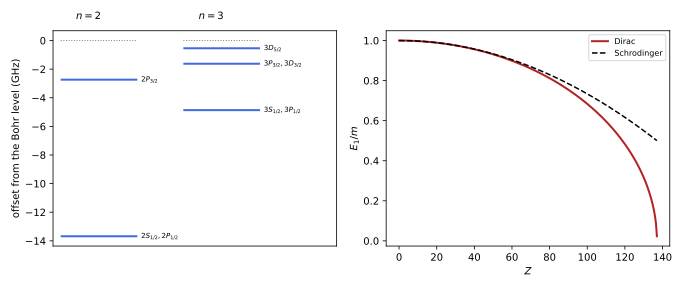
figures/dq-hydrogen.sage.
The theorem below is Dirac’s and Gordon’s 1928 result, in the form of Eides et al. (2001, eqs. (4)-(5)). It contains the whole fine structure of hydrogen.
Theorem 4 (The Dirac energy levels) The bound states of H = \vec\alpha\cdot\vec p + \beta m - Z\alpha/r with Z\alpha < 1 have energies E_{n_r\kappa} = m\Big[1 + \frac{(Z\alpha)^2}{(n_r + \gamma_\kappa)^2}\Big]^{-1/2}, \qquad \gamma_\kappa = \sqrt{\kappa^2 - (Z\alpha)^2} , \tag{23} with n_r = 0, 1, 2, \dots for \kappa > 0 and n_r = 1, 2, \dots for \kappa < 0 (in the convention K = \beta(\vec\Sigma\cdot\vec L + 1) of Definition 11, the nodeless states n_r = 0 exist only for \kappa > 0). With the principal quantum number n = n_r + |\kappa| and j = |\kappa| - \frac12, E_{nj} = m\,f(n, j), \qquad f(n, j) = \Big[1 + \frac{(Z\alpha)^2}{\big(n - j - \frac12 + \sqrt{(j + \frac12)^2 - (Z\alpha)^2}\big)^2}\Big]^{-1/2} , \tag{24} which depends on n and j only Eides et al. (2001, eqs. (4)-(5)).
Proof sketch. At large r, G, F \sim e^{-\lambda r} with \lambda = \sqrt{m^2 - E^2}, and at the origin G, F \sim r^{\gamma_\kappa} (Exercise 75). Writing G, F = r^{\gamma_\kappa}e^{-\lambda r} times power series and substituting into Equation 22 gives a two-term recursion, as in the Schrödinger case of Michele Cini and Rotondi (2023, sec. 11.2, eqs. (11.10)-(11.13)); unless the series terminate they grow like e^{2\lambda r}. They terminate after n_r terms exactly when \frac{Z\alpha E}{\lambda} = n_r + \gamma_\kappa, and solving for E gives Equation 23. For n_r = 0 the two equations at the top order are compatible only if \kappa > \gamma_\kappa > 0 (Exercise 78).
Veriphy. Pending.
Lean. Pending.
Sage. Pending.
For the ground state the formula reduces to the value found in Example 62. The first example evaluates it for hydrogen and compares with the Bohr energy.
Example 64 (The ground state energy) For n = 1, j = \frac12: E = m\sqrt{1 - (Z\alpha)^2} = m - \frac{m(Z\alpha)^2}{2} - \frac{m(Z\alpha)^4}{8} - \dots. For hydrogen with an infinitely heavy nucleus the binding energy is 13.605\,874 eV, larger than the Bohr value m\alpha^2/2 = 13.605\,693 eV by m\alpha^4/8 = 0.181 meV, a frequency of 43.8 GHz.
Veriphy. Pending.
Lean. Pending.
Sage. Pending.
The energies depend on |\kappa| and n_r only, not on the sign of \kappa. The second example draws the consequence for n = 2, the degeneracy that the Lamb shift lifts.
Example 65 (Degeneracy of 2S_{1/2} and 2P_{1/2}) For n = 2: \kappa = 1, n_r = 1 is 2S_{1/2}; \kappa = -1, n_r = 1 is 2P_{1/2}; \kappa = 2, n_r = 0 is 2P_{3/2}. The first two have \gamma_{\pm1} equal and the same n_r, so they are exactly degenerate, although they have opposite parity and different radial functions. In general all levels with the same n and j coincide, the remnant of the SO(4) symmetry of the Schrödinger problem (Proposition 7 of Quantum mechanics).
Veriphy. Pending.
Lean. Pending.
Sage. Pending.
The formula fails when Z\alpha reaches one, where \gamma_{\pm1} becomes imaginary. The third example describes what happens there. It is the point where the one-particle picture begins to fail.
Example 66 (The limit Z\alpha \to 1) As Z \to 1/\alpha \approx 137, E_{1S} = m\gamma_1 \to 0, with an infinite slope (right panel of Figure 9), and for Z\alpha > 1 the point-nucleus problem has no ground state (Exercise 75). For a nucleus of finite size the 1S level continues to fall and reaches the negative continuum E = -m at a larger, supercritical charge, where the bound state merges with the Dirac sea and positrons can be emitted spontaneously Calogeracos and Dombey (1999, sec. I.A and II.B).
Veriphy. Pending.
Lean. Pending.
Sage. Pending.
The states with the largest j for a given n have no radial nodes. The fourth example finds their energies in closed form.
Example 67 (Circular states) For n_r = 0, \kappa = n (j = n - \frac12, l = n - 1): E = m[1 + (Z\alpha)^2/\gamma_n^2]^{-1/2} = m\gamma_n/\sqrt{\gamma_n^2 + (Z\alpha)^2} = \frac mn\sqrt{n^2 - (Z\alpha)^2}. These are the relativistic versions of the circular Bohr orbits, with radial functions G \propto r^{\gamma_n}e^{-mZ\alpha r/n} like the ground state.
Veriphy. Pending.
Lean. Pending.
Sage. Pending.
The first exercise expands the exact formula. It recovers the Bohr levels and the fine structure of Example 54. The computation is a double Taylor expansion in Z\alpha.
Exercise 76 (Expanding the levels) Expand Equation 24 to order (Z\alpha)^4 and show E_{nj} = m - \frac{m(Z\alpha)^2}{2n^2} - \frac{m(Z\alpha)^4}{2n^4}\big(\frac{n}{j + \frac12} - \frac34\big) + O((Z\alpha)^6).
With k = j + \frac12 and a = Z\alpha: \sqrt{k^2 - a^2} = k - \frac{a^2}{2k} + \dots, so the denominator is n - \frac{a^2}{2k} and \frac{a^2}{(n - a^2/2k)^2} = \frac{a^2}{n^2} + \frac{a^4}{n^3k} + \dots. Then (1 + x)^{-1/2} = 1 - \frac x2 + \frac{3x^2}{8} with x = \frac{a^2}{n^2} + \frac{a^4}{n^3k} gives 1 - \frac{a^2}{2n^2} - \frac{a^4}{2n^3k} + \frac{3a^4}{8n^4}, which is the claim.
Veriphy. Pending.
Lean. Pending.
Sage. Pending.
The next order of the expansion is also known in closed form. The second exercise computes it with Sage and compares with Eides et al. (2001, eq. (5)).
Exercise 77 (The next order) With Sage, expand f(n, j) to order (Z\alpha)^6 and write the coefficient of (Z\alpha)^6 in terms of n and k = j + \frac12.
The coefficient is -\frac{1}{8n^3k^3} - \frac{3}{8n^4k^2} + \frac{3}{4n^5k} - \frac{5}{16n^6}, the third term of the series in Eides et al. (2001, eq. (5)):
a, n, k = var("a n k", domain="positive")
f = (1 + a^2 / (n - k + sqrt(k^2 - a^2))^2)^(-1/2)
ser = taylor(f, a, 0, 6)
print("order a^2:", ser.coefficient(a, 2), "; order a^4:", ser.coefficient(a, 4).simplify_full())
c6 = ser.coefficient(a, 6).simplify_full()
print("order a^6:", c6.expand())
print("= -1/(8 n^3 k^3) - 3/(8 n^4 k^2) + 3/(4 n^5 k) - 5/(16 n^6):", bool((c6 - (-1 / (8 * n^3 * k^3) - 3 / (8 * n^4 * k^2) + 3 / (4 * n^5 * k) - 5 / (16 * n^6))).simplify_full() == 0))Output:
order a^2: -1/2/n^2 ; order a^4: 1/8*(3*k - 4*n)/(k*n^4)
order a^6: -5/16/n^6 + 3/4/(k*n^5) - 3/8/(k^2*n^4) - 1/8/(k^3*n^3)
= -1/(8 n^3 k^3) - 3/(8 n^4 k^2) + 3/(4 n^5 k) - 5/(16 n^6): TrueVeriphy. Pending.
Lean. Pending.
Sage. Pending.
The rule that n_r = 0 requires \kappa > 0 removes one state per j at the bottom of each series. The third exercise proves it.
Exercise 78 (No node, positive \kappa) For n_r = 0, G = Ar^\gamma e^{-\lambda r} and F = Br^\gamma e^{-\lambda r} exactly. Substitute into Equation 22 with V = -Z\alpha/r and show that the constant terms give B = \frac{m - E}{\lambda}A = \frac{\lambda}{E + m}A, and the 1/r terms give (\gamma - \kappa)A = -Z\alpha B. Deduce \kappa > 0.
The second equation gives at order r^{\gamma}e^{-\lambda r}: -\lambda B = (E - m)A, and at order r^{\gamma - 1}: (\gamma + \kappa)B = Z\alpha A; the first gives -\lambda A = -(E + m)B and (\gamma - \kappa)A = -Z\alpha B. Since E < m, B/A = (m - E)/\lambda > 0, so \gamma - \kappa = -Z\alpha B/A < 0, i.e. \kappa > \gamma > 0. Then Z\alpha E/\lambda = \gamma follows by combining the equations, the case n_r = 0 of the quantisation condition.
Veriphy. Pending.
Lean. Pending.
Sage. Pending.
For heavy hydrogen-like ions the relativistic effects are large. The fourth exercise evaluates the ground-state binding of \mathrm{U}^{91+}. The comparison shows how large the relativistic correction becomes for the heaviest ions.
Exercise 79 (Hydrogen-like uranium) For Z = 92, compute the 1S binding energy m(1 - \sqrt{1 - (Z\alpha)^2}) and compare it with the Schrödinger value m(Z\alpha)^2/2.
Z\alpha = 0.6714, (Z\alpha)^2 = 0.4507, \sqrt{1 - 0.4507} = 0.7411, so the Dirac binding is 0.2589\,m = 132.3 keV, against 0.2254\,m = 115.2 keV from the Schrödinger equation: a relativistic increase of 15\%, consistent with the contraction of the wave function in Figure 8.
The same numbers by computer:
alpha = 1 / 137.035999166; me = 510.99895 # keV
a = 92 * alpha
print("Z alpha = %.4f, (Z alpha)^2 = %.4f, sqrt(1 - (Z alpha)^2) = %.4f" % (a, a^2, sqrt(1 - a^2)))
print("Dirac binding %.2f keV, Schrodinger binding %.2f keV, ratio %.3f" % (me * (1 - sqrt(1 - a^2)), me * a^2 / 2, (1 - sqrt(1 - a^2)) / (a^2 / 2)))Output:
Z alpha = 0.6714, (Z alpha)^2 = 0.4507, sqrt(1 - (Z alpha)^2) = 0.7411
Dirac binding 132.28 keV, Schrodinger binding 115.16 keV, ratio 1.149Veriphy. Pending.
Lean. Pending.
Sage. Pending.
For light atoms the exact spectrum is best read through its expansion. The proposition below states the fine-structure formula and its consequences, which the measured lines test.
Proposition 6 (Fine structure of hydrogen) To order (Z\alpha)^4, E_{nj} = m - \frac{m(Z\alpha)^2}{2n^2} - \frac{m(Z\alpha)^4}{2n^4}\Big(\frac{n}{j + \frac12} - \frac34\Big) , \tag{25} which coincides with the sum of the Foldy-Wouthuysen corrections Equation 18. Each Bohr level n splits into n sublevels j = \frac12, \dots, n - \frac12, ordered with j; neighbouring sublevels are separated by \frac{m(Z\alpha)^4}{2n^3}\big(\frac{1}{j + \frac12} - \frac{1}{j + \frac32}\big), and the total width of the multiplet is \frac{m(Z\alpha)^4}{2n^3}\frac{n - 1}{n}. For a nucleus of mass M the leading corrections are obtained by replacing m by the reduced mass m_r = m/(1 + m/M) in the binding terms Eides et al. (2001, eq. (6)).
Proof. The expansion is Exercise 76; the coincidence with the perturbative result is Exercise 61. The splittings are differences of \frac{m(Z\alpha)^4}{2n^3}\frac{1}{j + 1/2} terms, and the width is the difference between j = \frac12 and j = n - \frac12.
Veriphy. Pending.
Lean. Pending.
Sage. Pending.
The fine structure of n = 2 is a single microwave interval. The first example compares the Dirac value with the best theoretical value, which includes the radiative corrections.
Example 68 (The 2P fine-structure interval) From Equation 24 with the reduced mass, E(2P_{3/2}) - E(2P_{1/2}) = 10\,943.7 MHz (m\alpha^4/32 = 10\,949 MHz to leading order without recoil). The complete theory gives 10\,969.04 MHz Eides et al. (2001, sec. XXXIX.D); the 0.23\% difference is the difference of the Lamb shifts of the two P levels and the recoil corrections beyond the reduced mass. In wavenumbers the interval is 0.365 cm^{-1}, compared with 17 cm^{-1} for the 3P doublet of sodium Svanberg (2022, Table 2.1).
Veriphy. Pending.
Lean. Pending.
Sage. Pending.
The degeneracy of 2S_{1/2} and 2P_{1/2} is the sharpest prediction of the Dirac equation, and it is wrong. The second example gives the measured splitting and the order of magnitude of its quantum-electrodynamic explanation.
Example 69 (The Lamb shift) The 2S_{1/2} level lies above 2P_{1/2} by 1\,057\,845(3) kHz, the classic Lamb shift measured since 1947 (Eides et al. (2001, sec. XXXIX.D, Table XX)). The Dirac equation predicts zero. The electron’s coupling to virtual photons smears its charge over a radius \langle r^2\rangle \approx \frac{2}{m^2\pi}\alpha\ln(Z\alpha)^{-2}, raising the S levels by about \frac{4m(Z\alpha)^4\alpha}{3\pi n^3}\ln(Z\alpha)^{-2} \approx 1330 MHz at n = 2, and vacuum polarisation lowers them by about 30 MHz Eides et al. (2001, sec. V, eqs. (28)-(32)).
Veriphy. Pending.
Lean. Pending.
Sage. Pending.
The 1S-2S transition is the most precisely measured line of hydrogen. The third example compares it with the Dirac prediction, the difference being the Lamb shifts of the two levels.
Example 70 (The 1S-2S interval) Parthey et al. (2011) measured f_{1S\text{-}2S} = 2\,466\,061\,413\,187\,035(10) Hz. The Dirac formula with the reduced mass gives 2\,466\,068.52 GHz, larger by 7.11 GHz. The 1S Lamb shift is 8\,172.876(29) MHz Svanberg (2022, sec. 9.7.4) and the 2S one is close to the classic shift of Example 69, since the P levels shift much less than the S levels. The QED shifts, 8.17 - 1.05 \approx 7.1 GHz, thus account for the difference; the remaining tens of MHz lie in the recoil and nuclear-size corrections that the Dirac equation with the reduced mass does not contain Eides et al. (2001, sec. IV).
Veriphy. Pending.
Lean. Pending.
Sage. Pending.
The red Balmer line H_\alpha is a blend of the fine-structure components of n = 3 \to 2. The fourth example lists them and explains why they were hard to resolve.
Example 71 (The H_\alpha line) The allowed transitions between the n = 3 and n = 2 sublevels give seven components, from Equation 24 with vacuum wavelengths between 656.452 and 656.473 nm, spread over 14.2 GHz (the line is quoted as 656.3 nm in air). The Doppler width of hydrogen at room temperature, about 6000 MHz, blurs them into two humps, and Doppler-free saturation spectroscopy was needed to resolve them and see the Lamb shift directly Svanberg (2022, sec. 9.7.2, Fig. 9.62).
Veriphy. Pending.
Lean. Pending.
Sage. Pending.
The first exercise derives the splittings stated in the proposition. It is a short computation with the second term of Equation 25.
Exercise 80 (Splittings within a multiplet) From Equation 25, compute E_{n, j + 1} - E_{n, j} and the total width of the multiplet n. Evaluate the n = 3 splittings for hydrogen in GHz using m\alpha^4 = 350.4 GHz.
E_{n, j + 1} - E_{n, j} = \frac{m(Z\alpha)^4}{2n^3}\big(\frac{1}{j + 1/2} - \frac{1}{j + 3/2}\big), and the width is \frac{m(Z\alpha)^4}{2n^3}(1 - \frac1n). For n = 3: 3P_{3/2} - 3P_{1/2} is \frac{350.4}{54}(1 - \frac12) = 3.24 GHz and 3D_{5/2} - 3D_{3/2} is \frac{350.4}{54}(\frac12 - \frac13) = 1.08 GHz, as in Figure 9.
Veriphy. Pending.
Lean. Pending.
Sage. Pending.
The levels of hydrogen up to n = 4 can be tabulated from the exact formula. The second exercise does this with Sage and lists the degeneracies.
Exercise 81 (A table of levels) With Sage, tabulate for hydrogen (reduced mass included) the offsets in GHz of all levels n \leq 4 from the Bohr levels, label them nL_j, and group the degenerate ones.
Each n has n distinct values, and the pairs nS_{1/2}-nP_{1/2}, nP_{3/2}-nD_{3/2}, nD_{5/2}-nF_{5/2} coincide:
R = RealField(100)
alpha = R(1) / R("137.035999166"); me = R("510998.95069"); h = R("4.135667696e-15"); Mp = R("1836.15267343")
mr = me / (1 + 1 / Mp)
def f(n, j):
k = R(j) + R(1) / 2
return (1 + alpha^2 / (n - k + sqrt(k^2 - alpha^2))^2)^(-R(1) / 2)
L = "SPDFG"
for n in range(1, 5):
bohr = -mr * alpha^2 / (2 * n^2)
rows = {}
for l in range(n):
for j in ([QQ(1) / 2] if l == 0 else [l - QQ(1) / 2, l + QQ(1) / 2]):
off = (mr * (f(n, j) - 1) - bohr) / h / 1e9
rows.setdefault(j, []).append("%d%s_%s" % (n, L[l], j))
print("n = %d:" % n, "; ".join("%s: %.4f GHz" % (", ".join(v), float((mr * (f(n, j) - 1) + mr * alpha^2 / (2 * n^2)) / h / 1e9)) for j, v in sorted(rows.items())))Output:
n = 1: 1S_1/2: -43.7745 GHz
n = 2: 2S_1/2, 2P_1/2: -13.6795 GHz; 2P_3/2: -2.7358 GHz
n = 3: 3S_1/2, 3P_1/2: -4.8638 GHz; 3P_3/2, 3D_3/2: -1.6212 GHz; 3D_5/2: -0.5404 GHz
n = 4: 4S_1/2, 4P_1/2: -2.2229 GHz; 4P_3/2, 4D_3/2: -0.8550 GHz; 4D_5/2, 4F_5/2: -0.3990 GHz; 4F_7/2: -0.1710 GHzVeriphy. Pending.
Lean. Pending.
Sage. Pending.
Alkali atoms have a hydrogen-like valence electron, but their fine structure is much larger. The third exercise estimates the effective nuclear charge it reveals, from the data of Svanberg (2022, Table 2.1).
Exercise 82 (The fine structure of sodium) For a hydrogen-like level the P splitting is \Delta E = \frac{R_\infty\alpha^2Z^4}{n^3l(l + 1)} with R_\infty\alpha^2 = 5.84 cm^{-1}. Check this for the 2P level of hydrogen, and find the effective Z that reproduces the 17 cm^{-1} splitting of the sodium 3P level. Why is it much larger than 1?
For n = 2, l = 1: 5.84/(8 \cdot 2) = 0.365 cm^{-1}, as in Example 68. For sodium, Z_{\mathrm{eff}}^4 = 17 \cdot 27 \cdot 2/5.84 = 157, so Z_{\mathrm{eff}} \approx 3.5. The spin-orbit term weights \langle r^{-3}\rangle, dominated by the region near the nucleus where the 3p electron penetrates the core and sees much more than one unit of charge, the same penetration that produces the quantum defect Svanberg (2022, sec. 2.2).
The same numbers by computer:
Rinf = 109737.31568; alpha = 1 / 137.035999166
Ra2 = Rinf * alpha^2
print("R alpha^2 = %.3f cm^-1" % Ra2)
print("hydrogen 2P splitting: %.4f cm^-1 = %.2f GHz" % (Ra2 / (8 * 2), Ra2 / 16 * 29.9792458))
Zeff4 = 17 * 27 * 2 / Ra2
print("sodium 3P: Z_eff^4 = %.1f, Z_eff = %.2f" % (Zeff4, Zeff4^(1/4)))Output:
R alpha^2 = 5.844 cm^-1
hydrogen 2P splitting: 0.3652 cm^-1 = 10.95 GHz
sodium 3P: Z_eff^4 = 157.1, Z_eff = 3.54Veriphy. Pending.
Lean. Pending.
Sage. Pending.
The estimate of the Lamb shift in Example 69 is a one-line formula. The fourth exercise evaluates it and its vacuum-polarisation companion.
Exercise 83 (Estimating the Lamb shift) Evaluate \Delta E = \frac{4m(Z\alpha)^4\alpha}{3\pi n^3}\ln(Z\alpha)^{-2} and \Delta E_{\mathrm{VP}} = -\frac{4m(Z\alpha)^4\alpha}{15\pi n^3} for n = 2, Z = 1, in MHz, and compare their sum with the measured 1057.8 MHz.
m\alpha^5 = 1.057 \times 10^{-5} eV = 2.557 GHz and \ln\alpha^{-2} = 9.84, so \Delta E = \frac{4 \cdot 2557 \cdot 9.84}{3\pi \cdot 8} MHz = 1335 MHz and \Delta E_{\mathrm{VP}} = -\frac{4 \cdot 2557}{15\pi \cdot 8} MHz = -27 MHz. Their sum, 1308 MHz, is 24\% above the measured value; the crude estimate gets the logarithm right but not the constant under it Eides et al. (2001, sec. V).
The same numbers by computer:
alpha = 1 / 137.035999166; me = 510998.95069; h = 4.135667696e-15 # eV, eV s
ma5 = me * alpha^5 / h / 1e6 # m alpha^5 in MHz
dE = 4 * ma5 * log(alpha^-2) / (3 * pi * 8); dVP = -4 * ma5 / (15 * pi * 8)
print("m alpha^5 = %.1f MHz, ln(alpha^-2) = %.3f" % (ma5, log(alpha^-2)))
print("charge-radius estimate %.0f MHz, vacuum polarisation %.1f MHz, sum %.0f MHz, measured 1057.8 MHz (ratio %.2f)" % (dE.n(), dVP.n(), (dE + dVP).n(), ((dE + dVP) / 1057.845).n()))Output:
m alpha^5 = 2556.8 MHz, ln(alpha^-2) = 9.840
charge-radius estimate 1335 MHz, vacuum polarisation -27.1 MHz, sum 1308 MHz, measured 1057.8 MHz (ratio 1.24)Veriphy. Pending.
Lean. Pending.
Sage. Pending.
Exercises
These exercises combine the separation of variables with the exact spectrum. The first is the relativistic virial theorem for the ground state, a Dirac version of Michele Cini and Rotondi (2023, sec. 11.3, Problem 3).
Exercise 84 (A relativistic virial theorem) For the Dirac ground state, compute with Sage \langle\beta\rangle = \int(G^2 - F^2)/\int(G^2 + F^2) and \langle Z\alpha/r\rangle, and show that E = m\langle\beta\rangle and \langle V\rangle = -mZ\alpha\cdot Z\alpha/\gamma. What do these become for Z\alpha \to 0?
\langle\beta\rangle = \frac{1 - f^2}{1 + f^2} with f = \frac{1 - \gamma}{Z\alpha}, which simplifies to \gamma = E/m; and \langle1/r\rangle = \frac{2\lambda}{2\gamma} = \frac{mZ\alpha}{\gamma}. For small Z\alpha, \langle V\rangle \to -m(Z\alpha)^2 = 2E_{\mathrm{Bohr}}, the non-relativistic virial theorem of Michele Cini and Rotondi (2023, sec. 11.3, Problem 3):
a = var("a", domain="positive"); assume(a < 1)
gm = sqrt(1 - a^2); f = (1 - gm) / a
print("<beta> =", ((1 - f^2) / (1 + f^2)).simplify_full(), "; equals gamma:", bool(((1 - f^2) / (1 + f^2) - gm).simplify_full() == 0))
r, lam, g = var("r lam g", domain="positive")
Mom = lambda s_: gamma(s_ + 1) / (2 * lam)^(s_ + 1) # int_0^oo r^s e^{-2 lambda r} dr
inv = (Mom(2 * g - 1) / Mom(2 * g)).simplify_full()
print("<1/r> =", inv, "; equals lambda/gamma:", bool((inv - lam / g).simplify_full() == 0))
m = var("m", domain="positive")
V = -a * (m * a / gm)
print("<V> =", V, "; to order (Z alpha)^4:", taylor(V, a, 0, 4))Output:
<beta> = -(a^2 + sqrt(-a^2 + 1) - 1)/(sqrt(-a^2 + 1) - 1) ; equals gamma: True
<1/r> = lam/g ; equals lambda/gamma: True
<V> = -a^2*m/sqrt(-a^2 + 1) ; to order (Z alpha)^4: -1/2*a^4*m - a^2*mVeriphy. Pending.
Lean. Pending.
Sage. Pending.
The fine structure grows like Z^4, so hydrogen-like helium tests it at a larger scale. The second exercise compares the Dirac value with the theoretical value quoted by Eides et al. (2001).
Exercise 85 (The 2P interval of \mathrm{He}^+) With Sage, compute E(2P_{3/2}) - E(2P_{1/2}) for Z = 2 with the reduced mass of the ^4He nucleus (M/m = 7294.30), and compare with 175\,593.50 MHz Eides et al. (2001, sec. XXXIX.G). Compare the relative difference with that for hydrogen.
The Dirac value is 175\,187.8 MHz, below the complete theory by 405.7 MHz, a relative difference of 0.23\%, the same as for hydrogen in Example 68: the leading radiative corrections to the P levels scale with Z^4 like the fine structure itself:
R = RealField(100)
alpha = R(1) / R("137.035999166"); me = R("510998.95069"); h = R("4.135667696e-15")
def f(n, j, Z):
k = R(j) + R(1) / 2
return (1 + (Z * alpha)^2 / (n - k + sqrt(k^2 - (Z * alpha)^2))^2)^(-R(1) / 2)
for name, Z, M, full in [("H", 1, R("1836.15267343"), R("10969.04")), ("He+", 2, R("7294.30"), R("175593.50"))]:
mr = me / (1 + 1 / M)
d = mr * (f(2, 3/2, Z) - f(2, 1/2, Z)) / h / 1e6
print("%s: Dirac %.1f MHz, complete theory %.2f MHz, difference %.1f MHz = %.3f%%" % (name, d, full, full - d, 100 * (full - d) / full))Output:
H: Dirac 10943.7 MHz, complete theory 10969.04 MHz, difference 25.4 MHz = 0.231%
He+: Dirac 175187.8 MHz, complete theory 175593.50 MHz, difference 405.7 MHz = 0.231%Veriphy. Pending.
Lean. Pending.
Sage. Pending.
The radial equations hold for any central potential. The third exercise applies them to a potential that is the time component of a four-vector and contrasts it with a scalar potential, which enters as a position-dependent mass.
Exercise 86 (Vector against scalar potentials) Replace m by m + S(r) in the Dirac Hamiltonian (a scalar potential) and write the radial equations. Show that for S = -V the combination E - V - m - S in the second equation becomes E - m, and explain why a scalar potential binds particles and antiparticles alike while a vector potential binds only one of them.
With m \to m + S, Equation 22 becomes G' - \frac\kappa rG = -(E - V + m + S)F and F' + \frac\kappa rF = (E - V - m - S)G. For S = -V the second coefficient is E - m, independent of r. Charge conjugation (Proposition 7) maps V \to -V but leaves the scalar S, which multiplies \beta like the mass, unchanged: an attractive V for electrons is repulsive for positrons, while an attractive scalar potential attracts both.
Veriphy. Pending.
Lean. Pending.
Sage. Pending.
Charge conjugation, Weyl and Majorana fermions
The Dirac equation has three discrete symmetries beyond the continuous Lorentz group: charge conjugation, which exchanges particles and antiparticles, space reflection and time reversal. This part builds the three operations on spinors, shows what each does to charge, momentum, spin and helicity, and then uses charge conjugation and chirality to define the two kinds of reduced fermion, the Weyl fermion of one chirality and the Majorana fermion equal to its own conjugate, following Pal (2011) and Zhelnorovich (2019, sec. 5.7). The algebra of the charge-conjugation matrix in every dimension is in Clifford algebras; here the dimension is four and the physics is the subject.
Charge conjugation
The Dirac equation for a particle of charge q and the equation for charge -q are related by complex conjugation and a matrix. The figure summarises the effect of the three discrete operations on the observables of a particle.
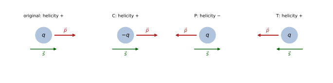
figures/dq-discrete.sage.
The definition below uses the charge-conjugation matrix of Definition 4 of Spinors and the Dirac operator in the form found for four dimensions in Example 18 of Spinors and the Dirac operator.
Definition 13 (Charge-conjugate spinor) With C = i\gamma^2\gamma^0, which satisfies C\gamma^\mu C^{-1} = -(\gamma^\mu)^{\mathsf T} and C^{\mathsf T} = -C, the charge conjugate of a spinor \psi is \psi^c = C\bar\psi^{\mathsf T} = i\gamma^2\psi^* . \tag{26} In the Weyl representation, with \psi = (\psi_L, \psi_R), \psi^c = (i\sigma_2\psi_R^*, -i\sigma_2\psi_L^*). Up to a phase this is the Lorentz-covariant conjugate \hat\psi = \gamma^0C\psi^* of Pal (2011, sec. 3, eqs. (3.16), (3.26)).
Veriphy. Pending.
Lean. Pending.
Sage. Pending.
The block form of the conjugate shows how it acts on chirality. The first example reads it off and connects it with the conjugation of Weyl spinors in Proposition 3 of Spinors and the Dirac operator.
Example 72 (Conjugation and chirality) i\gamma^2 = \begin{pmatrix} 0 & i\sigma_2 \\ -i\sigma_2 & 0\end{pmatrix}, so the left-handed (upper) slot of \psi^c is filled by i\sigma_2\psi_R^*, built from the right-handed part of \psi. The complex conjugate of a right-handed spinor, multiplied by i\sigma_2 = \epsilon, transforms as a left-handed one: this is Proposition 3 of Spinors and the Dirac operator in four dimensions. Accordingly P_L\psi^c = (P_R\psi)^c: the conjugate of the right-handed part is left-handed Pal (2011, eq. (7.5)).
Veriphy. Pending.
Lean. Pending.
Sage. Pending.
Conjugating twice gives back the spinor, so the operation is an involution. The second example verifies this and records the useful identity behind it.
Example 73 (Conjugating twice) (\psi^c)^c = i\gamma^2(i\gamma^2\psi^*)^* = i\gamma^2(-i)(\gamma^2)^*\psi. In the Weyl representation \gamma^2 is imaginary, (\gamma^2)^* = -\gamma^2, so (\psi^c)^c = i(-i)(-1)(\gamma^2)^2\psi = -(\gamma^2)^2\psi = \psi, using (\gamma^2)^2 = -1. The same holds in the Dirac representation, where \gamma^2 is the same matrix.
Veriphy. Pending.
Lean. Pending.
Sage. Pending.
Bilinears of commuting spinors behave in a definite way under conjugation. The third example computes two of them; the signs change again when the spinors become anticommuting fields.
Example 74 (Bilinears of the conjugate) For a commuting spinor, \overline{\psi^c}\psi^c = -\bar\psi\psi and \overline{\psi^c}\gamma^\mu\psi^c = \bar\psi\gamma^\mu\psi: the density of the conjugate is the same positive \psi^\dagger\psi (Exercise 87). For anticommuting field operators each relation acquires an extra sign from reordering, and the current changes sign: only in the quantised theory does charge conjugation reverse the current, which is one more reason the field is needed (Section 1.6).
Veriphy. Pending.
Lean. Pending.
Sage. Pending.
The defining properties of C are a finite set of matrix identities. The first exercise checks them by computer, with the involution and the bilinear identities.
Exercise 87 (Properties of C by computer) With Sage, in the Weyl representation, verify C\gamma^\mu C^{-1} = -(\gamma^\mu)^{\mathsf T}, C^{\mathsf T} = -C, C^\dagger = C^{-1}, (\psi^c)^c = \psi, \overline{\psi^c}\psi^c = -\bar\psi\psi and \overline{\psi^c}\gamma^\mu\psi^c = \bar\psi\gamma^\mu\psi for a spinor with symbolic components.
All six identities hold; the last two are identities of commuting polynomials:
s = [matrix(SR, [[0, 1], [1, 0]]), matrix(SR, [[0, -I], [I, 0]]), matrix(SR, [[1, 0], [0, -1]])]
Z = zero_matrix(SR, 2); one = identity_matrix(SR, 2)
blk = lambda a, b, c, d: block_matrix([[a, b], [c, d]], subdivide=False)
g = [blk(Z, one, one, Z)] + [blk(Z, sk, -sk, Z) for sk in s] # Weyl representation
g5 = I * g[0] * g[1] * g[2] * g[3]; I4 = identity_matrix(SR, 4)
C = I * g[2] * g[0]
print("C gamma^mu C^-1 = -(gamma^mu)^T:", all(C * g[k] * C.inverse() == -g[k].transpose() for k in range(4)), "; C^T = -C:", C.transpose() == -C, "; C^dag = C^-1:", C.conjugate_transpose() == C.inverse())
a = var("a0 a1 a2 a3", domain="real"); b = var("b0 b1 b2 b3", domain="real")
psi = vector(SR, [a[i] + I * b[i] for i in range(4)])
cc = lambda f: I * g[2] * f.conjugate()
print("psi^c = C bar(psi)^T:", (cc(psi) - C * (psi.conjugate() * g[0])).simplify_full() == 0)
print("(psi^c)^c = psi:", (cc(cc(psi)) - psi).simplify_full() == 0)
bar = lambda f, M: (f.conjugate() * g[0] * M * f).expand()
print("bar(psi^c) psi^c = -bar(psi) psi:", bool((bar(cc(psi), I4) + bar(psi, I4)).simplify_full() == 0))
print("bar(psi^c) gamma^mu psi^c = bar(psi) gamma^mu psi:", all(bool((bar(cc(psi), g[k]) - bar(psi, g[k])).simplify_full() == 0) for k in range(4)))Output:
C gamma^mu C^-1 = -(gamma^mu)^T: True ; C^T = -C: True ; C^dag = C^-1: True
psi^c = C bar(psi)^T: True
(psi^c)^c = psi: True
bar(psi^c) psi^c = -bar(psi) psi: True
bar(psi^c) gamma^mu psi^c = bar(psi) gamma^mu psi: TrueVeriphy. Pending.
Lean. Pending.
Sage. Pending.
The conjugate of a chiral spinor has the opposite chirality. The second exercise proves this without matrices, from the anticommutation of \gamma_5.
Exercise 88 (Conjugation exchanges chiralities) Show that \gamma^2\gamma_5^* = -\gamma_5\gamma^2 (with \gamma_5 real in the Weyl representation) and deduce P_L\psi^c = (P_R\psi)^c. Why does this not contradict the statement of Pal (2011, sec. 7) that charge conjugation does not change chirality?
\gamma_5 is real and anticommutes with \gamma^2, so \gamma^2\gamma_5^* = \gamma^2\gamma_5 = -\gamma_5\gamma^2. Then (P_R\psi)^c = i\gamma^2P_R\psi^* = P_Li\gamma^2\psi^* = P_L\psi^c. The operation \psi \to \psi^c on c-number spinors is Pal’s covariant conjugation, which does exchange chiralities; the charge-conjugation operator of the quantum field acts linearly on field operators and maps a left-handed field to a left-handed field with opposite charges Pal (2011, eqs. (7.1)-(7.5)). The two coincide on unconstrained Dirac fields but not on chiral ones.
Veriphy. Pending.
Lean. Pending.
Sage. Pending.
The conjugation is defined by a formula in one representation, and one may ask whether it depends on the choice. The third exercise answers for the Dirac representation.
Exercise 89 (The Dirac representation) The change of basis U of Exercise 41 of Classical field theory is real and leaves \gamma^2 unchanged. Show that \psi^c = i\gamma^2\psi^* holds in the Dirac representation with the same matrix, and write it in 2 \times 2 blocks.
If \psi_D = U\psi_W with U real, then \psi_D^* = U\psi_W^* and (\psi^c)_D = U i\gamma^2_W\psi_W^* = (Ui\gamma^2_WU^{-1})\psi_D^* = i\gamma^2_D\psi_D^*, and \gamma^2_D = U\gamma^2_WU^{\mathsf T} = \gamma^2_W because \gamma^k is the same in both representations. In blocks, i\gamma^2 = \begin{pmatrix} 0 & i\sigma_2 \\ -i\sigma_2 & 0\end{pmatrix}, so \psi^c = (i\sigma_2\chi^*, -i\sigma_2\varphi^*) for \psi = (\varphi, \chi): the conjugate of a large component becomes a small component, as it must, since conjugation exchanges positive and negative energies.
Veriphy. Pending.
Lean. Pending.
Sage. Pending.
The physical content of the conjugation is that it reverses the charge. The proposition below states this and its consequences for plane waves and for spectra.
Proposition 7 (Charge conjugation reverses the charge) If \psi solves (i\gamma^\mu(\partial_\mu + iqA_\mu) - m)\psi = 0, then \psi^c solves (i\gamma^\mu(\partial_\mu - iqA_\mu) - m)\psi^c = 0. Consequently, for the Hamiltonians H_{\pm q} of Equation 12 with static potentials, H_q\psi = E\psi implies H_{-q}\psi^c = -E\psi^c, so the spectrum of H_{-q} is the negative of that of H_q; and (u^s(p)e^{-ip\cdot x})^c = v^s(p)e^{ip\cdot x} with \eta^s = i\sigma_2\xi^{s*} Pal (2011, eqs. (3.23)-(3.24)).
Proof. Conjugating the equation gives (-i\gamma^{\mu*}(\partial_\mu - iqA_\mu) - m)\psi^* = 0. Multiplying by i\gamma^2 and using (i\gamma^2)\gamma^{\mu*}(i\gamma^2)^{-1} = -\gamma^\mu (true for all four \mu in the Weyl representation, where only \gamma^2 is imaginary and it anticommutes with the other three) gives (i\gamma^\mu(\partial_\mu - iqA_\mu) - m)\psi^c = 0. A stationary state \psi e^{-iEt} maps to \psi^ce^{+iEt}, an eigenstate of H_{-q} with energy -E. For the spinors, (\sqrt{p\cdot\sigma})^* = \sigma_2\sqrt{p\cdot\bar\sigma}\sigma_2 because \sigma_2\vec\sigma^*\sigma_2 = -\vec\sigma, and inserting this in i\gamma^2u^* gives Equation 5 for v with \eta = i\sigma_2\xi^*.
Veriphy. Pending.
Lean. Pending.
Sage. Pending.
At rest the correspondence between u and v is explicit. The first example identifies the conjugate of a spin-up particle, which is the negative-energy solution that the hole theory of Definition 19 reinterprets as an antiparticle.
Example 75 (Particles and antiparticles at rest) For \xi = (1, 0), \eta = i\sigma_2\xi^* = (0, -1), so (u^\uparrow e^{-imt})^c = \sqrt m(0, -1, 0, 1)e^{imt}. The label \eta of the negative-energy solution is the spin-flipped \xi: a negative-energy electron of spin down corresponds, as a hole, to a positron of spin up. This is why the v^s are labelled by \eta^s = i\sigma_2\xi^{s*} in practice.
Veriphy. Pending.
Lean. Pending.
Sage. Pending.
The spectrum of the Coulomb problem for an electron determines that for a positron. The second example uses the proposition to see that the positron levels are the negatives of the electron ones in the reversed potential.
Example 76 (Positrons in a Coulomb field) For an electron, H_{-e} has the bound states of Theorem 4 below m. The positron Hamiltonian H_{+e} in the same field has, by the proposition, the spectrum -\operatorname{spec}(H_{-e}): bound states just above -m in its negative continuum, which correspond to no bound positron. A nucleus repels positrons, and the “bound states” above -m are holes of the electron problem; they matter when Z is large enough for the electron 1S level to approach -m (Example 66).
Veriphy. Pending.
Lean. Pending.
Sage. Pending.
The positronium atom and antihydrogen are the testing grounds of charge conjugation. The third example states the prediction for antihydrogen, which Parthey et al. (2011) mention as a test of CPT.
Example 77 (Antihydrogen) Replacing every particle by its antiparticle reverses every charge, so antihydrogen (a positron bound to an antiproton) has the potential q\Phi = -\alpha/r for the positron, the same as hydrogen’s for the electron. Its Dirac spectrum is therefore identical, and in particular its 1S-2S frequency must equal that of hydrogen if the combined symmetry CPT holds, a comparison proposed as a stringent test Parthey et al. (2011).
Veriphy. Pending.
Lean. Pending.
Sage. Pending.
The first exercise fills in the key step of the proof. It requires the reality properties of the Weyl matrices.
Exercise 90 (The conjugate equation) Show that in the Weyl representation \gamma^0, \gamma^1, \gamma^3 are real and \gamma^2 is imaginary, and deduce (i\gamma^2)\gamma^{\mu*}(i\gamma^2)^{-1} = -\gamma^\mu for all \mu. Complete the proof that \psi^c solves the equation with charge -q.
\sigma_1, \sigma_3 are real and \sigma_2 imaginary, so in \gamma^k = \begin{pmatrix} 0 & \sigma_k \\ -\sigma_k & 0\end{pmatrix} only \gamma^2 is imaginary. For \mu \neq 2: \gamma^2\gamma^\mu(\gamma^2)^{-1} = -\gamma^\mu by anticommutation. For \mu = 2: \gamma^2(-\gamma^2)(\gamma^2)^{-1} = -\gamma^2. Then i\gamma^2[-i\gamma^{\mu*}(\partial_\mu - iqA_\mu) - m]\psi^* = [i\gamma^\mu(\partial_\mu - iqA_\mu) - m]i\gamma^2\psi^*, using (i\gamma^2)(-i\gamma^{\mu*}) = -i(i\gamma^2\gamma^{\mu*}) = i\gamma^\mu(i\gamma^2).
Veriphy. Pending.
Lean. Pending.
Sage. Pending.
The conjugation maps u to v, and it is instructive to see this on the explicit spinors. The second exercise does so with Sage for a moving particle.
Exercise 91 (From u to v by computer) With Sage, for m = 1 and \vec p = (0, 0, \sinh w), compute i\gamma^2(u^s)^* for both spins and compare with v^s of Equation 5 with \eta^s = i\sigma_2\xi^{s*}.
For real w the spinors are real and i\gamma^2 acts as a real matrix; the result is v^s with the stated \eta^s:
s = [matrix(SR, [[0, 1], [1, 0]]), matrix(SR, [[0, -I], [I, 0]]), matrix(SR, [[1, 0], [0, -1]])]
Z = zero_matrix(SR, 2); one = identity_matrix(SR, 2)
blk = lambda a, b, c, d: block_matrix([[a, b], [c, d]], subdivide=False)
g = [blk(Z, one, one, Z)] + [blk(Z, sk, -sk, Z) for sk in s] # Weyl representation
g5 = I * g[0] * g[1] * g[2] * g[3]; I4 = identity_matrix(SR, 4)
w = var("w", domain="real")
ps = [exp(-w), exp(w)] # p.sigma = diag(E - p, E + p) = diag(e^-w, e^w)
sq = diagonal_matrix(SR, [exp(-w / 2), exp(w / 2)]); sqb = diagonal_matrix(SR, [exp(w / 2), exp(-w / 2)]) # sqrt(p.sigma), sqrt(p.sigma-bar)
for xi in (vector(SR, [1, 0]), vector(SR, [0, 1])):
u = vector(SR, list(sq * xi) + list(sqb * xi))
eta = I * s[1] * xi.conjugate()
v = vector(SR, list(sq * eta) + list(-sqb * eta))
uc = I * g[2] * u.conjugate()
print("xi =", xi, ": eta = i sigma_2 xi^* =", eta, "; i gamma^2 u^* =", [c.simplify_full() for c in uc], "; equals v:", (uc - v).simplify_full() == 0)Output:
xi = (1, 0) : eta = i sigma_2 xi^* = (0, -1) ; i gamma^2 u^* = [0, -e^(1/2*w), 0, e^(-1/2*w)] ; equals v: True
xi = (0, 1) : eta = i sigma_2 xi^* = (1, 0) ; i gamma^2 u^* = [e^(-1/2*w), 0, -e^(1/2*w), 0] ; equals v: TrueVeriphy. Pending.
Lean. Pending.
Sage. Pending.
The relation between the spectra of H_q and H_{-q} uses that conjugation is antilinear. The third exercise makes the argument precise.
Exercise 92 (Spectra of opposite charges) Let \mathcal{C}\psi = i\gamma^2\psi^*. Show that \mathcal{C} is antilinear, preserves \psi^\dagger\psi, and satisfies \mathcal{C}H_q\mathcal{C}^{-1} = -H_{-q} for static potentials. Deduce the statement about spectra, including the continuous spectra (-\infty, -m] \cup [m, \infty).
\mathcal{C}(a\psi) = a^*\mathcal{C}\psi; (i\gamma^2\psi^*)^\dagger(i\gamma^2\psi^*) = \psi^{\mathsf T}(i\gamma^2)^\dagger(i\gamma^2)\psi^* = \psi^\dagger\psi since i\gamma^2 is unitary. From the proof, \mathcal{C} maps solutions of i\partial_t\psi = H_q\psi to solutions of i\partial_t\psi = H_{-q}\psi, and complex conjugation reverses i\partial_t, so \mathcal{C}H_q = -H_{-q}\mathcal{C}. An eigenvector of H_q with eigenvalue E maps to one of H_{-q} with -E, and generalised eigenvectors likewise, so the continuous spectrum (-\infty, -m] \cup [m, \infty), symmetric already, is preserved.
Veriphy. Pending.
Lean. Pending.
Sage. Pending.
Space reflection was found in Example 10 as the improper Lorentz transformation with S = \gamma^0. The definition below makes it an operation on solutions.
Definition 14 (Parity transformation) The parity transformation of a spinor field is \psi_P(t, \vec x) = \eta_P\gamma^0\psi(t, -\vec x) with a phase \eta_P. If \psi solves the Dirac equation in the potential (\Phi, \vec A)(t, \vec x), then \psi_P solves it in (\Phi, -\vec A)(t, -\vec x); in particular the free equation and the Coulomb problem are parity invariant.
Veriphy. Pending.
Lean. Pending.
Sage. Pending.
Particle and antiparticle at rest have opposite intrinsic parities. The first example reads this off the rest spinors, which are eigenvectors of \gamma^0.
Example 78 (Intrinsic parity) \gamma^0u^s(0) = u^s(0) and \gamma^0v^s(0) = -v^s(0) (Example 21): with \eta_P = 1, a particle at rest has parity +1 and the negative-energy solution at rest has -1. In the hole interpretation the antiparticle has the opposite intrinsic parity of the particle, so a fermion-antifermion pair in an S wave, like para-positronium, has parity -1.
Veriphy. Pending.
Lean. Pending.
Sage. Pending.
In the Weyl representation \gamma^0 is off-diagonal, so parity exchanges the chiral components. The second example states the consequence for theories built from one chirality.
Example 79 (Parity exchanges left and right) \gamma^0(\psi_L, \psi_R) = (\psi_R, \psi_L): the reflected left-handed component is the old right-handed one. A theory containing only \psi_L, like the Weyl equation of Definition 16, has no parity-transformed partner and violates parity maximally; this is the structure of the weak interaction, and the reason atomic parity violation is small but measurable Svanberg (2022, sec. 9.7.2).
Veriphy. Pending.
Lean. Pending.
Sage. Pending.
The hydrogen eigenstates of Proposition 5 are parity eigenstates. The third example computes their parity from the orbital angular momentum of the large component.
Example 80 (Parity of the hydrogen states) Under \vec x \to -\vec x, Y_l^m \to (-1)^lY_l^m and \sigma_r \to -\sigma_r. For Equation 21 the upper components acquire (-1)^l from the reflection; the lower ones, of orbital angular momentum l' = l \pm 1, acquire (-1)^{l'} = -(-1)^l from the reflection and -1 from \gamma^0 = \beta, so \psi_P = (-1)^l\psi. So 2S_{1/2} is even and 2P_{1/2} odd; being degenerate (Example 65), they mix linearly in a weak electric field, the linear Stark effect of n = 2.
Veriphy. Pending.
Lean. Pending.
Sage. Pending.
The first exercise proves the invariance statement of the definition. It needs the transformation of the derivative and of the potential under reflection.
Exercise 93 (Parity invariance) Show that if \psi solves (i\gamma^\mu D_\mu - m)\psi = 0 in the potential A_\mu(t, \vec x) = (\Phi, -\vec A), then \psi_P solves it in A^P_\mu(t, \vec x) = (\Phi(t, -\vec x), \vec A(t, -\vec x)), i.e. with \vec A^P(t, \vec x) = -\vec A(t, -\vec x).
With \vec x' = -\vec x, \partial_k = -\partial'_k. Multiply the equation at (t, -\vec x) by \gamma^0 and use \gamma^0\gamma^0 = \gamma^0\gamma^0, \gamma^0\gamma^k = -\gamma^k\gamma^0: \gamma^0(i\gamma^0D_0 + i\gamma^kD_k - m)\psi = (i\gamma^0D_0 - i\gamma^kD_k - m)\gamma^0\psi. The minus sign in front of \gamma^kD_k is absorbed by \partial_k \to -\partial_k provided A_k \to -A_k, i.e. \vec A^P(t, \vec x) = -\vec A(t, -\vec x), while \Phi^P(t, \vec x) = \Phi(t, -\vec x). The Coulomb potential is even and has \vec A = 0, so it is invariant.
Veriphy. Pending.
Lean. Pending.
Sage. Pending.
Bilinears of definite parity determine which interactions conserve parity. The second exercise computes with Sage the parity of the five types of Definition 2 for a sample spinor.
Exercise 94 (Bilinears of the reflected spinor) With Sage, take a spinor \psi with symbolic components, set \psi' = \gamma^0\psi, and compute the ratio of each bilinear of \psi' to the corresponding bilinear of \psi (for each component of the vectors), confirming Exercise 14.
The scalar and the time component of the vector are even, the pseudoscalar and the time component of the axial vector odd, the space components of the vector odd and those of the axial vector even:
s = [matrix(SR, [[0, 1], [1, 0]]), matrix(SR, [[0, -I], [I, 0]]), matrix(SR, [[1, 0], [0, -1]])]
Z = zero_matrix(SR, 2); one = identity_matrix(SR, 2)
blk = lambda a, b, c, d: block_matrix([[a, b], [c, d]], subdivide=False)
g = [blk(Z, one, one, Z)] + [blk(Z, sk, -sk, Z) for sk in s] # Weyl representation
g5 = I * g[0] * g[1] * g[2] * g[3]; I4 = identity_matrix(SR, 4)
a = var("a0 a1 a2 a3", domain="real"); b = var("b0 b1 b2 b3", domain="real")
psi = vector(SR, [a[i] + I * b[i] for i in range(4)]); psp = g[0] * psi
bar = lambda f, M: (f.conjugate() * g[0] * M * f).expand()
def sign(M):
x, y = bar(psp, M), bar(psi, M)
return 1 if bool((x - y).simplify_full() == 0) else (-1 if bool((x + y).simplify_full() == 0) else None)
print("Omega:", sign(I4), " N:", sign(I * g5))
print("vector j^mu:", [sign(g[m]) for m in range(4)])
print("axial a^mu:", [sign(g[m] * g5) for m in range(4)])Output:
Omega: 1 N: -1
vector j^mu: [1, -1, -1, -1]
axial a^mu: [-1, 1, 1, 1]Veriphy. Pending.
Lean. Pending.
Sage. Pending.
The Weyl equation is the extreme case of a parity-violating theory. The third exercise checks that the reflection does not map it into itself.
Exercise 95 (The Weyl equation is not parity invariant) Show that if \psi_L(t, \vec x) solves i\bar\sigma^\mu\partial_\mu\psi_L = 0, then \psi_L(t, -\vec x) solves i\sigma^\mu\partial_\mu\chi = 0, the right-handed equation, and not the left-handed one.
\bar\sigma^\mu\partial_\mu = \partial_t - \vec\sigma\cdot\nabla. For \chi(t, \vec x) = \psi_L(t, -\vec x), \nabla\chi = -(\nabla\psi_L)(t, -\vec x), so (\partial_t + \vec\sigma\cdot\nabla)\chi = [(\partial_t - \vec\sigma\cdot\nabla)\psi_L](t, -\vec x) = 0, which is \sigma^\mu\partial_\mu\chi = 0. The reflected left-handed solution solves the right-handed equation; a theory without right-handed fields has no room for it.
Veriphy. Pending.
Lean. Pending.
Sage. Pending.
Time reversal reverses momenta and spins and must be antilinear, since it reverses the sign of i\partial_t. The definition below gives it for the Dirac equation.
Definition 15 (Time reversal) The time reversal of a spinor field is \psi_T(t, \vec x) = \eta_TT\psi^*(-t, \vec x) with T = i\gamma^1\gamma^3 and a phase \eta_T. The matrix satisfies T(\gamma^0)^*T^{-1} = \gamma^0 and T(\gamma^k)^*T^{-1} = -\gamma^k, so that \psi_T solves the Dirac equation whenever \psi does, in the time-reversed potential (\Phi, -\vec A)(-t, \vec x).
Veriphy. Pending.
Lean. Pending.
Sage. Pending.
In the Weyl representation T is block diagonal. The first example writes it and shows that it flips the spin while complex conjugation flips the momentum.
Example 81 (The time-reversal matrix) T = i\gamma^1\gamma^3 = \operatorname{diag}(-\sigma_2, -\sigma_2). On a plane wave u(p)e^{-ip\cdot x} it gives Tu(p)^*e^{-iEt - i\vec p\cdot\vec x}, a positive-energy solution of momentum -\vec p, and Tu(p)^* is the spinor Equation 5 of momentum -\vec p with two-spinor -\sigma_2\xi^*, orthogonal to \xi. Momentum and spin both reverse, so helicity is kept, and since T is block diagonal, chirality is kept as well (Figure 10).
Veriphy. Pending.
Lean. Pending.
Sage. Pending.
Applied twice, time reversal gives -1 on spinors. The second example derives this and the degeneracy it implies. The argument uses nothing but antilinearity and the sign of TT^*.
Example 82 (Kramers degeneracy) The antiunitary \mathcal{T}\psi = T\psi^* (at fixed time) has \mathcal{T}^2\psi = TT^*\psi = -\psi (Figure 10). If \mathcal{T} commutes with H and H\psi = E\psi, then \mathcal{T}\psi has the same energy and is orthogonal to \psi, since \langle\psi, \mathcal{T}\psi\rangle = \langle\mathcal{T}^2\psi, \mathcal{T}\psi\rangle = -\langle\psi, \mathcal{T}\psi\rangle. Every level of a time-reversal invariant spin-one-half system is at least doubly degenerate, like the m_j = \pm j pairs of hydrogen; a magnetic field breaks the symmetry and splits them (Example 40).
Veriphy. Pending.
Lean. Pending.
Sage. Pending.
The three operations combine into one that involves no complex conjugation of the coordinates. The third example computes it, the CPT transformation that every local relativistic field theory respects.
Example 83 (The combined transformation CPT) Applying T, then P, then C (with unit phases) gives \psi \to i\gamma^2(\gamma^0T\psi^*(-x))^* = i\gamma^2(\gamma^0)^*T^*\psi(-x) = -i\gamma_5\psi(-x) (Figure 10): a linear map, proportional to \gamma_5, combined with x \to -x. It maps a solution with charge q in A_\mu(x) to a solution with charge -q in A_\mu(-x); the 1S-2S comparison of Example 77 tests it.
Veriphy. Pending.
Lean. Pending.
Sage. Pending.
The first exercise proves that \psi_T solves the equation. It is the time analogue of Exercise 93. Complex conjugation is what reverses the sign of the time derivative.
Exercise 96 (Time-reversal invariance) Using T(\gamma^0)^*T^{-1} = \gamma^0 and T(\gamma^k)^*T^{-1} = -\gamma^k, show that \psi_T(t, \vec x) = T\psi^*(-t, \vec x) solves the free Dirac equation if \psi does. What happens to a potential q\Phi?
Conjugate the equation at (-t, \vec x): (-i\gamma^{0*}\partial_{t}' - i\gamma^{k*}\partial_k - m)\psi^*(-t, \vec x) = 0 with \partial_t' the derivative in the first slot; as a function of t, \partial_t\psi^*(-t) = -(\partial_t'\psi^*)(-t). So (i\gamma^{0*}\partial_t - i\gamma^{k*}\partial_k - m)\psi^*(-t, \vec x) = 0; multiplying by T turns \gamma^{0*} into \gamma^0 and -\gamma^{k*} into \gamma^k, giving (i\gamma^\mu\partial_\mu - m)\psi_T = 0. A real potential q\Phi is unchanged by conjugation, so it must be even in t: static potentials, like the Coulomb one, are time-reversal invariant, while \vec A must change sign.
Veriphy. Pending.
Lean. Pending.
Sage. Pending.
The matrix identities of the definition and the sign TT^* = -1 are finite checks. The second exercise performs them with Sage, with the analogous ones for C and P.
Exercise 97 (The discrete matrices by computer) With Sage, verify for T = i\gamma^1\gamma^3 the relations T\gamma^{0*}T^{-1} = \gamma^0, T\gamma^{k*}T^{-1} = -\gamma^k, TT^* = -1, that T commutes with \gamma_5, and that T\Sigma_k^*T^{-1} = -\Sigma_k (spin reverses).
All relations hold; T commuting with \gamma_5 means time reversal keeps chirality:
s = [matrix(SR, [[0, 1], [1, 0]]), matrix(SR, [[0, -I], [I, 0]]), matrix(SR, [[1, 0], [0, -1]])]
Z = zero_matrix(SR, 2); one = identity_matrix(SR, 2)
blk = lambda a, b, c, d: block_matrix([[a, b], [c, d]], subdivide=False)
g = [blk(Z, one, one, Z)] + [blk(Z, sk, -sk, Z) for sk in s] # Weyl representation
g5 = I * g[0] * g[1] * g[2] * g[3]; I4 = identity_matrix(SR, 4)
T = I * g[1] * g[3]
print("T =", T.rows())
print("T gamma^0* T^-1 = gamma^0:", T * g[0].conjugate() * T.inverse() == g[0], "; T gamma^k* T^-1 = -gamma^k:", all(T * g[k].conjugate() * T.inverse() == -g[k] for k in (1, 2, 3)))
print("T T^* = -1:", T * T.conjugate() == -I4, "; T gamma_5 = gamma_5 T:", T * g5 == g5 * T)
Sig = [blk(sk, Z, Z, sk) for sk in s]
print("T Sigma_k^* T^-1 = -Sigma_k:", all(T * Sk.conjugate() * T.inverse() == -Sk for Sk in Sig))Output:
T = [(0, I, 0, 0), (-I, 0, 0, 0), (0, 0, 0, I), (0, 0, -I, 0)]
T gamma^0* T^-1 = gamma^0: True ; T gamma^k* T^-1 = -gamma^k: True
T T^* = -1: True ; T gamma_5 = gamma_5 T: True
T Sigma_k^* T^-1 = -Sigma_k: TrueVeriphy. Pending.
Lean. Pending.
Sage. Pending.
The CPT matrix was obtained in a specific order of the three operations. The third exercise checks with Sage that other orders give the same matrix up to a phase.
Exercise 98 (The order of C, P, T) With Sage, compute the matrix of the antilinear-linear-antilinear composition for each of the six orders of C\psi = i\gamma^2\psi^*, P\psi = \gamma^0\psi (with \vec x \to -\vec x) and T\psi = i\gamma^1\gamma^3\psi^* (with t \to -t), and show that each is a multiple of \gamma_5.
Each composition contains two complex conjugations, so it is linear, and the six matrices are \pm i\gamma_5:
s = [matrix(SR, [[0, 1], [1, 0]]), matrix(SR, [[0, -I], [I, 0]]), matrix(SR, [[1, 0], [0, -1]])]
Z = zero_matrix(SR, 2); one = identity_matrix(SR, 2)
blk = lambda a, b, c, d: block_matrix([[a, b], [c, d]], subdivide=False)
g = [blk(Z, one, one, Z)] + [blk(Z, sk, -sk, Z) for sk in s] # Weyl representation
g5 = I * g[0] * g[1] * g[2] * g[3]; I4 = identity_matrix(SR, 4)
from itertools import permutations
ops = {"C": (I * g[2], True), "P": (g[0], False), "T": (I * g[1] * g[3], True)}
def compose(order): # apply order[0] first; an antilinear op M conj acting after a matrix X gives M X^*
X = I4
for name in order:
M, anti = ops[name]
X = M * (X.conjugate() if anti else X)
return X
for order in permutations("TPC"):
X = compose(order)
c = X[0, 0] / g5[0, 0]
print("apply", " then ".join(order), ": matrix = (%s) gamma_5:" % c, X == c * g5)Output:
apply T then P then C : matrix = (-I) gamma_5: True
apply T then C then P : matrix = (I) gamma_5: True
apply P then T then C : matrix = (-I) gamma_5: True
apply P then C then T : matrix = (I) gamma_5: True
apply C then T then P : matrix = (-I) gamma_5: True
apply C then P then T : matrix = (-I) gamma_5: TrueVeriphy. Pending.
Lean. Pending.
Sage. Pending.
Weyl and Majorana fermions
A Dirac spinor carries two two-component spinors of opposite chirality, coupled by the mass. Removing one of them leaves a Weyl fermion, which must be massless; identifying one with the conjugate of the other leaves a Majorana fermion, which can be massive but carries no charge. The figure shows the seesaw, the mass pattern of two Weyl fermions with Majorana masses that is the leading explanation of the smallness of neutrino masses.
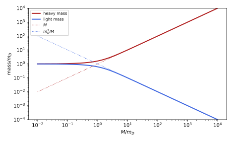
figures/dq-seesaw.sage.
Without mass the Dirac equation splits into two independent two-component equations. The definition below states them, the Weyl equations of Zhelnorovich (2019, sec. 5.7).
Definition 16 (Weyl equation) In the Weyl representation the Dirac equation for \psi = (\psi_L, \psi_R) reads i\bar\sigma^\mu\partial_\mu\psi_L = m\psi_R, i\sigma^\mu\partial_\mu\psi_R = m\psi_L, with \sigma^\mu = (1, \vec\sigma) and \bar\sigma^\mu = (1, -\vec\sigma). For m = 0 these decouple into the Weyl equations i\bar\sigma^\mu\partial_\mu\psi_L = 0, \qquad i\sigma^\mu\partial_\mu\psi_R = 0 , \tag{27} equivalently i\partial_t\psi_L = -\vec\sigma\cdot\vec p\,\psi_L and i\partial_t\psi_R = \vec\sigma\cdot\vec p\,\psi_R. A Weyl fermion is a solution of one of them; its two components transform under the left- or right-handed representation of SL(2, \mathbb{C}) of Definition 7 of Spinors and the Dirac operator Zhelnorovich (2019, sec. 5.7, eqs. (5.79)-(5.81)), Pal (2011, sec. 5).
Veriphy. Pending.
Lean. Pending.
Sage. Pending.
The positive-energy plane waves of the Weyl equations have definite helicity. The first example derives it, a special case of Example 33.
Example 84 (Helicity of Weyl particles) For \psi_R = \chi e^{-iEt + i\vec p\cdot\vec x} the equation gives E\chi = \vec\sigma\cdot\vec p\chi, so positive energy E = |\vec p| requires \vec\sigma\cdot\hat p\chi = \chi: helicity +1. For \psi_L, E\chi = -\vec\sigma\cdot\vec p\chi and positive energy requires helicity -1. The neutrinos observed in weak decays are left-handed, with helicity -1, and their antiparticles have helicity +1.
Veriphy. Pending.
Lean. Pending.
Sage. Pending.
The negative-energy solutions of a Weyl equation have the opposite helicity. The second example derives it and its hole interpretation, which gives the antiparticle of a left-handed Weyl fermion.
Example 85 (The antiparticle of a Weyl fermion) For \psi_L with energy -|\vec p|: -|\vec p|\chi = -\vec\sigma\cdot\vec p\chi, so \vec\sigma\cdot\hat p\chi = \chi. As a hole (Definition 19), the missing state of momentum \vec p and spin along \hat p appears as an antiparticle of momentum -\vec p and spin along -\hat p: helicity +1. A left-handed Weyl field thus describes a particle of helicity -1 and an antiparticle of helicity +1, two states instead of the four of a Dirac field.
Veriphy. Pending.
Lean. Pending.
Sage. Pending.
Each Weyl field has its own conserved current. The third example writes the two currents, which are the chiral pieces of the vector current of Exercise 46 of Classical field theory.
Example 86 (Chiral currents) j_L^\mu = \psi_L^\dagger\bar\sigma^\mu\psi_L and j_R^\mu = \psi_R^\dagger\sigma^\mu\psi_R are conserved separately when m = 0; their sum is j^\mu = \bar\psi\gamma^\mu\psi and their difference the axial current a^\mu (Exercise 19). For a single Weyl field the current is null: j^0 = |\vec j| for every plane wave, since the particle moves at the speed of light (Exercise 20).
Veriphy. Pending.
Lean. Pending.
Sage. Pending.
The first exercise derives the Weyl equations from the four-component form. It is a block multiplication. It also identifies which block carries which chirality.
Exercise 99 (From Dirac to Weyl) Using \gamma^\mu = \begin{pmatrix} 0 & \sigma^\mu \\ \bar\sigma^\mu & 0\end{pmatrix} (Example 39 of Classical field theory), derive the two equations of the definition and their Hamiltonian forms.
i\gamma^\mu\partial_\mu(\psi_L, \psi_R) = (i\sigma^\mu\partial_\mu\psi_R, i\bar\sigma^\mu\partial_\mu\psi_L), and equating with m(\psi_L, \psi_R) gives the pair. For m = 0, i\bar\sigma^\mu\partial_\mu\psi_L = i\partial_t\psi_L - i\vec\sigma\cdot\nabla\psi_L = 0, i.e. i\partial_t\psi_L = i\vec\sigma\cdot\nabla\psi_L = -\vec\sigma\cdot\vec p\psi_L; likewise i\partial_t\psi_R = \vec\sigma\cdot\vec p\psi_R, the two blocks of Example 1.
Veriphy. Pending.
Lean. Pending.
Sage. Pending.
The square of the Weyl operator is the wave operator, as the square of the Dirac operator is the Klein-Gordon operator. The second exercise shows this.
Exercise 100 (The square of the Weyl operator) Show that (\sigma^\mu\partial_\mu)(\bar\sigma^\nu\partial_\nu) = \Box and (\bar\sigma^\mu\partial_\mu)(\sigma^\nu\partial_\nu) = \Box. Deduce that with mass, (\Box + m^2)\psi_L = 0.
(\partial_t + \vec\sigma\cdot\nabla)(\partial_t - \vec\sigma\cdot\nabla) = \partial_t^2 - (\vec\sigma\cdot\nabla)^2 = \partial_t^2 - \nabla^2 = \Box, and the other order is the same. With mass, i\sigma^\mu\partial_\mu(i\bar\sigma^\nu\partial_\nu\psi_L) = i\sigma^\mu\partial_\mu(m\psi_R) = m^2\psi_L, so -\Box\psi_L = m^2\psi_L.
Veriphy. Pending.
Lean. Pending.
Sage. Pending.
The two chiral blocks transform with M and (M^\dagger)^{-1} under SL(2, \mathbb{C}). The third exercise checks with Sage that the Weyl equation is covariant under a boost acting this way.
Exercise 101 (Covariance of the Weyl equation) With Sage, for the boost along z with rapidity w, M = e^{-w\sigma_3/2} (Example 9), check M^\dagger\bar\sigma^\mu M = \Lambda^\mu{}_\nu\bar\sigma^\nu and (M^{-1})\sigma^\mu(M^\dagger)^{-1} = \Lambda^\mu{}_\nu\sigma^\nu for the vector boost \Lambda, which is the covariance of the two Weyl equations.
Both identities hold with \Lambda^0{}_0 = \Lambda^3{}_3 = \cosh w, \Lambda^0{}_3 = \Lambda^3{}_0 = \sinh w; they are the two diagonal blocks of S^{-1}\gamma^\mu S = \Lambda^\mu{}_\nu\gamma^\nu for S = \operatorname{diag}(M, (M^\dagger)^{-1}):
s = [matrix(SR, [[0, 1], [1, 0]]), matrix(SR, [[0, -I], [I, 0]]), matrix(SR, [[1, 0], [0, -1]])]
Z = zero_matrix(SR, 2); one = identity_matrix(SR, 2)
blk = lambda a, b, c, d: block_matrix([[a, b], [c, d]], subdivide=False)
g = [blk(Z, one, one, Z)] + [blk(Z, sk, -sk, Z) for sk in s] # Weyl representation
g5 = I * g[0] * g[1] * g[2] * g[3]; I4 = identity_matrix(SR, 4)
w = var("w", domain="real")
M = diagonal_matrix(SR, [exp(-w / 2), exp(w / 2)])
sig = [one] + s; sigb = [one] + [-x for x in s]
ch, sh = (exp(w) + exp(-w)) / 2, (exp(w) - exp(-w)) / 2
Lam = matrix(SR, [[ch, 0, 0, sh], [0, 1, 0, 0], [0, 0, 1, 0], [sh, 0, 0, ch]])
z = lambda A_: (A_.apply_map(lambda e: e.expand().simplify_full())).is_zero()
print("M^dag sigma-bar^mu M = Lambda^mu_nu sigma-bar^nu:", all(z(M.conjugate_transpose() * sigb[mu] * M - sum(Lam[mu, nu] * sigb[nu] for nu in range(4))) for mu in range(4)))
print("M^-1 sigma^mu (M^dag)^-1 = Lambda^mu_nu sigma^nu:", all(z(M.inverse() * sig[mu] * M.conjugate_transpose().inverse() - sum(Lam[mu, nu] * sig[nu] for nu in range(4))) for mu in range(4)))
S = blk(M, Z, Z, M.conjugate_transpose().inverse())
S03 = (g[0] * g[3] - g[3] * g[0]) / 4
Sexp = (exp(w / 2) + exp(-w / 2)) / 2 * I4 + 2 * S03 * (exp(w / 2) - exp(-w / 2)) / 2 # (2 S^{03})^2 = 1
print("S = diag(M, (M^dag)^-1) equals exp(w S^{03}) = cosh(w/2) + 2 S^{03} sinh(w/2):", z(S - Sexp))Output:
M^dag sigma-bar^mu M = Lambda^mu_nu sigma-bar^nu: True
M^-1 sigma^mu (M^dag)^-1 = Lambda^mu_nu sigma^nu: True
S = diag(M, (M^dag)^-1) equals exp(w S^{03}) = cosh(w/2) + 2 S^{03} sinh(w/2): TrueVeriphy. Pending.
Lean. Pending.
Sage. Pending.
A neutral fermion may be its own antiparticle, and the condition can be imposed covariantly because \psi^c transforms like \psi. The definition below states it, following Pal (2011, sec. 3) and the general reality condition Definition 5 of Spinors and the Dirac operator.
Definition 17 (Majorana fermion) A Majorana spinor is a four-component spinor with \psi^c = \psi, that is i\gamma^2\psi^* = \psi. In the Weyl representation the condition reads \psi_R = -i\sigma_2\psi_L^*, so every Majorana spinor has the form \psi_M = \begin{pmatrix} \chi \\ -i\sigma_2\chi^*\end{pmatrix} \tag{28} for a two-component \chi, and a Majorana fermion is a solution of the Dirac equation of this form Pal (2011, eqs. (3.17), (5.25)).
Veriphy. Pending.
Lean. Pending.
Sage. Pending.
The form Equation 28 is the construction of a Majorana field from one Weyl field. The first example states it in Pal’s words: the right-handed part is the conjugate of the left-handed one.
Example 87 (A Majorana field from a Weyl field) Given a left-handed \chi, the spinor \psi = (\chi, 0) + (\chi, 0)^c = (\chi, -i\sigma_2\chi^*) satisfies \psi^c = \psi, since conjugation is an involution (Example 73) and maps left to right. It has a left- and a right-handed part, so it can have a mass, although it contains only the two complex components of \chi Pal (2011, sec. 5.3, eq. (5.25)).
Veriphy. Pending.
Lean. Pending.
Sage. Pending.
In a basis where all gamma matrices are imaginary the Majorana condition is reality. The second example connects the definition with Example 20 of Spinors and the Dirac operator.
Example 88 (Majorana spinors are real) In the Majorana representation of Example 20 of Spinors and the Dirac operator the Dirac equation has real coefficients, and the charge conjugation is \psi \to \psi^* up to a phase; a Majorana spinor is then a real solution, with four real components, as for the real Klein-Gordon field Pal (2011, sec. 3.2). In the Weyl representation the same four real numbers are the components of \chi.
Veriphy. Pending.
Lean. Pending.
Sage. Pending.
A Majorana fermion cannot carry a conserved charge. The third example shows why: the phase rotations that define a charge do not preserve the condition.
Example 89 (No charge) (e^{i\alpha}\psi)^c = e^{-i\alpha}\psi^c, so e^{i\alpha}\psi_M is Majorana only for e^{i\alpha} = \pm1: there is no U(1) symmetry and no conserved charge. In particular a Majorana fermion cannot couple minimally to electromagnetism, since \psi^c obeys the equation with charge -q (Proposition 7) and \psi^c = \psi forces q = 0. Neutrinos, the photino and the gluinos of supersymmetric theories are the candidates.
Veriphy. Pending.
Lean. Pending.
Sage. Pending.
The first exercise checks the Majorana condition by computer. It also confirms that phase rotations break it. Real symbols for the components make the conjugation explicit.
Exercise 102 (The condition by computer) With Sage, for \chi = (a + ib, c + id) with real symbols, verify that \psi_M = (\chi, -i\sigma_2\chi^*) satisfies i\gamma^2\psi_M^* = \psi_M, and that e^{i\alpha}\psi_M satisfies it only when \sin\alpha = 0.
The condition holds identically, and for the rotated spinor the difference is 2i\sin\alpha times a non-zero vector:
s = [matrix(SR, [[0, 1], [1, 0]]), matrix(SR, [[0, -I], [I, 0]]), matrix(SR, [[1, 0], [0, -1]])]
Z = zero_matrix(SR, 2); one = identity_matrix(SR, 2)
blk = lambda a, b, c, d: block_matrix([[a, b], [c, d]], subdivide=False)
g = [blk(Z, one, one, Z)] + [blk(Z, sk, -sk, Z) for sk in s] # Weyl representation
g5 = I * g[0] * g[1] * g[2] * g[3]; I4 = identity_matrix(SR, 4)
a, b, c, d, al = var("a b c d alpha", domain="real")
chi = vector(SR, [a + I * b, c + I * d])
psiM = vector(SR, list(chi) + list(-I * s[1] * chi.conjugate()))
print("psi_M =", list(psiM))
print("i gamma^2 psi_M^* = psi_M:", (I * g[2] * psiM.conjugate() - psiM).simplify_full() == 0)
rot = exp(I * al) * psiM
dif = (I * g[2] * rot.conjugate() - rot).simplify_full()
print("i gamma^2 (e^{i alpha} psi_M)^* - e^{i alpha} psi_M =", [x.simplify_full() for x in dif])
print("= -2 i sin(alpha) psi_M:", all(bool((x + 2 * I * sin(al) * y).expand() == 0) for x, y in zip(dif, psiM)))Output:
psi_M = [a + I*b, c + I*d, -c + I*d, a - I*b]
i gamma^2 psi_M^* = psi_M: True
i gamma^2 (e^{i alpha} psi_M)^* - e^{i alpha} psi_M = [-2*I*a*sin(alpha) + 2*b*sin(alpha), -2*I*c*sin(alpha) + 2*d*sin(alpha), 2*I*c*sin(alpha) + 2*d*sin(alpha), -2*I*a*sin(alpha) - 2*b*sin(alpha)]
= -2 i sin(alpha) psi_M: TrueVeriphy. Pending.
Lean. Pending.
Sage. Pending.
A spinor cannot be both Majorana and Weyl in four dimensions. The second exercise proves this from the form Equation 28, as Pal (2011, sec. 5.4) do with the Majorana representation.
Exercise 103 (No Majorana-Weyl spinors in four dimensions) Show that a Majorana spinor with \psi_R = 0 vanishes. How does this agree with the classification of Theorem 2 of Spinors and the Dirac operator, which allows Majorana-Weyl spinors in two and ten dimensions?
\psi_R = -i\sigma_2\psi_L^* = 0 forces \psi_L = 0. In four Lorentzian dimensions conjugation exchanges chiralities (Example 72), so a reality condition and a chirality condition are incompatible; in d = 2 and d = 10 conjugation preserves chirality and both can be imposed (Theorem 2 of Spinors and the Dirac operator).
Veriphy. Pending.
Lean. Pending.
Sage. Pending.
Counting components shows that Weyl and Majorana fermions are equally small. The third exercise counts real degrees of freedom and physical states.
Exercise 104 (Counting) Count the real components of a Dirac, a Weyl and a Majorana spinor, and the number of one-particle states (particle and antiparticle, spin or helicity) at fixed momentum for each.
Dirac: 8 real components; states: particle and antiparticle, two spins each, 4. Weyl: 4 real components; particle of one helicity and antiparticle of the other, 2 states (Example 85). Majorana: 4 real components; a single self-conjugate particle with two spin states, 2. A Dirac fermion is equivalent to two Majorana fermions of equal mass (Exercise 107).
Veriphy. Pending.
Lean. Pending.
Sage. Pending.
Imposing the Majorana condition on the Dirac equation leaves an equation for a single two-component spinor that couples it to its own conjugate. The proposition below states it.
Proposition 8 (The Majorana equation) \psi_M = (\chi, -i\sigma_2\chi^*) solves the Dirac equation of mass m if and only if i\bar\sigma^\mu\partial_\mu\chi = -im\sigma_2\chi^* , \tag{29} and then (\Box + m^2)\chi = 0: a single left-handed two-component spinor can have a mass, the Majorana mass, which couples \chi to \chi^* and is allowed only for a field without conserved charge Pal (2011, sec. 5.3).
Proof. By Definition 16 the Dirac equation is i\bar\sigma^\mu\partial_\mu\psi_L = m\psi_R and i\sigma^\mu\partial_\mu\psi_R = m\psi_L. The first with \psi_L = \chi, \psi_R = -i\sigma_2\chi^* is Equation 29. The second is its consequence: conjugating Equation 29 and multiplying by -i\sigma_2, using \sigma_2\bar\sigma^{\mu*}\sigma_2 = \sigma^\mu, gives i\sigma^\mu\partial_\mu(-i\sigma_2\chi^*) = m\chi. Applying i\sigma^\nu\partial_\nu to the conjugated form then gives (\Box + m^2)\chi = 0 as in Exercise 100.
Veriphy. Pending.
Lean. Pending.
Sage. Pending.
A Majorana plane wave contains both energies with tied amplitudes. The first example writes the general plane-wave solution, the analogue of the real Klein-Gordon field.
Example 90 (Majorana plane waves) \psi_M = a\,u(p)e^{-ip\cdot x} + a^*u(p)^ce^{ip\cdot x} with u(p)^c = v(p) (Proposition 7) satisfies \psi_M^c = \psi_M because the second term is the conjugate of the first. The negative-energy part is not independent: as for the real field \phi = ae^{-ipx} + a^*e^{ipx}, the particle is its own antiparticle Pal (2011, sec. 3.3, eq. (3.22)).
Veriphy. Pending.
Lean. Pending.
Sage. Pending.
With several Weyl fields, Majorana masses form a symmetric matrix. The second example is the seesaw of Figure 11, in which a Dirac-type and a large Majorana mass produce one very light state.
Example 91 (The seesaw) For two left-handed fields \chi_1, \chi_2 with i\bar\sigma^\mu\partial_\mu\chi_a = -iM_{ab}\sigma_2\chi_b^* and the real symmetric M = \begin{pmatrix} 0 & m_D \\ m_D & M_R\end{pmatrix}, an orthogonal change of fields diagonalises M, and each eigenvector is a Majorana fermion with mass equal to the absolute value of the eigenvalue (a negative sign is removed by \chi \to i\chi). For M_R \gg m_D the masses are m_D^2/M_R and M_R: a mass m_D of the order of the electron mass and M_R of 10^{14} GeV give a light state far below an electronvolt, the scale of neutrino masses.
Veriphy. Pending.
Lean. Pending.
Sage. Pending.
A Dirac fermion is two Majorana fermions of the same mass. The third example gives the decomposition, which runs the construction of the definition in reverse.
Example 92 (Dirac from two Majoranas) For any \psi, \psi_1 = (\psi + \psi^c)/\sqrt2 and \psi_2 = (\psi - \psi^c)/(i\sqrt2) are Majorana, and \psi = (\psi_1 + i\psi_2)/\sqrt2. If \psi solves the free Dirac equation so do \psi^c, \psi_1 and \psi_2, with the same mass. The U(1) charge of \psi is a rotation between \psi_1 and \psi_2, an SO(2) symmetry that two degenerate Majoranas have and a single one lacks.
Veriphy. Pending.
Lean. Pending.
Sage. Pending.
The first exercise derives the second-order equation from the Majorana equation. It shows that the mass is the physical mass of the particle.
Exercise 105 (The Majorana mass is a mass) From Equation 29 and its conjugate, show (\Box + m^2)\chi = 0. Use \sigma_2\vec\sigma^*\sigma_2 = -\vec\sigma.
Write Equation 29 as i\bar\sigma^\mu\partial_\mu\chi = m\psi_R with \psi_R = -i\sigma_2\chi^*. Its complex conjugate, multiplied by -i\sigma_2, is i\sigma^\mu\partial_\mu\psi_R = m\chi (proof of Proposition 8; \sigma_2\bar\sigma^{\mu*}\sigma_2 = \sigma^\mu follows from \sigma_2\vec\sigma^*\sigma_2 = -\vec\sigma). Then i\sigma^\nu\partial_\nu(i\bar\sigma^\mu\partial_\mu\chi) = m\,i\sigma^\nu\partial_\nu\psi_R = m^2\chi, and (\sigma\cdot\partial)(\bar\sigma\cdot\partial) = \Box (Exercise 100) gives -\Box\chi = m^2\chi.
Veriphy. Pending.
Lean. Pending.
Sage. Pending.
The seesaw masses are the eigenvalues of a two-by-two matrix. The second exercise computes them with Sage and expands the light one.
Exercise 106 (Seesaw masses) With Sage, find the eigenvalues of \begin{pmatrix} 0 & m_D \\ m_D & M\end{pmatrix}, expand the light mass in m_D/M to third order, and evaluate it for m_D = 100 GeV and M = 10^{14} GeV.
The light mass is m_D^2/M - m_D^4/M^3 + \dots, here 10^{-10} GeV = 0.1 eV:
mD, M, x = var("mD M x", domain="positive")
ev = matrix(SR, [[0, mD], [mD, M]]).eigenvalues()
print("eigenvalues:", ev)
light = (sqrt(M^2 + 4 * mD^2) - M) / 2
print("light mass:", taylor(light.subs(M=mD / x), x, 0, 3).subs(x=mD / M))
val = light.subs(mD=100, M=10^14)
print("light mass for mD = 100 GeV, M = 1e14 GeV: %.4e GeV = %.4f eV (mD^2/M = %.4e GeV)" % (RealField(200)(val), RealField(200)(val) * 1e9, 100^2 / 10^14))Output:
eigenvalues: [1/2*M - 1/2*sqrt(M^2 + 4*mD^2), 1/2*M + 1/2*sqrt(M^2 + 4*mD^2)]
light mass: mD^2/M - mD^4/M^3
light mass for mD = 100 GeV, M = 1e14 GeV: 1.0000e-10 GeV = 0.1000 eV (mD^2/M = 1.0000e-10 GeV)Veriphy. Pending.
Lean. Pending.
Sage. Pending.
The decomposition of a Dirac spinor into two Majoranas is a linear identity. The third exercise verifies it with Sage on a generic spinor.
Exercise 107 (Splitting a Dirac spinor) With Sage, for \psi with symbolic complex components, verify that \psi_1 = (\psi + \psi^c)/\sqrt2 and \psi_2 = (\psi - \psi^c)/(i\sqrt2) satisfy \psi_i^c = \psi_i and (\psi_1 + i\psi_2)/\sqrt2 = \psi.
All three identities hold, using (\psi^c)^c = \psi and the antilinearity of the conjugation:
s = [matrix(SR, [[0, 1], [1, 0]]), matrix(SR, [[0, -I], [I, 0]]), matrix(SR, [[1, 0], [0, -1]])]
Z = zero_matrix(SR, 2); one = identity_matrix(SR, 2)
blk = lambda a, b, c, d: block_matrix([[a, b], [c, d]], subdivide=False)
g = [blk(Z, one, one, Z)] + [blk(Z, sk, -sk, Z) for sk in s] # Weyl representation
g5 = I * g[0] * g[1] * g[2] * g[3]; I4 = identity_matrix(SR, 4)
a = var("a0 a1 a2 a3", domain="real"); b = var("b0 b1 b2 b3", domain="real")
psi = vector(SR, [a[i] + I * b[i] for i in range(4)])
cc = lambda f: I * g[2] * f.conjugate()
p1 = (psi + cc(psi)) / sqrt(2); p2 = (psi - cc(psi)) / (I * sqrt(2))
print("psi_1^c = psi_1:", (cc(p1) - p1).simplify_full() == 0, "; psi_2^c = psi_2:", (cc(p2) - p2).simplify_full() == 0)
print("(psi_1 + i psi_2)/sqrt 2 = psi:", ((p1 + I * p2) / sqrt(2) - psi).simplify_full() == 0)Output:
psi_1^c = psi_1: True ; psi_2^c = psi_2: True
(psi_1 + i psi_2)/sqrt 2 = psi: TrueVeriphy. Pending.
Lean. Pending.
Sage. Pending.
Exercises
These exercises combine the discrete symmetries with the reduced fermions. The first is the combined operation CP on a Weyl field, which Pal (2011, sec. 7) single out as the symmetry that a Weyl theory can have.
Exercise 108 (CP of a left-handed fermion) Show that \psi \to \gamma^0\psi^c(t, -\vec x) maps left-handed spinors to left-handed spinors, so that a theory with only left-handed fields can be CP invariant although it violates C and P separately. What does it do to the helicity of the particle state?
P_L\psi^c = (P_R\psi)^c (Example 72) and \gamma^0P_R = P_L\gamma^0, so P_L\gamma^0\psi^c = \gamma^0P_R\psi^c = \gamma^0(P_L\psi)^c: a left-handed field is mapped to a left-handed field. The particle of helicity -1 becomes the antiparticle with momentum reversed by P and spin unchanged, helicity +1: the CP conjugate of a left-handed neutrino is a right-handed antineutrino, which the Weyl field contains Pal (2011, eq. (7.8)).
Veriphy. Pending.
Lean. Pending.
Sage. Pending.
The second exercise checks the algebra of the discrete operations on the bilinears by computer. It shows how CPT acts on the current of commuting spinors.
Exercise 109 (CPT on bilinears by computer) With Sage, for \psi' = -i\gamma_5\psi, compute \overline{\psi'}\Gamma\psi' for \Gamma = 1, \gamma^\mu, \gamma^\mu\gamma_5, i\gamma_5 in terms of the same bilinears of \psi, and explain the result for commuting spinors.
\overline{\psi'} = \psi^\dagger(i\gamma_5)\gamma^0 = -i\bar\psi\gamma_5, so \overline{\psi'}\Gamma\psi' = -\bar\psi\gamma_5\Gamma\gamma_5\psi: the scalar and pseudoscalar change sign and the vector and axial vector do not. For commuting spinors this is the action of the matrix alone; with anticommuting fields and the reversal x \to -x the vector current changes sign, as the current of an antiparticle at the reflected point should:
s = [matrix(SR, [[0, 1], [1, 0]]), matrix(SR, [[0, -I], [I, 0]]), matrix(SR, [[1, 0], [0, -1]])]
Z = zero_matrix(SR, 2); one = identity_matrix(SR, 2)
blk = lambda a, b, c, d: block_matrix([[a, b], [c, d]], subdivide=False)
g = [blk(Z, one, one, Z)] + [blk(Z, sk, -sk, Z) for sk in s] # Weyl representation
g5 = I * g[0] * g[1] * g[2] * g[3]; I4 = identity_matrix(SR, 4)
a = var("a0 a1 a2 a3", domain="real"); b = var("b0 b1 b2 b3", domain="real")
psi = vector(SR, [a[i] + I * b[i] for i in range(4)]); psp = -I * g5 * psi
bar = lambda f, M: (f.conjugate() * g[0] * M * f).expand()
def sign(M):
x, y = bar(psp, M), bar(psi, M)
return 1 if bool((x - y).simplify_full() == 0) else (-1 if bool((x + y).simplify_full() == 0) else None)
print("scalar:", sign(I4), " pseudoscalar:", sign(I * g5), " vector:", [sign(g[m]) for m in range(4)], " axial:", [sign(g[m] * g5) for m in range(4)])Output:
scalar: -1 pseudoscalar: -1 vector: [1, 1, 1, 1] axial: [1, 1, 1, 1]Veriphy. Pending.
Lean. Pending.
Sage. Pending.
The third exercise asks why a single Weyl field cannot be charge-conjugation invariant. It is the argument of Pal (2011, sec. 7) in the language of this chapter.
Exercise 110 (A Weyl theory violates C) Suppose a theory contains one left-handed Weyl field \psi_L of charge q. Show that the charge conjugate of its particle state, a left-handed antiparticle of charge -q, is not among its states, so the theory cannot be C invariant, while CP maps its states to its states.
The field \psi_L describes a particle of helicity -1 and charge q and an antiparticle of helicity +1 and charge -q (Example 85). C keeps helicity and flips charge, so it would need a helicity -1 state of charge -q, which does not exist. CP flips both charge and helicity and maps the two existing states into each other (Exercise 108). The neutrino interactions of the Standard Model have exactly this structure.
Veriphy. Pending.
Lean. Pending.
Sage. Pending.
The Klein paradox and the Dirac sea
The negative-energy solutions cannot be ignored: they are needed for completeness, external fields mix them with the positive ones, and a strong enough potential turns one into the other. This part studies the simplest such situation, an electron hitting a high potential step, where the one-particle theory predicts transmission through an infinitely high wall, and then Dirac’s reinterpretation of the negative-energy states as a filled sea whose holes are antiparticles, together with the trembling motion that the interference of the two energy signs produces. Both point to the quantised field. The sources are Calogeracos and Dombey (1999) for the paradox and its history, Michele Cini and Rotondi (2023, chap. 13) for the non-relativistic step, and Costella and McKellar (1995) for the trembling motion and its disappearance in the Foldy-Wouthuysen representation.
The Klein paradox
In non-relativistic quantum mechanics a particle meeting a step higher than its energy is totally reflected, and the wave penetrates only an exponentially small distance. For the Dirac equation the same holds only for steps of intermediate height; beyond it the step becomes transparent again, as the figure shows.
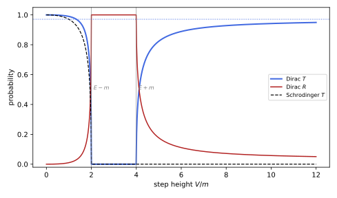
figures/dq-klein.sage.
The definition below sets up the scattering problem in one space dimension, with the Hamiltonian of Example 3. It follows the formulation of Calogeracos and Dombey (1999, secs. I.B–C).
Definition 18 (Klein step) The Klein step is the potential V(x) = V\theta(x), V > 0, in the 1 + 1-dimensional Dirac equation i\partial_t\psi = (\sigma_1p + \sigma_3m + V(x))\psi. A scattering solution of energy E > m is \psi(x) = \begin{cases} \begin{pmatrix} 1 \\ \frac{k}{E + m}\end{pmatrix}e^{ikx} + B\begin{pmatrix} 1 \\ \frac{-k}{E + m}\end{pmatrix}e^{-ikx}, & x < 0, \\ F\begin{pmatrix} 1 \\ \frac{q}{E - V + m}\end{pmatrix}e^{iqx}, & x > 0, \end{cases} \tag{30} with k = \sqrt{E^2 - m^2}, q^2 = (E - V)^2 - m^2, continuous at x = 0, the sign or branch of q being chosen so that the transmitted wave carries current away from the step or decays. The reflection and transmission coefficients are the ratios R = -j_{\mathrm{ref}}/j_{\mathrm{inc}} and T = j_{\mathrm{tr}}/j_{\mathrm{inc}} of the currents j = \psi^\dagger\sigma_1\psi.
Veriphy. Pending.
Lean. Pending.
Sage. Pending.
Each piece of Equation 30 is a plane wave of the free equation, shifted by the constant potential. The first example checks this and identifies the energy that matters on the right.
Example 93 (Plane waves on both sides) \sigma_1p + \sigma_3m = \begin{pmatrix} m & p \\ p & -m\end{pmatrix} has eigenvector (1, p/(\epsilon + m)) for the eigenvalue \epsilon with \epsilon^2 = p^2 + m^2. On the left \epsilon = E; on the right the potential shifts the kinetic energy to \epsilon = E - V, and the wave solves the free equation with energy E - V, which is negative when V > E. For V > E + m the transmitted wave is a negative-energy solution of the free equation: a positron state in the hole language of Definition 19 Calogeracos and Dombey (1999, eq. (15)).
Veriphy. Pending.
Lean. Pending.
Sage. Pending.
The coefficients are defined through currents, not amplitudes, because the spinors on the two sides differ. The second example computes the current of each wave.
Example 94 (The currents) For \psi = (1, c)e^{ipx} with real c, j = \psi^\dagger\sigma_1\psi = 2c. The incident wave has j = 2k/(E + m), the reflected one -2k|B|^2/(E + m), and the transmitted one 2|F|^2q/(E - V + m) for real q; for imaginary q the transmitted current vanishes. The group velocity q/(E - V) of the transmitted wave and its current q/(E - V + m) have the same sign when |E - V| > m, so choosing the direction of the current is choosing the group velocity.
Veriphy. Pending.
Lean. Pending.
Sage. Pending.
The non-relativistic step gives the comparison. The third example recalls its coefficients, which are the content of Michele Cini and Rotondi (2023, sec. 13.4, Problem 1).
Example 95 (The Schrödinger step) For -\frac{1}{2m}\psi'' + V\theta(x)\psi = \epsilon\psi with \epsilon > 0: if \epsilon < V the wave decays as e^{-\sqrt{2m(V - \epsilon)}x} and R = 1; if \epsilon > V, R = \big(\frac{k_1 - k_2}{k_1 + k_2}\big)^2 and T = \frac{4k_1k_2}{(k_1 + k_2)^2} with k_1 = \sqrt{2m\epsilon}, k_2 = \sqrt{2m(\epsilon - V)}. A high step always reflects totally, the dashed curve of Figure 12, in which \epsilon = E - m.
Veriphy. Pending.
Lean. Pending.
Sage. Pending.
The first exercise explains the matching condition. For a first-order equation only the function, not its derivative, must be continuous.
Exercise 111 (Matching at the step) Integrate (\sigma_1p + \sigma_3m + V(x) - E)\psi = 0 over (-\varepsilon, \varepsilon) and let \varepsilon \to 0 to show that \psi is continuous at x = 0. Why is no condition on \psi' imposed, unlike Michele Cini and Rotondi (2023, sec. 13.2)?
p = -i\partial_x, so -i\sigma_1[\psi(\varepsilon) - \psi(-\varepsilon)] + \int_{-\varepsilon}^{\varepsilon}(\sigma_3m + V - E)\psi\,dx = 0. The integral vanishes as \varepsilon \to 0 for bounded \psi and V, and \sigma_1 is invertible, so \psi(0^+) = \psi(0^-). The equation is of first order: two components, two continuity conditions, and these already determine B and F. The Schrödinger equation is of second order in x and needs both \psi and \psi' continuous; for the Dirac equation \psi' jumps where V does.
Veriphy. Pending.
Lean. Pending.
Sage. Pending.
The second exercise solves the non-relativistic step, the problem of Michele Cini and Rotondi (2023, sec. 13.4, Problem 1). It is the benchmark for the Dirac result.
Exercise 112 (The Schrödinger step) Solve the step of Example 95 for \epsilon > V and \epsilon < V, matching \psi and \psi', and derive R and T. Show R + T = 1 and that R \to 1 as V \to \epsilon from below.
For \epsilon > V: \psi = e^{ik_1x} + Be^{-ik_1x}, Fe^{ik_2x}; continuity gives 1 + B = F and k_1(1 - B) = k_2F, so B = \frac{k_1 - k_2}{k_1 + k_2}, F = \frac{2k_1}{k_1 + k_2}, T = \frac{k_2}{k_1}|F|^2 = \frac{4k_1k_2}{(k_1 + k_2)^2}, and R + T = \frac{(k_1 - k_2)^2 + 4k_1k_2}{(k_1 + k_2)^2} = 1. As V \to \epsilon, k_2 \to 0 and R \to 1. For \epsilon < V, k_2 = i\kappa with \kappa > 0, |B| = |k_1 - i\kappa|/|k_1 + i\kappa| = 1 and no current is transmitted.
Veriphy. Pending.
Lean. Pending.
Sage. Pending.
The plane waves of Equation 30 can be checked against the Hamiltonian directly. The third exercise does this with Sage on both sides of the step.
Exercise 113 (The plane waves by computer) With Sage, verify that each of the three waves of Equation 30 solves (\sigma_1p + \sigma_3m + V - E)\psi = 0 on its side, with p = -i\partial_x, for symbolic E, V, m and k^2 = E^2 - m^2, q^2 = (E - V)^2 - m^2.
Each reduces to the identity p^2 = \epsilon^2 - m^2 for the appropriate \epsilon:
x, E, V, m, k, q = var("x E V m k q")
s1 = matrix(SR, [[0, 1], [1, 0]]); s3 = matrix(SR, [[1, 0], [0, -1]])
op = lambda psi, pot: (-I * s1 * diff(psi, x) + (s3 * m + (pot - E) * identity_matrix(SR, 2)) * psi)
waves = [("incident", vector(SR, [1, k / (E + m)]) * exp(I * k * x), 0, k^2 - (E^2 - m^2)),
("reflected", vector(SR, [1, -k / (E + m)]) * exp(-I * k * x), 0, k^2 - (E^2 - m^2)),
("transmitted", vector(SR, [1, q / (E - V + m)]) * exp(I * q * x), V, q^2 - ((E - V)^2 - m^2))]
for name, psi, pot, rel in waves:
res = [(c * exp(-I * k * x) if name == "incident" else c * exp(I * k * x) if name == "reflected" else c * exp(-I * q * x)).simplify_full() for c in op(psi, pot)]
# each component is a multiple of the dispersion relation
sym = k if name != "transmitted" else q
red = [c.subs({sym^2: (E^2 - m^2) if name != "transmitted" else ((E - V)^2 - m^2)}).simplify_full() for c in [r.numerator() for r in res]]
print(name, ": residual numerators", res, "; vanish on the mass shell:", all(bool(SR(r).subs(solve(rel == 0, sym)[0]).simplify_full() == 0) for r in res))Output:
incident : residual numerators [-(E^2 - k^2 - m^2)/(E + m), 0] ; vanish on the mass shell: True
reflected : residual numerators [-(E^2 - k^2 - m^2)/(E + m), 0] ; vanish on the mass shell: True
transmitted : residual numerators [-(E^2 - 2*E*V + V^2 - m^2 - q^2)/(E - V + m), 0] ; vanish on the mass shell: TrueVeriphy. Pending.
Lean. Pending.
Sage. Pending.
The coefficients follow from two linear equations. The theorem below states them and the three regimes of Figure 12, with Klein’s result in the high-step limit.
Theorem 5 (Reflection and transmission at the Klein step) With \kappa = \frac{q}{k}\frac{E + m}{E - V + m}, the scattering solution has B = \frac{1 - \kappa}{1 + \kappa}, F = \frac{2}{1 + \kappa}, and R = \Big(\frac{1 - \kappa}{1 + \kappa}\Big)^2, \qquad T = \frac{4\kappa}{(1 + \kappa)^2}, \qquad R + T = 1 \tag{31} whenever q is real. (i) For V < E - m, q > 0 and 0 < T \leq 1. (ii) For E - m < V < E + m, q is imaginary, |B| = 1, R = 1 and T = 0. (iii) For V > E + m the transmitted wave has q = -\sqrt{(V - E)^2 - m^2}, \kappa > 0, and 0 < T \leq 1; as V \to \infty, T \to \frac{4\kappa_\infty}{(1 + \kappa_\infty)^2} with \kappa_\infty = \sqrt{\frac{E + m}{E - m}} Calogeracos and Dombey (1999, sec. I.A, eqs. (1)-(6) and Sec. I.C, eqs. (13)-(16)).
Proof. Continuity of the two components at x = 0 gives 1 + B = F and \frac{k}{E + m}(1 - B) = \frac{q}{E - V + m}F, so \frac{1 - B}{1 + B} = \kappa, which yields B and F. With the currents of Example 94, R = |B|^2 and T = |F|^2\kappa for real \kappa, and (1 - \kappa)^2 + 4\kappa = (1 + \kappa)^2. In regime (ii) q = i|q| for decay, \kappa is imaginary and |1 - \kappa| = |1 + \kappa|. In regime (iii) the group velocity q/(E - V) must be positive and E - V < 0, so q < 0, while E - V + m < 0; hence \kappa > 0. As V \to \infty, |q|/(V - E - m) \to 1 and \kappa \to (E + m)/k.
Veriphy. Pending.
Lean. Pending.
Sage. Pending.
The three regimes can be read off Figure 12. The first example evaluates the coefficients at representative heights for E = 3m.
Example 96 (The three regimes) For E = 3m, k = 2\sqrt2m. At V = m: q = \sqrt3m, \kappa = \frac{\sqrt3}{2\sqrt2}\cdot\frac{4}{3} = 0.816, T = 0.990. At V = 3m: E - V = 0, inside the gap, so T = 0. At V = 8m: q = -\sqrt{24}m, \kappa = \frac{\sqrt{24}}{2\sqrt2}\cdot\frac{4}{4} = \sqrt3, T = \frac{4\sqrt3}{(1 + \sqrt3)^2} = 0.928: a step of eight times the rest energy, more than twice the electron’s total energy, lets 93\% of the current through.
Veriphy. Pending.
Lean. Pending.
Sage. Pending.
With the naive sign of q the coefficients become unphysical, and this is what the literature calls the paradox. The second example shows it, with the reading of Calogeracos and Dombey (1999, sec. I.A).
Example 97 (The paradox in its usual form) Taking q = +\sqrt{(V - E)^2 - m^2} in regime (iii) gives \kappa < 0, hence R > 1 and T < 0: more current is reflected than arrives. At V = 8m, E = 3m this is \kappa = -\sqrt3 and R = 7 + 4\sqrt3 \approx 13.9. Klein himself took the sign from the group velocity, as in the theorem, and obtained R, T \in [0, 1]; the real paradox is that T stays finite as V \to \infty, where tunnelling should be exponentially suppressed Calogeracos and Dombey (1999, sec. I.A).
Veriphy. Pending.
Lean. Pending.
Sage. Pending.
A step is an idealisation; a barrier of finite width is more physical. The third example states the barrier coefficients, which show transmission resonances.
Example 98 (A square barrier) For V(x) = V on |x| < a and 0 outside, Calogeracos and Dombey (1999, sec. II.A, eqs. (21)-(23)) give T = \frac{4\kappa^2}{4\kappa^2 + (1 - \kappa^2)^2\sin^2(2qa)} with the same \kappa. Whenever 2qa = N\pi the barrier is perfectly transparent, T = 1, even for V > E + m; for a wide barrier the average of \sin^2 over the rapid oscillations gives T_\infty = \frac{8\kappa^2}{8\kappa^2 + (1 - \kappa^2)^2}, different from the step’s value because a barrier has two sides.
Veriphy. Pending.
Lean. Pending.
Sage. Pending.
A smooth step suppresses the effect unless it is very steep. The fourth example gives Sauter’s result, which ties the paradox to pair creation in strong fields.
Example 99 (Sauter’s smooth step) For a linear potential rising by \Delta V > 2m over a length L, a constant field of strength v = \Delta V/L, Sauter found T \approx e^{-\pi m^2/v} for v \ll m^2 Calogeracos and Dombey (1999, sec. I.D, eq. (18)). Transmission through the Klein zone is unsuppressed only for fields of order m^2/e, about 1.3 \times 10^{18} V/m for electrons; Schwinger’s rate of pair production in a constant field has the same exponent.
Veriphy. Pending.
Lean. Pending.
Sage. Pending.
The first exercise derives the coefficients from the matching conditions. It reproduces Klein’s formula. The algebra is elementary, and the comparison with the original notation is worth making.
Exercise 114 (Deriving the coefficients) From 1 + B = F and \frac{k}{E + m}(1 - B) = \frac{q}{E - V + m}F, derive B, F, R and T of Equation 31, and show that the expressions agree with Calogeracos and Dombey (1999, eqs. (2)-(3)), where \kappa is written \frac{p}{k}\frac{E + m}{E + m - V}.
Dividing, \frac{1 - B}{1 + B} = \frac{q(E + m)}{k(E - V + m)} = \kappa, so B = \frac{1 - \kappa}{1 + \kappa} and F = 1 + B = \frac{2}{1 + \kappa}. Then R = |B|^2 and, with the currents of Example 94, T = \frac{|F|^2q/(E - V + m)}{k/(E + m)} = |F|^2\kappa = \frac{4\kappa}{(1 + \kappa)^2}. Their p is our q, and E + m - V = E - V + m, so the formulas coincide.
Veriphy. Pending.
Lean. Pending.
Sage. Pending.
The sign of q in the Klein zone decides between a paradox and a sensible answer. The second exercise derives it from the group velocity, as Pauli pointed out to Klein.
Exercise 115 (The sign of the transmitted momentum) For x > 0, E - V = \pm\sqrt{q^2 + m^2}. Show that the group velocity dE/dq = q/(E - V), and that a wave moving away from the step in the Klein zone has q < 0. Interpret: what moves to the right under the step?
(E - V)^2 = q^2 + m^2 gives 2(E - V)\,dE = 2q\,dq. In the Klein zone E - V < -m < 0, so dE/dq > 0 requires q < 0: the transmitted state has momentum to the left but moves to the right, the property of the negative-energy branch noted in Exercise 27. In the hole picture it is a positron moving to the right: the potential that repels electrons attracts positrons, and under the step a positron has the positive kinetic energy V - E > m Calogeracos and Dombey (1999, sec. I.C).
Veriphy. Pending.
Lean. Pending.
Sage. Pending.
The unitarity relation and the high-step limit are algebraic statements that can be checked symbolically. The third exercise does so with Sage.
Exercise 116 (Unitarity and the high-step limit) With Sage, verify R + T = 1 for R, T of Equation 31, compute \lim_{V\to\infty}\kappa in regime (iii), and evaluate T in this limit for E = 3m and E = 1.1m.
\kappa_\infty = \sqrt{(E + m)/(E - m)}, so T_\infty = 4\sqrt2/(1 + \sqrt2)^2 = 0.971 for E = 3m and 0.588 for E = 1.1m: slow electrons are reflected more, but never totally:
kap = var("kappa"); E, m, V = var("E m V", domain="positive")
R = ((1 - kap) / (1 + kap))^2; T = 4 * kap / (1 + kap)^2
print("R + T = 1:", bool((R + T - 1).simplify_full() == 0))
k = sqrt(E^2 - m^2); q = -sqrt((V - E)^2 - m^2)
kv = q / k * (E + m) / (E - V + m)
lim = limit(kv, V=oo)
print("lim_{V -> oo} kappa =", lim.simplify_full(), "; equals sqrt((E + m)/(E - m)):", bool((lim^2 - (E + m) / (E - m)).simplify_full() == 0))
for Ev in (3, 1.1):
ki = sqrt((Ev + 1) / (Ev - 1))
print("E = %s m: kappa_inf = %.4f, T_inf = %.4f" % (Ev, ki.n(), (4 * ki / (1 + ki)^2).n()))Output:
R + T = 1: True
lim_{V -> oo} kappa = sqrt(E^2 - m^2)/(E - m) ; equals sqrt((E + m)/(E - m)): True
E = 3 m: kappa_inf = 1.4142, T_inf = 0.9706
E = 1.10000000000000 m: kappa_inf = 4.5826, T_inf = 0.5882Veriphy. Pending.
Lean. Pending.
Sage. Pending.
The barrier formula of Example 98 can be checked by matching at both edges. The fourth exercise does this with Sage and finds a transmission resonance.
Exercise 117 (The barrier by computer) With Sage, for m = 1, E = 3, V = 8 and half-width a, solve the four matching conditions at x = \pm a numerically, compute T, compare with Example 98 for several a, and find the smallest a with T = 1.
The numerical T agrees with the closed form, and the first resonance is at 2|q|a = \pi, a = \pi/(2\sqrt{24}) = 0.321:
m, E, V = 1, 3, 8
k = sqrt(E^2 - m^2); q = -sqrt((V - E)^2 - m^2) # group velocity to the right inside the barrier
sp = lambda p, eps: vector(CDF, [1, p / (eps + m)]) # spinor of momentum p and kinetic energy eps
def T_num(a):
# unknowns B (reflected), C, D (inside, e^{iqx}, e^{-iqx}), F (transmitted)
M = matrix(CDF, 4, 4); rhs = vector(CDF, 4)
xl, xr = -a, a
inc = sp(k, E) * exp(I * k * xl)
cols = [-sp(-k, E) * exp(-I * k * xl), sp(q, E - V) * exp(I * q * xl), sp(-q, E - V) * exp(-I * q * xl), vector(CDF, [0, 0])]
cols2 = [vector(CDF, [0, 0]), sp(q, E - V) * exp(I * q * xr), sp(-q, E - V) * exp(-I * q * xr), -sp(k, E) * exp(I * k * xr)]
for j in range(4):
M[0, j], M[1, j] = cols[j][0], cols[j][1]
M[2, j], M[3, j] = cols2[j][0], cols2[j][1]
rhs[0], rhs[1] = inc[0], inc[1]
B, C, D, F = M.solve_right(rhs)
return abs(F)^2
kap = (q / k * (E + m) / (E - V + m)).n()
T_cf = lambda a: 4 * kap^2 / (4 * kap^2 + (1 - kap^2)^2 * sin(2 * abs(q.n()) * a)^2)
for a in (0.1, 0.2, 0.25, 0.5):
print("a = %.2f: T (matching) = %.6f, T (formula) = %.6f" % (a, T_num(a), T_cf(a)))
ares = (pi / (2 * abs(q))).n()
print("first resonance at a = pi/(2 sqrt 24) = %.4f: T = %.10f" % (ares, T_num(ares)))Output:
a = 0.10: T (matching) = 0.813110, T (formula) = 0.813110
a = 0.20: T (matching) = 0.777947, T (formula) = 0.777947
a = 0.25: T (matching) = 0.880477, T (formula) = 0.880477
a = 0.50: T (matching) = 0.756509, T (formula) = 0.756509
first resonance at a = pi/(2 sqrt 24) = 0.3206: T = 1.0000000000Veriphy. Pending.
Lean. Pending.
Sage. Pending.
The Dirac sea
The negative-energy states make the free Dirac Hamiltonian unbounded below, so an electron could fall into them, emitting radiation without end. Dirac’s answer was to fill them all. Even then, a single electron’s position trembles, because any localised state contains both signs of energy, as the figure shows.
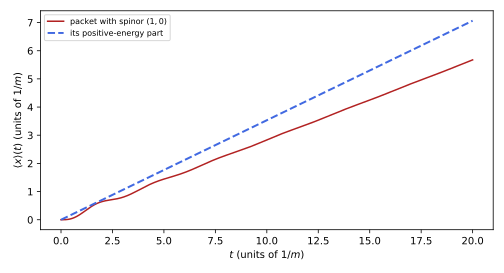
figures/dq-zitterbewegung.sage.
The definition below states Dirac’s hole theory. It is the bridge between the one-particle equation and the field theory developed in Quantum field theory.
Definition 19 (Dirac sea) The Dirac sea is the state of the many-electron system in which every negative-energy one-particle state is occupied, once by the Pauli principle, and every positive-energy state is empty; it is declared to be the vacuum, with zero energy and charge. A hole, the absence of an electron of energy -E, momentum -\vec p, spin -\vec s and charge q = -e, is an excitation of energy +E, momentum \vec p, spin \vec s and charge +e: a positron.
Veriphy. Pending.
Lean. Pending.
Sage. Pending.
The quantum numbers of a hole are those of the missing electron with all signs reversed. The first example lists them and relates them to the charge conjugation of Proposition 7.
Example 100 (The quantum numbers of a hole) Removing a state of energy -E raises the energy of the sea by E > 0; removing momentum -\vec p and charge -e adds \vec p and +e. The wave function of the missing electron is v(p)e^{ip\cdot x}, and its charge conjugate is u(p)e^{-ip\cdot x} with charge +e (Proposition 7): the hole is described by the conjugate spinor, a positive-energy particle of opposite charge, as in Example 75.
Veriphy. Pending.
Lean. Pending.
Sage. Pending.
Exciting an electron out of the sea leaves a hole behind. The second example gives the energy needed, the threshold of pair creation.
Example 101 (Pair creation) Lifting an electron from the top of the sea, at -m, to the bottom of the positive continuum, at +m, costs at least 2m = 1.022 MeV and produces an electron and a positron. A photon cannot do this alone in empty space (energy and momentum cannot both be conserved), but near a nucleus, which absorbs the recoil, photons above 1.022 MeV create pairs, the dominant absorption of gamma rays at high energy.
Veriphy. Pending.
Lean. Pending.
Sage. Pending.
A strong attractive potential can pull a bound state down into the sea. The third example follows a bound state through the gap, in the model of Calogeracos and Dombey (1999, sec. II.B).
Example 102 (Diving into the sea) For the narrow well V(x) = -\lambda\delta(x) in one dimension the single bound state has E = m\cos\lambda Calogeracos and Dombey (1999, eq. (26)). As \lambda grows from 0 to \pi/2 the level falls from m to 0, then becomes negative, and at \lambda = \pi it reaches -m, the top of the sea: the well is supercritical. Beyond, the empty bound state merges with the occupied continuum, an electron of the sea falls into it, and a positron is emitted: spontaneous pair creation from the vacuum, which the one-particle equation cannot describe.
Veriphy. Pending.
Lean. Pending.
Sage. Pending.
The first exercise addresses the infinite charge and energy of the sea. It shows why only differences from the vacuum are meaningful.
Exercise 118 (The charge of the sea) In a box of volume L^3, with momenta \vec p \in (2\pi/L)\mathbb{Z}^3 and |\vec p| \leq \Lambda, compute the charge and energy of the filled sea. Show that both diverge as \Lambda \to \infty, and that redefining the vacuum to have zero charge and energy leaves the charges and energies of holes and electrons finite.
There are 2 spin states per momentum and about L^3\frac{4\pi\Lambda^3}{3(2\pi)^3} momenta, so the sea has charge -e\cdot\frac{L^3\Lambda^3}{3\pi^2} and energy -\sum2E_p \approx -\frac{L^3\Lambda^4}{4\pi^2}, both divergent. Subtracting these constants (normal ordering, in the field theory developed in Quantum field theory) defines the vacuum; adding an electron changes the charge by -e, removing one by +e, and the energies by +E_p in both cases.
Veriphy. Pending.
Lean. Pending.
Sage. Pending.
The pair threshold depends on what absorbs the recoil. The second exercise computes it for two targets. The invariant mass of the initial state decides the answer.
Exercise 119 (Thresholds of pair creation) Using the invariant s = (p_\gamma + p_{\mathrm{target}})^2, show that a photon creates a pair on a heavy nucleus at rest above E_\gamma \approx 2m, and on a free electron at rest above E_\gamma = 4m.
At threshold the final particles are at rest in the centre-of-mass frame, so s = (M + 2m)^2 for a target of mass M. With s = M^2 + 2ME_\gamma, E_\gamma = 2m + 2m^2/M: for a nucleus M \gg m this is 2m, for an electron M = m it is 4m, since the final state then contains three particles of mass m.
Veriphy. Pending.
Lean. Pending.
Sage. Pending.
The hole theory uses the Pauli principle essentially. The third exercise asks why the same trick fails for spinless particles.
Exercise 120 (Why bosons have no sea) The Klein-Gordon equation also has negative-energy solutions. Explain why filling them does not stabilise a system of bosons, and how the quantised Klein-Gordon field avoids the problem instead, given that its negative-frequency waves multiply operators that create antiparticles (Example 18 of Classical field theory; the quantisation itself is developed in Definition 1 of Quantum field theory).
Without an exclusion principle any number of bosons can occupy each negative-energy state, so a “filled” sea does not exist and the energy remains unbounded below. The quantised field reinterprets the negative-frequency solutions as the creation of antiparticles of positive energy, with a Hamiltonian bounded below, and this works for bosons and fermions alike; for fermions it is equivalent to the hole theory, and the sea becomes unnecessary.
Veriphy. Pending.
Lean. Pending.
Sage. Pending.
The interference between positive and negative energies makes the position oscillate. The proposition below solves the Heisenberg equations of the free particle exactly, after Schrödinger’s analysis of Dirac’s velocity operator.
Proposition 9 (Zitterbewegung) For the free Hamiltonian H = \vec\alpha\cdot\vec p + \beta m, the Heisenberg operators are \vec\alpha(t) = \vec pH^{-1} + e^{2iHt}\vec\eta, \qquad \vec x(t) = \vec x(0) + \vec pH^{-1}t + \frac{1}{2i}\big(e^{2iHt} - 1\big)H^{-1}\vec\eta , \tag{32} with \vec\eta = \vec\alpha(0) - \vec pH^{-1}. The operator \vec\eta anticommutes with H, so it has no matrix elements between states of the same energy sign: the term e^{2iHt}\vec\eta is an oscillation at angular frequency 2E_p \geq 2m with amplitude of order 1/2E_p, present only in states that mix both signs of energy Costella and McKellar (1995, sec. III).
Proof. By Exercise 15, \dot{\vec x} = \vec\alpha and \dot{\vec\alpha} = 2i(H\vec\alpha - \vec p), i.e. \frac{d}{dt}(\vec\alpha - \vec pH^{-1}) = 2iH(\vec\alpha - \vec pH^{-1}), since H and \vec p are constant and commute. Hence \vec\alpha(t) - \vec pH^{-1} = e^{2iHt}\vec\eta; integrating gives \vec x(t). Finally \{H, \vec\alpha\} = 2\vec p (Exercise 15), so \{H, \vec\eta\} = 2\vec p - 2\vec p = 0.
Veriphy. Pending.
Lean. Pending.
Sage. Pending.
The scales of the trembling are set by the electron’s mass. The first example evaluates them in ordinary units. They explain why the effect is never seen directly.
Example 103 (Amplitude and frequency) For a slow electron the frequency is 2mc^2/\hbar = 1.55 \times 10^{21} s^{-1} and the amplitude about \hbar/2mc = 1.9 \times 10^{-13} m, half the reduced Compton wavelength. Both are far beyond direct observation; their trace in atoms is the Darwin term, which smears the electron over this distance (Example 53).
Veriphy. Pending.
Lean. Pending.
Sage. Pending.
A state made only of positive energies does not tremble. The second example shows this from the anticommutation of \vec\eta with H, which is the content of the dashed curve of Figure 13.
Example 104 (No trembling at positive energy) If P_+ projects on positive energies, \vec\eta P_+ = P_-\vec\eta because \vec\eta H = -H\vec\eta, so P_+\vec\eta P_+ = P_+P_-\vec\eta = 0. In a positive-energy state the oscillating term has zero expectation, and \langle\vec x(t)\rangle = \langle\vec x(0)\rangle + \langle\vec p/E_p\rangle t, the classical motion. The trembling is an interference effect between the two branches of Figure 1.
Veriphy. Pending.
Lean. Pending.
Sage. Pending.
In the Foldy-Wouthuysen representation the trembling disappears from the position operator. The third example states this, which is the interpretation of Costella and McKellar (1995, secs. II–III).
Example 105 (The Newton-Wigner position) The Foldy-Wouthuysen transformation of Definition 10 maps H to \beta E_p, and the operator that is \vec x in the new representation has velocity \beta\vec p/E_p with no oscillation (Example 51). In the Dirac representation this operator is the Newton-Wigner position, the mean of \vec x over the trembling: the Zitterbewegung belongs to the Dirac position operator, not to the particle.
Veriphy. Pending.
Lean. Pending.
Sage. Pending.
The first exercise derives the formula for \vec x(t) by integrating the velocity. The order of operators matters only through the fact that H and \vec p commute.
Exercise 121 (Integrating the velocity) From \vec\alpha(t) = \vec pH^{-1} + e^{2iHt}\vec\eta, integrate \dot{\vec x} = \vec\alpha to obtain Equation 32, and check that \vec x(t) satisfies \vec x(0) = \vec x at t = 0.
\int_0^te^{2iHs}ds = \frac{1}{2iH}(e^{2iHt} - 1) because H is a constant operator, invertible since H^2 = E_p^2 \geq m^2. So \vec x(t) = \vec x(0) + \vec pH^{-1}t + \frac{1}{2i}(e^{2iHt} - 1)H^{-1}\vec\eta, which equals \vec x(0) at t = 0. (H^{-1} and e^{2iHt} commute, so their order is immaterial.)
Veriphy. Pending.
Lean. Pending.
Sage. Pending.
In one dimension the operators are two-by-two matrices at fixed momentum. The second exercise verifies the velocity formula with Sage there.
Exercise 122 (The velocity formula by computer) For H = \sigma_1p + \sigma_3m at fixed p, compute with Sage \alpha(t) = e^{iHt}\sigma_1e^{-iHt} and compare with pH^{-1} + e^{2iHt}(\sigma_1 - pH^{-1}). Read off the frequency of the oscillation and the time average of \alpha(t).
The two expressions agree; the oscillation has frequency 2E_p and the time average is pH^{-1}, whose eigenvalues are \pm p/E_p:
p, m, t = var("p m t", domain="positive"); E = sqrt(p^2 + m^2)
s1 = matrix(SR, [[0, 1], [1, 0]]); s3 = matrix(SR, [[1, 0], [0, -1]]); I2 = identity_matrix(SR, 2)
H = p * s1 + m * s3
ex = lambda c: cos(c * E * t) * I2 + I * sin(c * E * t) * H / E # exp(i c H t), using H^2 = E^2
Hinv = H / E^2
alpha_t = ex(1) * s1 * ex(-1)
formula = p * Hinv + ex(2) * (s1 - p * Hinv)
print("H^2 = E^2:", (H * H - E^2 * I2).simplify_full() == 0)
print("alpha(t) = p H^-1 + e^{2iHt}(alpha - p H^-1):", (alpha_t - formula).simplify_full().simplify_trig() == 0)
avg = (alpha_t.apply_map(lambda e: integrate(e, t, 0, pi / E) * E / pi)).simplify_full()
print("time average over a period pi/E:", avg, "; equals p H^-1:", (avg - p * Hinv).simplify_full() == 0)
print("eigenvalues of p H^-1:", (p * Hinv).eigenvalues())Output:
H^2 = E^2: True
alpha(t) = p H^-1 + e^{2iHt}(alpha - p H^-1): True
time average over a period pi/E: [ m*p/(m^2 + p^2) p^2/(m^2 + p^2)]
[ p^2/(m^2 + p^2) -m*p/(m^2 + p^2)] ; equals p H^-1: True
eigenvalues of p H^-1: [-p/sqrt(m^2 + p^2), p/sqrt(m^2 + p^2)]Veriphy. Pending.
Lean. Pending.
Sage. Pending.
The vanishing of the oscillating term at positive energy is a statement about \vec\eta alone. The third exercise proves it and computes the size of the matrix elements between the two signs.
Exercise 123 (The interference term) Show that \vec\eta H = -H\vec\eta and P_+\vec\eta P_+ = 0. For \vec p = 0 show that \vec\eta = \vec\alpha and that \vec\alpha maps the rest spinors u^s(0) into the span of the v^s(0). What is then the amplitude of the trembling of a state (u + v)/\sqrt2 at rest?
\{H, \vec\eta\} = 0 from the proof; then P_\pm = \frac12(1 \pm H/E) give \vec\eta P_+ = P_-\vec\eta and P_+\vec\eta P_+ = 0. At \vec p = 0, \vec\eta = \vec\alpha and H = \beta m; \vec\alpha anticommutes with \beta, so it maps the \beta = +1 eigenspace (the u(0)) to the \beta = -1 eigenspace (the v(0)). For (u + v)/\sqrt2 the oscillating term of Equation 32 has amplitude |H^{-1}\vec\eta|/2 \sim 1/2m, the scale of Example 103.
Veriphy. Pending.
Lean. Pending.
Sage. Pending.
Exercises
These exercises combine the Klein step with the sea. The first computes the pair current that Hund found for a strong step, a “sort of optical theorem” in the words of Calogeracos and Dombey (1999, sec. I.E).
Exercise 124 (The pair current of a strong step) Calogeracos and Dombey (1999, eq. (19)) state that a step with V > 2m emits pairs with current \langle0|j|0\rangle = -\frac{1}{2\pi}\int T(E)\,dE over the Klein zone m \leq E \leq V - m. With Sage, compute \int T\,dE for V = 4m and V = 10m with the T of Theorem 5, and compare with the width V - 2m of the zone.
The integrals are a large fraction of the zone width, since T is close to one in the middle of the zone and vanishes only at its edges:
def T(E, V, m=1.0):
k = sqrt(E^2 - m^2); eps = E - V
q = -sqrt(eps^2 - m^2)
kap = q / k * (E + m) / (eps + m)
return 4 * kap / (1 + kap)^2
for V in (4, 10):
val, err = numerical_integral(lambda E: T(E, V), 1, V - 1)
print("V = %d m: int T dE = %.4f m over a zone of width %d m (ratio %.3f); pair current -(1/2 pi) int T dE = %.4f m" % (V, val, V - 2, val / (V - 2), -val / (2 * pi.n())))Output:
V = 4 m: int T dE = 1.2940 m over a zone of width 2 m (ratio 0.647); pair current -(1/2 pi) int T dE = -0.2059 m
V = 10 m: int T dE = 7.1832 m over a zone of width 8 m (ratio 0.898); pair current -(1/2 pi) int T dE = -1.1432 mVeriphy. Pending.
Lean. Pending.
Sage. Pending.
The second exercise collects the reasons why the one-particle interpretation of the Dirac equation fails. It uses results from all parts of the chapter.
Exercise 125 (Why a field is needed) List, with the results of this chapter, four facts that a one-particle interpretation of the Dirac equation cannot accommodate: consider the spectrum of H, localised states, the Klein step, and supercritical potentials.
- H is unbounded below (Figure 1), so radiative decay into negative energies would never stop without the sea (Definition 19). (2) A state localised better than 1/m needs negative energies (Example 30) and then trembles (Proposition 9). (3) In the Klein zone the transmitted wave is a negative-energy, i.e. positron, state (Example 93): the step creates pairs (Exercise 124). (4) A supercritical well emits positrons (Example 102), changing the particle number. Each is natural in a field theory with variable particle number.
Veriphy. Pending.
Lean. Pending.
Sage. Pending.
Sauter’s exponent sets the field strength at which the vacuum becomes unstable. The third exercise evaluates it in ordinary units.
Exercise 126 (The critical field) In ordinary units Sauter’s exponent is \pi m^2c^3/(e\hbar\mathcal{E}) for a field \mathcal{E}. Compute the critical field \mathcal{E}_c = m^2c^3/e\hbar for electrons and compare it with the field at the Bohr radius of hydrogen.
\mathcal{E}_c = \frac{(9.109 \times 10^{-31})^2(2.998 \times 10^8)^3}{1.602 \times 10^{-19} \cdot 1.055 \times 10^{-34}} = 1.32 \times 10^{18} V/m. At the Bohr radius a_0 = 5.29 \times 10^{-11} m the proton’s field is e/4\pi\epsilon_0a_0^2 = 5.1 \times 10^{11} V/m, smaller by the factor 2.6 \times 10^6 = 1/\alpha^3: atoms are far from supercritical, which is why the Dirac equation describes hydrogen so well Calogeracos and Dombey (1999, sec. I.D).
The same numbers by computer:
me = 9.1093837015e-31; c = 299792458; e = 1.602176634e-19; hbar = 1.054571817e-34; eps0 = 8.8541878128e-12; alpha = 1 / 137.035999166
Ec = me^2 * c^3 / (e * hbar); a0 = hbar / (me * c * alpha)
Eb = e / (4 * pi * eps0 * a0^2)
print("E_c = %.3e V/m; a_0 = %.4e m; field at a_0 = %.3e V/m; ratio = %.4e; 1/alpha^3 = %.4e" % (Ec, a0, Eb.n(), (Ec / Eb).n(), alpha^-3))Output:
E_c = 1.323e+18 V/m; a_0 = 5.2918e-11 m; field at a_0 = 5.142e+11 V/m; ratio = 2.5734e+06; 1/alpha^3 = 2.5734e+06Veriphy. Pending.
Lean. Pending.
Sage. Pending.
Exercises
The exercises below use several parts of the chapter together. The first combines the Pauli limit with the fine structure: a magnetic field splits the 2P levels by an amount that soon rivals the fine-structure interval.
Exercise 127 (Zeeman splitting of the 2P levels) With the Landé factors of Exercise 48, compute with Sage the Zeeman shifts g_J\mu_BBm_j of the 2P_{1/2} and 2P_{3/2} sublevels for B = 0.1, 0.5 and 1 T in GHz, and find the field at which the Zeeman splitting of 2P_{3/2} equals the fine-structure interval of Example 68.
With \mu_B/h = 13.996 GHz/T, the outermost 2P_{3/2} sublevels are split by 3 \cdot \frac43 \cdot 13.996\,B GHz, which equals 10.94 GHz at B \approx 0.20 T; above this field the weak-field formula fails and the levels approach the Paschen-Back regime, where spin and orbit decouple:
muB = 13.996245 # mu_B/h in GHz/T
for B in (0.1, 0.5, 1.0):
p12 = [round(2/3 * muB * B * mj, 3) for mj in (-1/2, 1/2)]
p32 = [round(4/3 * muB * B * mj, 3) for mj in (-3/2, -1/2, 1/2, 3/2)]
print("B = %.1f T: 2P_1/2 shifts %s GHz; 2P_3/2 shifts %s GHz" % (B, p12, p32))
Bc = 10.9437 / (3 * 4/3 * muB)
print("2P_3/2 spread 3 g_J mu_B B equals 10.94 GHz at B = %.3f T" % Bc)Output:
B = 0.1 T: 2P_1/2 shifts [-0.467, 0.467] GHz; 2P_3/2 shifts [-2.799, -0.933, 0.933, 2.799] GHz
B = 0.5 T: 2P_1/2 shifts [-2.333, 2.333] GHz; 2P_3/2 shifts [-13.996, -4.665, 4.665, 13.996] GHz
B = 1.0 T: 2P_1/2 shifts [-4.665, 4.665] GHz; 2P_3/2 shifts [-27.992, -9.331, 9.331, 27.992] GHz
2P_3/2 spread 3 g_J mu_B B equals 10.94 GHz at B = 0.195 TVeriphy. Pending.
Lean. Pending.
Sage. Pending.
The second exercise follows the ground state through the periodic table. It combines the exact spectrum with the radial density and the small component.
Exercise 128 (Hydrogen-like ions) With Sage, tabulate for Z = 1, 20, 40, 60, 80, 92 the Dirac 1S binding energy, its ratio to the Schrödinger value, the mean radius \langle r\rangle in units of a_Z (Exercise 74) and the weight \int F^2/\int(G^2 + F^2) of the small component.
The ratio grows from 1 to 1.15, the radius shrinks from 1.5\,a_Z to 1.24\,a_Z, and the small component carries 13\% of the density at Z = 92, against 1.3 \times 10^{-5} for hydrogen:
alpha = 1 / 137.035999166; me = 510.99895 # keV
print(" Z binding (keV) ratio <r>/a_Z small-component weight")
for Z in (1, 20, 40, 60, 80, 92):
a = Z * alpha; gm = sqrt(1 - a^2); f = (1 - gm) / a
print("%3d %12.4f %6.4f %7.4f %.3e" % (Z, me * (1 - gm), (1 - gm) / (a^2 / 2), (2 * gm + 1) / 2, f^2 / (1 + f^2)))Output:
Z binding (keV) ratio <r>/a_Z small-component weight
1 0.0136 1.0000 1.5000 1.331e-05
20 5.4716 1.0054 1.4893 5.354e-03
40 22.2537 1.0223 1.4565 2.177e-02
60 51.5841 1.0532 1.3991 5.047e-02
80 96.1158 1.1038 1.3119 9.405e-02
92 132.2799 1.1487 1.2411 1.294e-01Veriphy. Pending.
Lean. Pending.
Sage. Pending.
The third exercise combines charge conjugation with the hydrogen spectrum and the measured 1S-2S frequency. It is the theoretical basis of the antihydrogen experiments.
Exercise 129 (Antihydrogen and CPT) Show from Proposition 7 and Theorem 4 that the Dirac spectrum of antihydrogen equals that of hydrogen, that the intrinsic parities of its states are reversed relative to hydrogen’s for the positron but the parity selection rules are unchanged, and state what a difference between the two 1S-2S frequencies at the level of the uncertainty of Parthey et al. (2011) would imply.
The positron in the antiproton’s field has q\Phi = (+e)(-e)/(4\pi r) = -\alpha/r, the same Hamiltonian as the electron in hydrogen, so the spectra coincide, including the reduced mass. The positron’s intrinsic parity is opposite to the electron’s (Example 78), an overall factor that cancels in transition matrix elements, so the selection rules are the same. A difference at the 10^{-14} level would violate CPT (Example 83), since CPT maps hydrogen to antihydrogen and preserves energies; the comparison is the test proposed by Parthey et al. (2011).
Veriphy. Pending.
Lean. Pending.
Sage. Pending.
The last exercise draws up the balance of the chapter. It asks which observations the Dirac equation explains and which require the quantised electromagnetic field.
Exercise 130 (What the Dirac equation explains) For each of the following, say whether the Dirac equation of an electron in a classical external field predicts it, and cite the result: spin one-half and g = 2; the spin-orbit coupling with the Thomas factor; the fine structure of hydrogen; the degeneracy of 2S_{1/2} and 2P_{1/2}; the anomaly g/2 - 1; the existence of the positron; Klein tunnelling.
Predicted: spin one-half and g = 2 (Theorem 2); spin-orbit with the right factor (Theorem 3, Exercise 63); the fine structure (Theorem 4, matching the measured 2P interval to 0.2\%, Example 68); the positron, through charge conjugation and the sea (Proposition 7, Definition 19); Klein tunnelling (Theorem 5). Predicted but wrong: the exact degeneracy of 2S_{1/2} and 2P_{1/2}, lifted by the Lamb shift of 1057.8 MHz (Example 69). Not predicted: the anomaly g/2 - 1 = 0.00116 (Example 42). The failures are effects of the quantised electromagnetic field, the subject of quantum electrodynamics.
Veriphy. Pending.
Lean. Pending.
Sage. Pending.